해외
호주 울런공 시의회 '에너지 형평 틀' 만장일치 채택…주택 태양광 시 평균 35%, 가장 낮은 동네는 17.9%
세입자·저소득층·아파트 주민도 값싼 청정 전기 누리게 4대 원칙 세워…시 조사 "가구 거의 5분의 1이 에너지 곤궁 겪을 수 있어", 새 예산·사업은 정해지지 않아

호주 빅토리아주 '아파트 태양광' 지원 대상 150세대 건물까지 넓혀…세대당 최대 2,800 호주달러 환급
연방·주 정부 자금으로 설치비 평균 76% 지원, 중위 부동산 가격 상한 없애…관리단은 발전량 최대 20%를 복도·주차장 등 공용부에, 신청은 2027년 6월까지
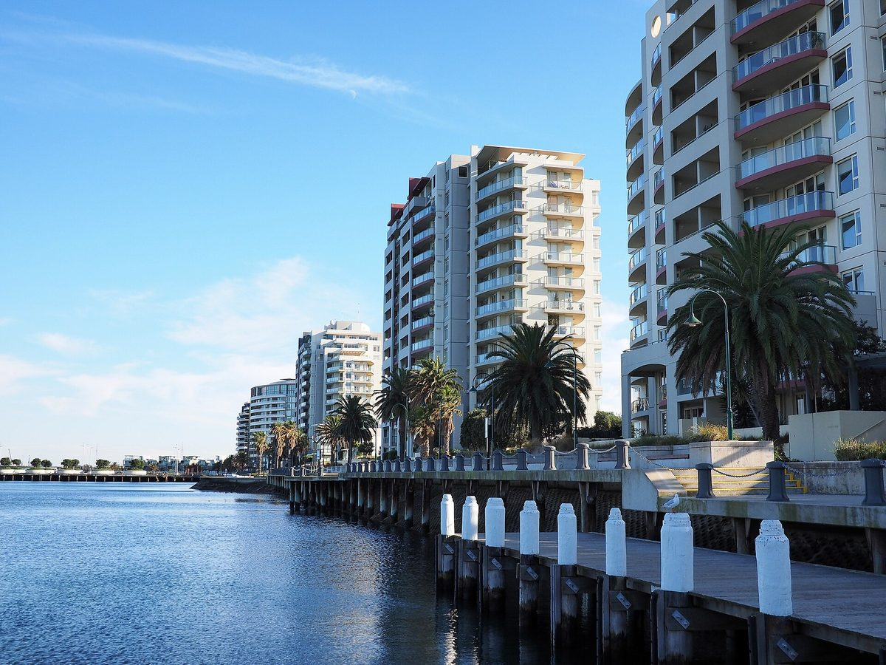
폴란드, 도시 주민도 에너지협동조합 만들 수 있게 법 고쳤지만…EU 국가보조 심사에 묶여 시행 멈춰
2025년 10월 개정법에 도시 조항 넣었으나 EU 집행위 긍정 결정 때까지 적용 정지…기후부 올해 안 결론 기대, 시민단체는 전기를 팔 수 없는 협동조합이라 경쟁 해치지 않는다고 주장

영국 웨일스 랜이드로스 주민 에너지 클럽, 정부 기금 94만1,280파운드 받아 사회적 가상발전소 넓힌다…10가구 더 무상 태양광·배터리
고등학교·주민센터·청소년클럽에 재생에너지 설비…웨일스 정부, 참여 가구 전기요금 연평균 368파운드 절감 추산, 공동체 기금으로 해마다 약 1만4,000파운드 예상
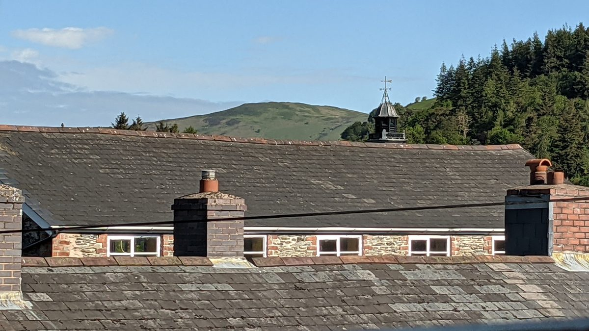
영국 레이크디스트릭트 국립공원청, 켄들 본부 주차장에 태양광 캐노피…발전량 3배로, 연 8만7,000kWh 생산
주차면과 사무동 지붕에 패널, 생산 전기 약 66% 직접 쓰고 남는 전기는 전력망으로…초지 대신 이미 개발된 땅 써 2030년 넷제로 목표에 다가서
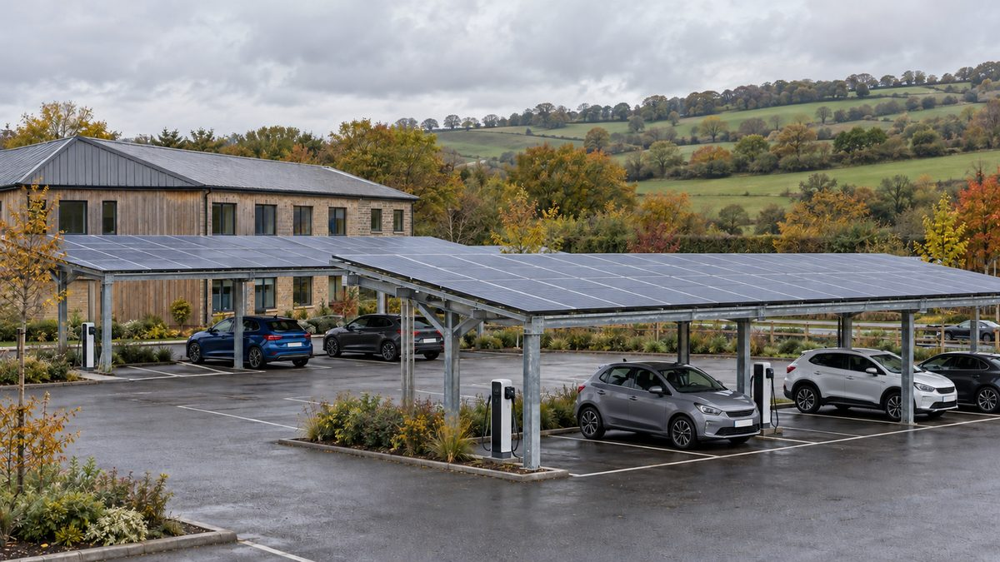
호주 블루마운틴스 시, 청사·문화센터·어린이집 등 시 소유 시설 9곳에 태양광·배터리…정전 때도 필수 서비스 유지
태양광 새로 3곳·태양광과 배터리 함께 3곳·기존 태양광에 배터리 추가 3곳, 뉴사우스웨일스 주 서부 시드니 기반시설 보조금과 시 재원으로 마쳐

프랑스 트레망틴 면, 어린이집 지붕 36kWc 태양광의 남는 전기를 반경 2km 공공건물 15곳에 나눠 쓴다…면의회 만장일치
'집단 자가소비' 참여 의결, 멘에루아르 도 면간 에너지조합 Siéml을 운영 법인으로 지정…운영비 연 858유로, 계약 20년

이탈리아 로디 '연대형 재생에너지공동체' 재단 첫 총회…시민·지자체·기업 회원 30여 명 참석, 에너지 공유 구성 4곳 중 2곳 가동
2025년 1월 비영리 재단으로 출범한 Cers 솔라레 로디자나, 사회 분야 활동가 2명 이사로 새로 선임…나머지 2곳은 국가 에너지서비스공사 심사 중
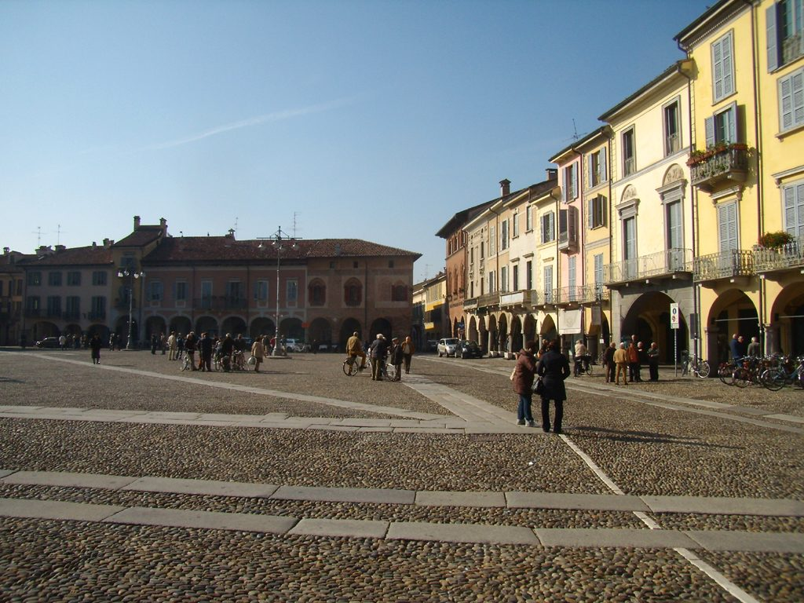
스페인 발렌시아, 시립 묘지 2곳 지붕에 태양광 2,495.96kWp 공사 마쳐…전기 4분의 1은 취약가구 800곳에 나눌 계획
시립 묘지 5곳 지붕을 쓰는 '레퀴엠 인 파워' 사업, 5곳 전체 투자 320만 유로·연 약 3,388MWh 예상…75%는 시 건물이 쓰고 대상 가정은 시 사회복지 부서가 고른다
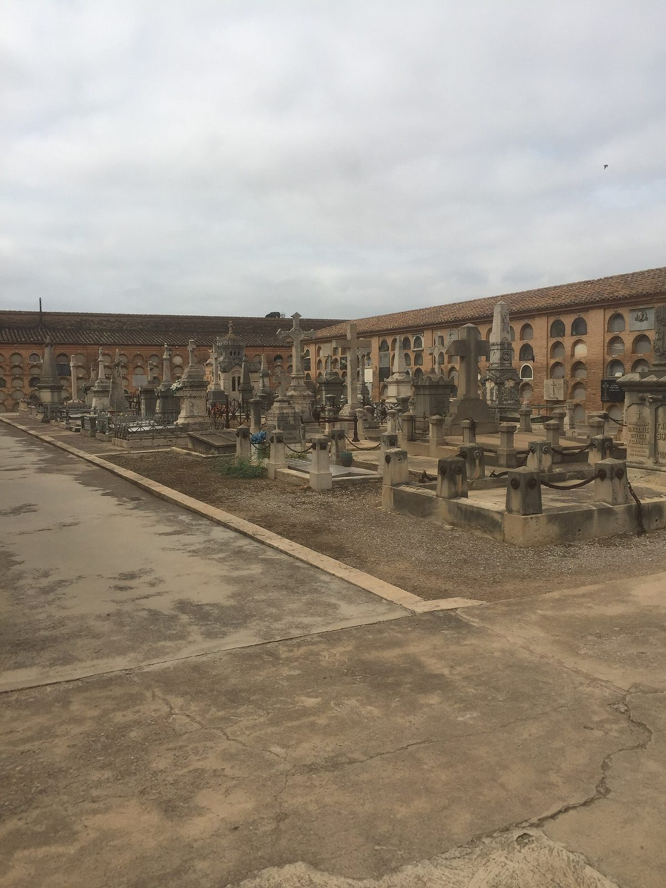
미국 미시간 '커뮤니티 솔라' 법안, 2021년 뒤 6건 나왔지만 모두 표류…하원·상원 4건 위원회에 묶여 청문회 일정도 없어
저소득 가구 몫 40%·요금 최소 10~20% 절감 담은 하원안까지 나왔지만 DTE·Consumers Energy "미가입자에 비용 전가" 반대…앤아버는 시 에너지공사로 가정에 태양광·배터리
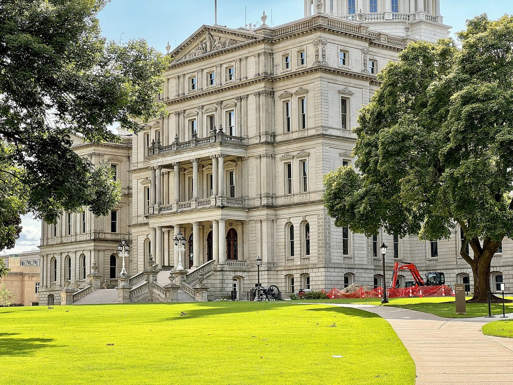
벨기에 자연보호단체 나투르퓐트, 에코파워의 메헬렌-노르트 풍차에 '다섯 조건' 이의…"조건 없으면 허가 말아야"
가을 이동철 박쥐 보호 야간 자동 정지·가동 뒤 최소 2년 독립 조사 등 요구…자연 부분만 '조건부 찬성', 소음·경관은 판단하지 않아

이탈리아 마르케 베나로타 시 재생에너지공동체, 조합원 총회 열고 운영 시작…시는 가입자 수로 마르케 1위·이탈리아 2위라고 밝혀
가입자 수·설비 용량·인센티브 금액은 공개 안 해…발전설비는 지역 회사 SDF Green Energy 소유, 국가 인센티브는 같은 1차 변전소 아래 주민·사업자에게 고르게 나눠
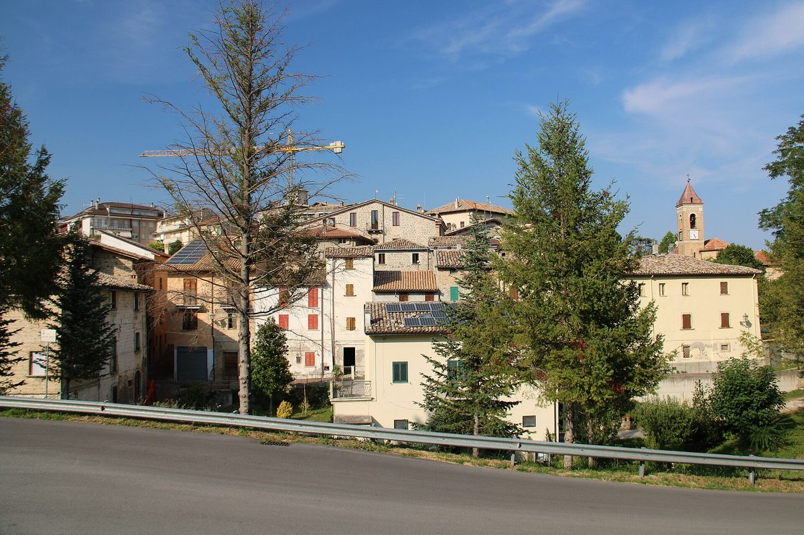
스페인 에이바르 에너지공동체, 시 건물 지붕 3곳 태양광에 조합원 90명 더 모은다
시청이 학교·문화회관 지붕 1,093㎡ 내줘 패널 364장 설치…가정·상점·중소기업 200곳 참여, 추천 가입하면 둘 다 회비 3개월 면제

호주 킴벌리 외딴 마을 6곳, 지붕 태양광 183채가 495가구 전기요금 깎아 줘…3년간 크레딧 약 27만5,000달러
서호주 전력공기업 호라이즌 파워 '킴벌리 마을 태양광 절약' 이달 마무리, 약 1.5MW·평균 8.2kW…패널 없는 이웃도 요금 크레딧, 경유 약 12만2,000리터 대체
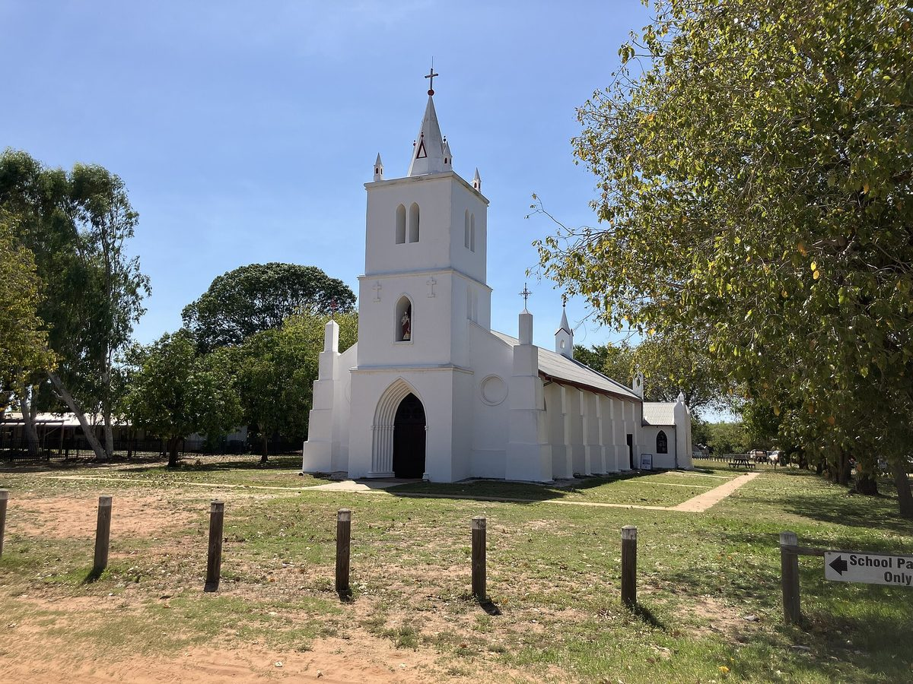
스위스 에네트뷔르겐, 민간 태양광 3곳·공공 1곳 묶은 지역 전기공동체…11월부터 공공건물 12곳에 동네 햇빛 전기
니트발덴 전력공사와 주 첫 사례, 연간 약 9만kWh 공급…공동체가 값 직접 정해 생산자에 kWh당 8라펜, 구매가 19.67라펜

태양광 1위 캘리포니아에 커뮤니티 솔라가 없다…2022년 법 만들고도 교착, 뉴섬 주지사 AB 1813 거부
규제기관 CPUC는 2024년 결정권을 전력회사 쪽에, 회피비용으로 값 매기고 배터리 붙인 새 법안은 9월 거부권…시민·노동·환경단체 연합 2027년 재추진, 개발사는 제도 있는 22개 주로 투자 돌려

루마니아 시비우시, 4.8312MW 시 소유 태양광 단지 계약…가로등 등 공공시설 전기요금 상계
델룰 더이 부지에 EU 현대화 기금 2,805만 레이, 연 최소 6,468.574MWh…2027년 초 착공 뒤 5개월 안에 가동, 남는 전기 담을 배터리 2,547만 레이는 따로 신청

독일 다하우군 피어키르헨 풍력단지, 허가·주민 지지 얻고도 연방 입찰 문턱에 착공 기약 없어
기초자치단체 2곳·협동조합 참여한 풍차 4기 계획…바람 약한 남부 보너스로는 북부와 겨루기 어려워, 지역구 연방하원의원 남부 전용 입찰 요구 공개서한

독일 바이에른 푀킹 주민 열망, 에너지협동조합과 손잡고 연방 시범사업 10만 유로…210가구 중 88가구 연결 희망
주민 모임은 현장 홍보·상담, 협동조합은 자본·기술 맡는 '지역 모임' 모델 시험…연방 보조금 결정 늦어져 가동은 2028년 말로 밀려, 면은 계획만 세우고 운영엔 안 나서
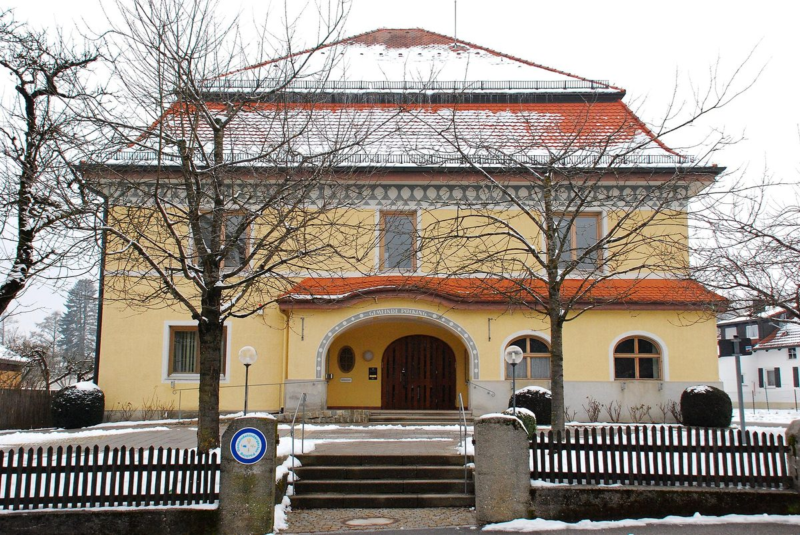
프랑스 툴롱 행정청사 지붕 372㎡ 태양광, 남는 전기 이웃 국가기관과 '집단 자가소비'로 나눠
생산량이 청사 사용량보다 절반가량 많아 지름 2km 안 공공건물에 배분…도지사 "전기요금 10% 낮출 수 있다", 바르도에선 지자체 17곳 이미 가동·30건 추진
서호주, 호주 주 가운데 처음으로 플러그인 '베란다 태양광' 합법화 추진…안전기준 의견수렴 시작
에너지장관, 가구당 전기요금 연 240호주달러·배터리 함께 쓰면 500호주달러 절감 추산…지금은 팔 수는 있어도 꽂아 쓰면 불법, 법 개정 시점은 미정

오스트리아 레오벤 시민발전소 에너지공동체 1년, 햇빛전기 약 9만3,000kWh 이웃끼리 나눠 써
2025년 3월 출범해 회원 80명 넘어…기존 전기 계약은 그대로 두고 덧붙여 가입, 생산이 수요보다 많아 새 회원 모집
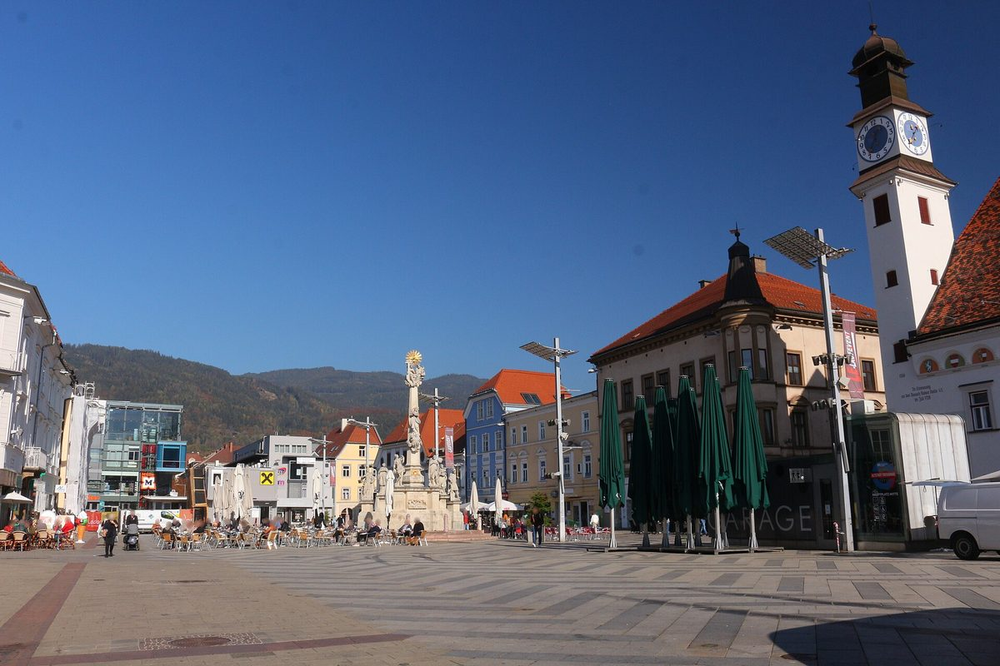
뉴욕주의회에 민간 전력회사 공공 매입 법안 계류…로체스터 공공 전력 운동, 지역 전력회사 공영화의 길로 삼으려
센트럴 허드슨을 채권으로 사들여 요금으로 갚는 방식…운동 단체는 공영 전력 요금이 13~63% 싸다고 주장, 카운티의회는 2024년 타당성 조사 예산 16 대 13 부결

프랑스 오드, "개발업자보다 마을이 먼저"…도 에너지조합·농업회의소 협약, 면·농민 공동 재생에너지 사업 1~3곳 공모
시아덴(Syaden)·오드 농업회의소, 10월 23일 나르본서 협약…공공건물 지붕부터 단계적으로 땅 위로, 초안 뒤 면이 기업 응모 받는 순서로 바꿔, 공모 마감 2027년 1월 18일

스페인, 학교 지붕 햇빛을 이웃과 나눈다…이비사 초등학교 40kW 중 27kW 주민에, 산타폴라는 학교·체육관 200kW로 에너지공동체
발레아레스 정부, 산조르디 초등학교 지붕 전기를 반경 5km 가정·소상공인에 1kW당 연 100유로로 나눠 약 300유로 절감 추산·취약가구 우선, 11월 9일까지 신청…알리칸테 산타폴라는 100kW 2곳으로 가구·상점 200곳 수요 최대 50% 충당
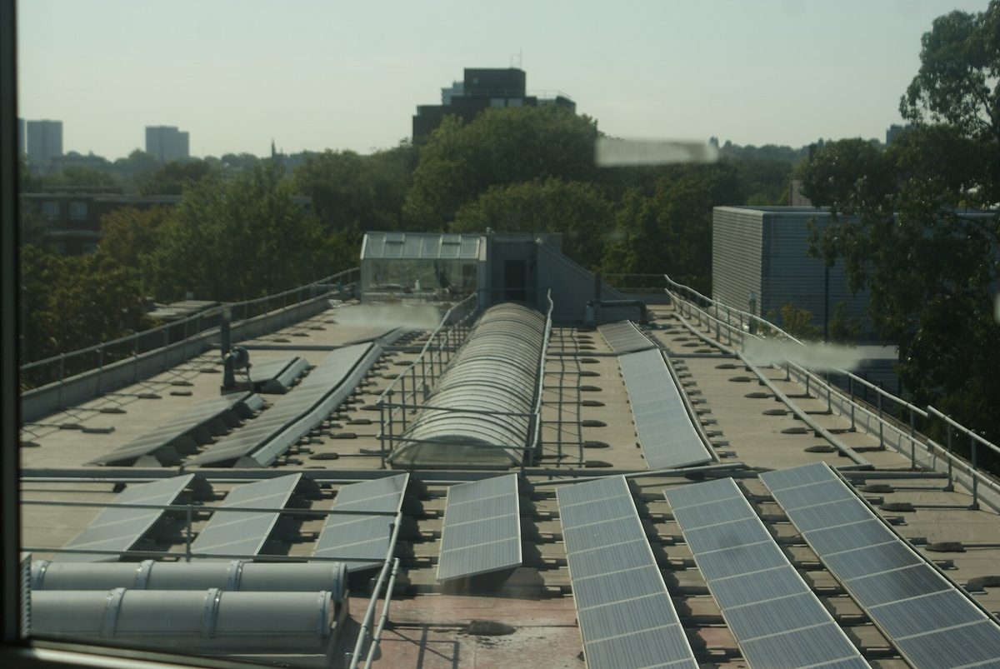
영국 주택협회 피바디, 공공임대 아파트 한 동이 지붕 태양광 1기 나눠 쓰는 'FlatSave' 참여…스티버니지에 첫 설비
E.ON Next·Allume Energy 상품, 공용 배터리로 전력망 도우면 주민에 연간 지급금…회사 측 "요금 최대 60%·지급금 연 최대 160파운드" 주장, 먼저 설치한 웨일스 트리발리스 "많은 경우 최대 50% 절감"
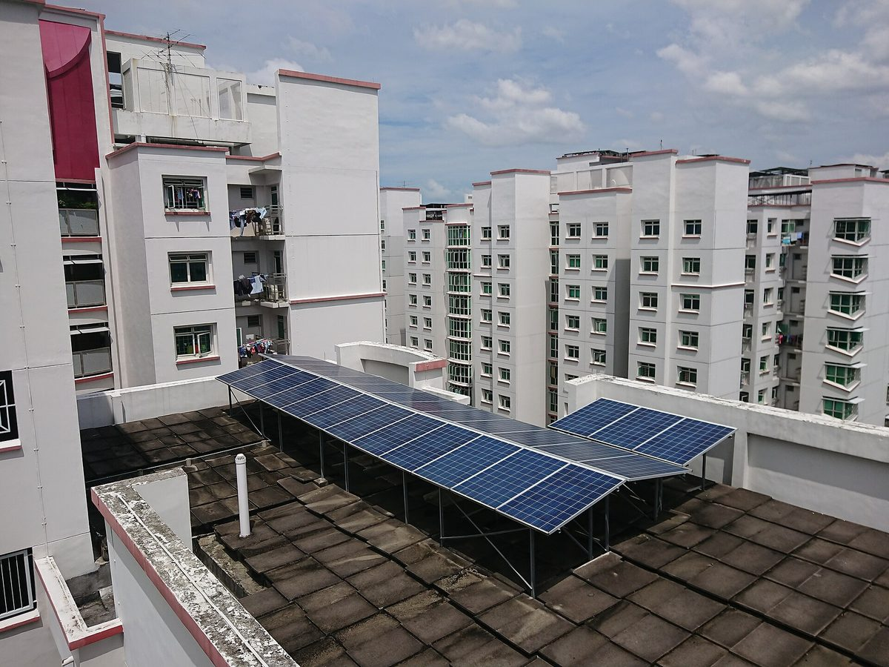
스페인 아로우사섬 주민단체, 면 공설시장 지붕에 50kW 태양광·28kWh 배터리…20가구·홍합 양식인 조합·면사무소가 전기 나눈다
시민단체 아로우사 엔 트란시시온의 두 번째 에너지공동체 Mar & Luz 2, 연 75MWh 추산…미리 정한 비율로 배분하고 남는 전기는 배터리 거쳐 배전망으로, 건축 허가 신청·배전선로 협의 남아
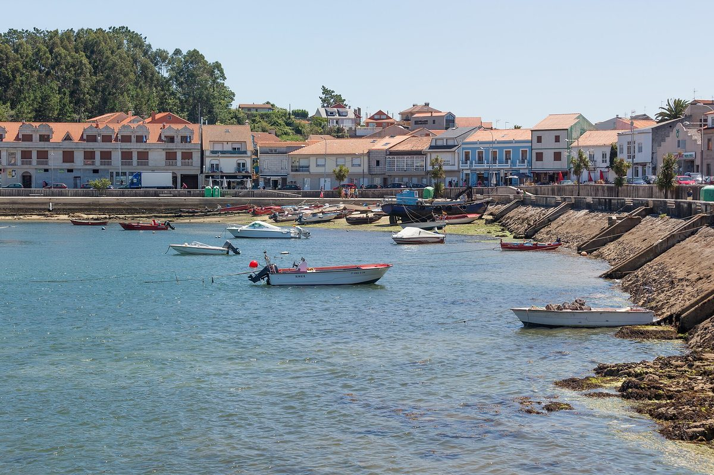
캐나다 최장수 영화관 패트리샤 극장 지붕에 24kW 시민소유 태양광…주민 최소 500달러 출자로 공동소유자 모집
BC주 카텟 지역 극장은 지붕만 내주고 전기를 사 써…솔셰어가 사업 맡고 노동자협동조합 VREC 솔라가 시공, 지역 주민 먼저 모집한 뒤 BC주 주민으로 넓혀 11월 4일 마감

미국 뉴저지 우드바인, 덮개 없이 남아 있던 옛 매립지에 10MW 태양광 추진…6,000만 달러 넘는 사업 착공 앞둬
개발사 CEP 리뉴어블스가 설비 소유하고 면은 땅 임대…시장은 가동 전 가입한 주민·사업장이 소득 제한 없이 요금 20~30% 할인받고 면은 30년간 해마다 약 15만 달러 임대 수입 얻을 것으로 내다봐

아일랜드 농촌부 장관, 재생에너지 지역이익기금 더 키워야…지금은 발전량 MWh당 2유로를 15년간 의무 출연
정부 새 농촌 발전 전략 발표 자리서 캘러리 장관이 운영사 출연금 인상 바란다고 밝혀, 인상 폭·시기는 안 내놔…마틴 총리는 5년간 전력망 180억 유로 투자로 농촌에 어려운 결정 온다고 말해

스페인 시민단체, 해·바람 전기 수익으로 연금·공공주택 대는 '세대 에너지 기금' 제안…11월 29일 총선 앞두고 정당에 전달
HOPE 등 '임풀소 레헤네라티보', 노르웨이 석유 연금기금 본뜨되 국내 실물자산 갖는 영구 기금으로…재생에너지 사업 세금 일부는 면에 남기고 단지마다 면 단위 에너지공동체, 2040년 에너지 주권 목표
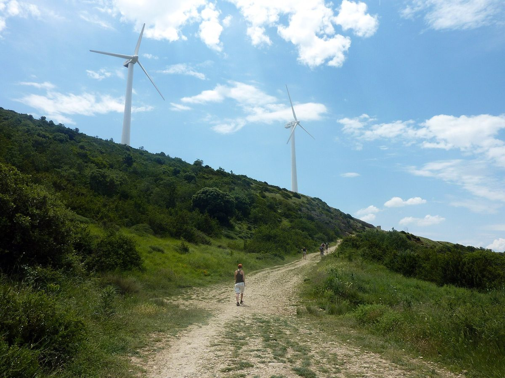
미국 앤아버 시영 전력 투표 앞두고 자금 격차…주민단체 누적 현금 약 6만 달러, DTE 지원 반대 단체는 누적 지출 170만 달러 넘어
7월 21일~10월 18일 보고 기간 찬성 단체 주민 소액 기부로 2만7,000달러 넘게 모아…반대 단체는 같은 기간 현금 4만 달러에 DTE 현물 7만9,000달러 넘게 받고 투자자 소유 전력회사 단체도 가세, 투표는 11월 3일
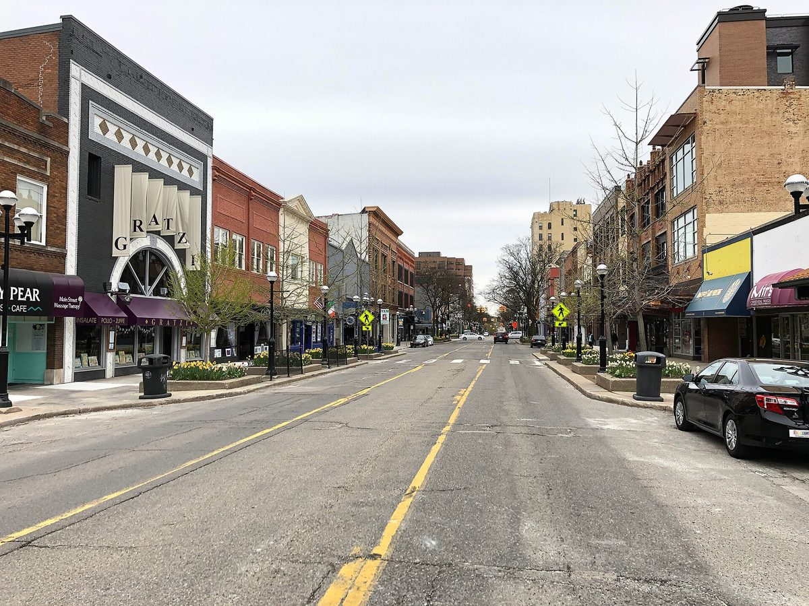
미국 브루클린 24세대 주택협동조합, 추가 분담금 없이 지붕 태양광…건물 통합계량 차익으로 23만2,000달러 대출 갚는다
선셋파크 '파크힐', 세대별 전력 계정 없애고 조합이 전기 한꺼번에 사서 조합원에게 소매요금 청구…재계량 수입 연 7,000달러·태양광 크레딧 연 7,000달러에 정부 지원금으로 상환, 갚은 뒤 쓰임은 이사회가 결정

이탈리아 칼렌차노, 5명 숨진 에니 옛 연료저장소 18만㎡를 태양광 거점으로…면에 '발전 가치 5%'·1MW 설비 무상 이전 협약
토스카나주·칼렌차노 면·에니 협약 체결, 정화·인허가 마친 뒤 최대 20MW 태양광 추진…배터리 갖춘 1MW 설비는 면에 넘겨 지역 에너지공동체용, 큰 설비 전기 가치 5%는 최대 30년간 면 몫

미국 오리건 유진, 대기업 부담 '클린에너지 기금' 주민투표 앞두고 찬성 72만7,000달러·반대 13만 달러 모금
주민 서명으로 투표에 오른 '메저 20-388', 대기업에 2% 부담금 매겨 기후 사업 기금 조성…반대 쪽 모금 이달 초의 5배로 늘었지만 격차 여전, '책임 없는 백지수표' 공방에 선거자금 진정까지
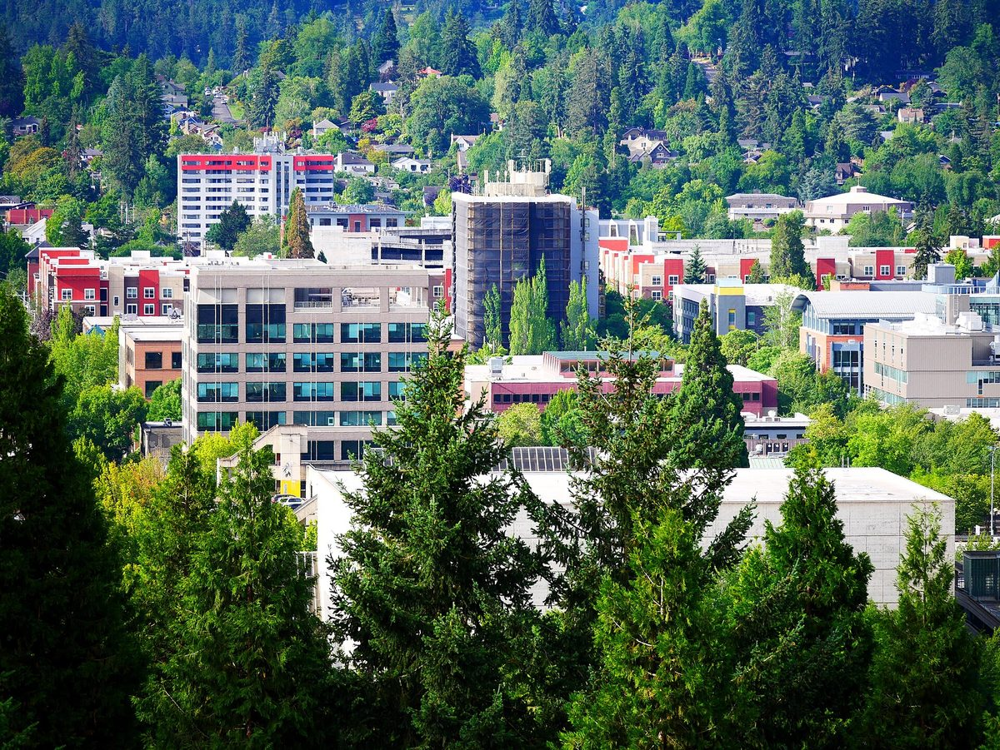
뉴질랜드 캔터베리 광역의회, 홍수방어 부지 2,700ha 태양광 임대 놓고 주민 의견 묻는다
환경캔터베리, 웨스트멜턴~얄드허스트 사이 땅을 개발사에 빌려주는 안 검토…초기 평가로는 300ha만 써도 약 150MWp·4만 가구분, 의장 "아무것도 정하지 않았다"
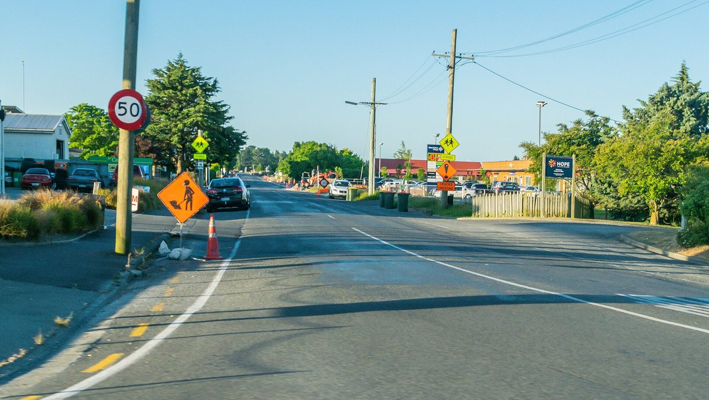
싱가포르, 정부기관 태양광 수요 묶어 통합 입찰…주차장 지붕·건물 벽까지 넓혀 2035년 4GWp 노린다
에너지시장청, 시공사 패널 지정해 기관별 건물 잠재력 평가·맞춤 설치안…산업단지공사는 외벽·컨테이너 태양광 기술 공모, 단독주택엔 공동구매까지 잇는 디지털 포털
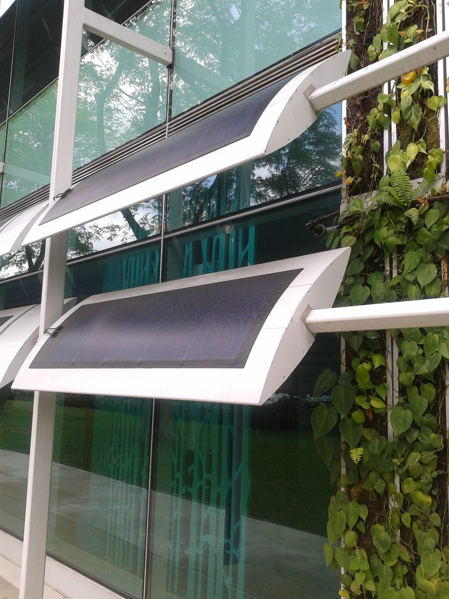
미국 캘리포니아 뷰트 카운티, 1,700에이커 태양광 개발사의 지역 이익 협약안 결정 미뤄…주민들은 환경평가부터 요구
주 허가 절차(AB 205)로 카운티는 허가권 없고 개발사는 지역 기관·비영리단체와 맺은 협약안 내야…연 30만 달러·소방서 부지·소방 50만 달러·보안관 25만 달러 제안, 카운티가 거절하면 다른 비영리단체와 맺을 수도

미국 미시간, 11월 3일 전력회사 정치자금 금지 주민투표…시민 56만 명 서명으로 올린 제안 2호
전력·가스 회사 PAC의 후보 직접 기부와 임원·이사·가족 기부까지 막는 안…찬성 측은 비싼 요금·잦은 정전이 전력회사 입김 탓, 반대 측은 표현의 자유 침해·영향력이 전국 거액 기부자로 옮겨갈 뿐
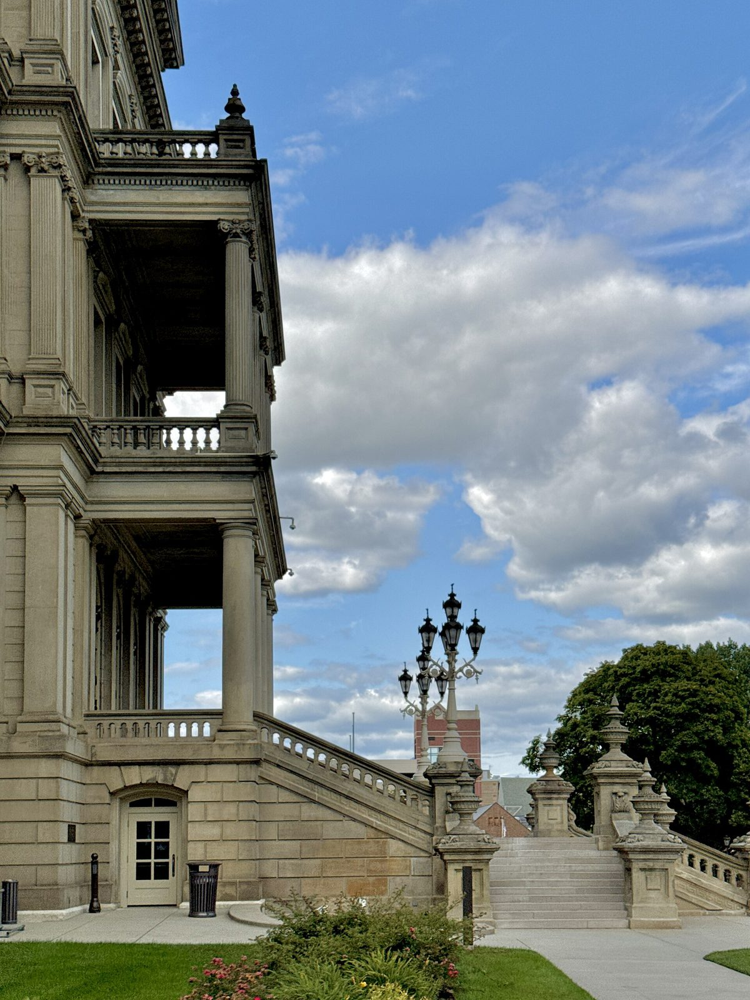
미국 캔자스 포트스콧, 시 정수장에 225kW 태양광·배터리 설치 의결…하수 기금에서 1% 이자로 빌려 짓는다
시 위원회 3 대 1 가결, 사업비 약 55만 달러 가운데 절반가량은 연방 직접지급으로 시 순부담 약 27만 달러…시공사 추산 연 3만 달러 절감·회수 약 8년, 2027년 말까지 가동해야

스리랑카 만나르 국영 풍력단지 6년, 어민·주민 "어획 줄고 침수" 반발…정부, 만나르 신규 사업 동결
1단계 30기·104MW 2020년 가동, 14기 추가 공사 중…주민들은 터빈 탓으로 보지만 원인은 확인 안 돼, 시민위원회 주도로 소송 2건
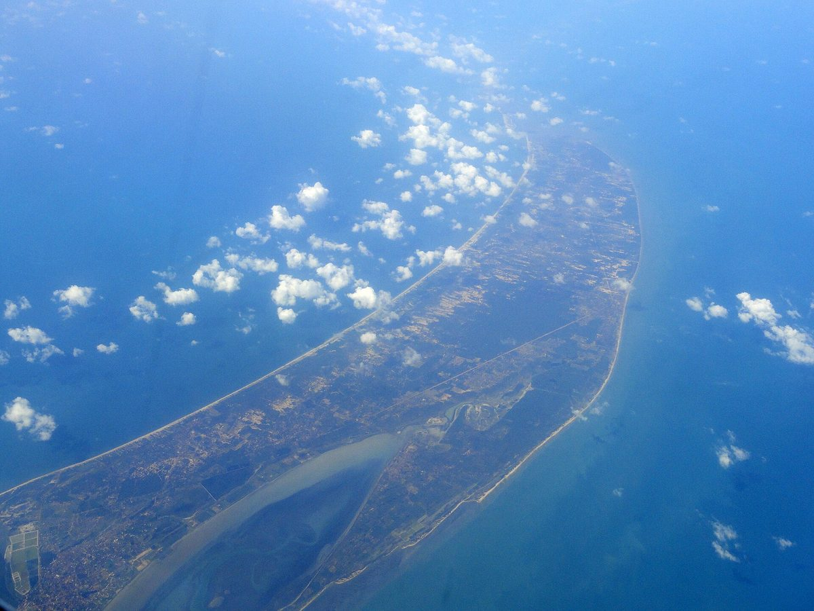
남아공 에쿠르훌레니시, 농산물시장 지붕·유휴부지에 25.6MW 태양광 착공…민간이 짓고 시가 20년간 전기 산다
사업비 3억6,000만 랜드, 연 약 40GWh 생산 예정…시는 초기 자본 없이 전력구매계약, 독립발전사업자에게서 최대 2,400MW를 사들이는 시 조달 프로그램의 하나

이탈리아 크레모나 교구, 재생에너지공동체 재단 7곳 연결망…지자체·본당 등 약 90곳 참여, 가동 설비 약 6,000kW
2년이 안 돼 조합원 316명, 그중 85곳은 중소기업…25MW 가동 대기, 태양광 업체와 산업 협약 맺고 배터리 저장·전력망 유연성 서비스로 넓힐 계획
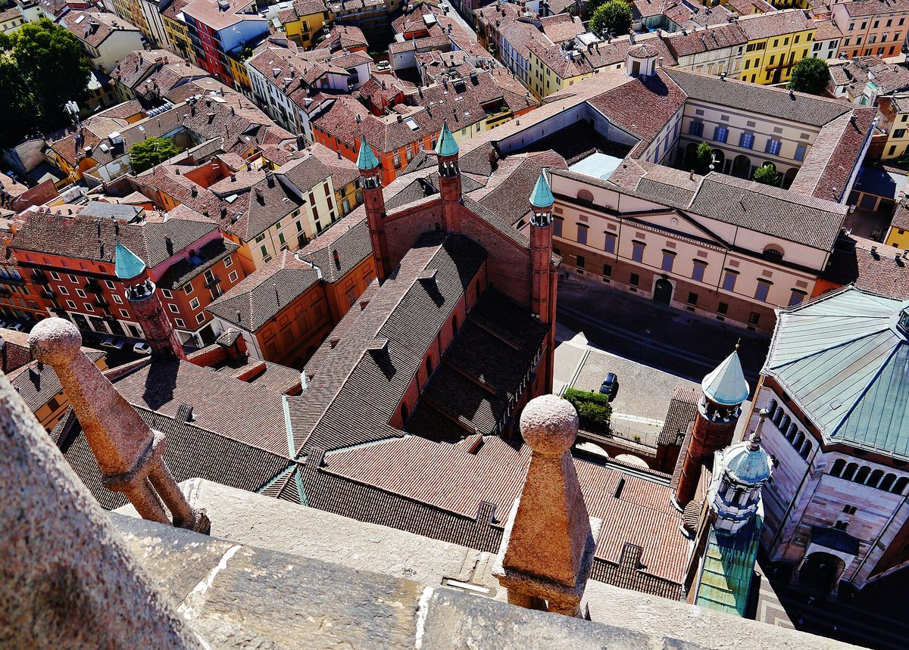
그리스 서마케도니아 에너지공동체 태양광 800건 중 계통 편입 268건…가동은 186건, 453건은 취소
배전망 운영사 의회 제출 자료, 477건은 계통 여유 용량 부족으로 연결 못 해…변전소 변압기 증설로 71건 53.2MW에 확정 연결 제안, 2029년 프톨레마이다 새 변전소

영국 최대 공동체 소유 태양광 '데릴워터', 배전망 회사가 넉 달 발전 막아 재정 위기…조합원 9,500명 협동조합
북데번 40MW 단지, 변전소 변압기 차단 여파로 5월부터 여름 내내 멈춰…배전망에 연결된 작은 발전소는 출력제한 보상도 못 받아

스페인 무르시아주 에너지공동체 19곳 생겼지만 발전 중은 4곳…지자체가 공공건물 지붕 내주고 취약가구에 전기 나눈다
로스알카사레스, 공공건물 지붕 4곳 내주는 대가로 생산 전기 10%를 에너지빈곤 가구에…선구 공동체는 정부 보조금 12만4,000유로 정산 못 받아 대출로 공사

스코틀랜드 니어트나가오이스 해상풍력 공동체기금, 동래머뮤어 주민단체 3곳에 11만 파운드 넘게…주택 단열에 4만5,000파운드
주민 심사단이 주민이 만든 '지역 장소 계획' 목표에 맞춰 배분…이번 회차는 가구 에너지효율과 생물다양성에 집중

미국 워싱턴주 키챕카운티, 공익사업구 전기사업 권한 놓고 주민투표…민영 전력사 반대 운동 240만 달러 vs 찬성 자원봉사자 7,000달러
퓨젓사운드에너지 요금 2년 새 45% 올라…'제안 1호' 통과되면 약 13만 전기 계약 공영 전환 타당성 조사 길 열려, 결과는 11월 선거에서

영국 셰필드시, 시영주택 최대 5,257채 지붕 빌려줘 태양광·배터리 설치 추진…212채는 기후투자채권 등 167만 파운드로
2030년 4월까지 모든 시영주택 에너지등급 C 이상 의무…외부 기업이 투자하는 '서비스형 에너지' 방식, 세입자 연락관 두고 추운 집부터
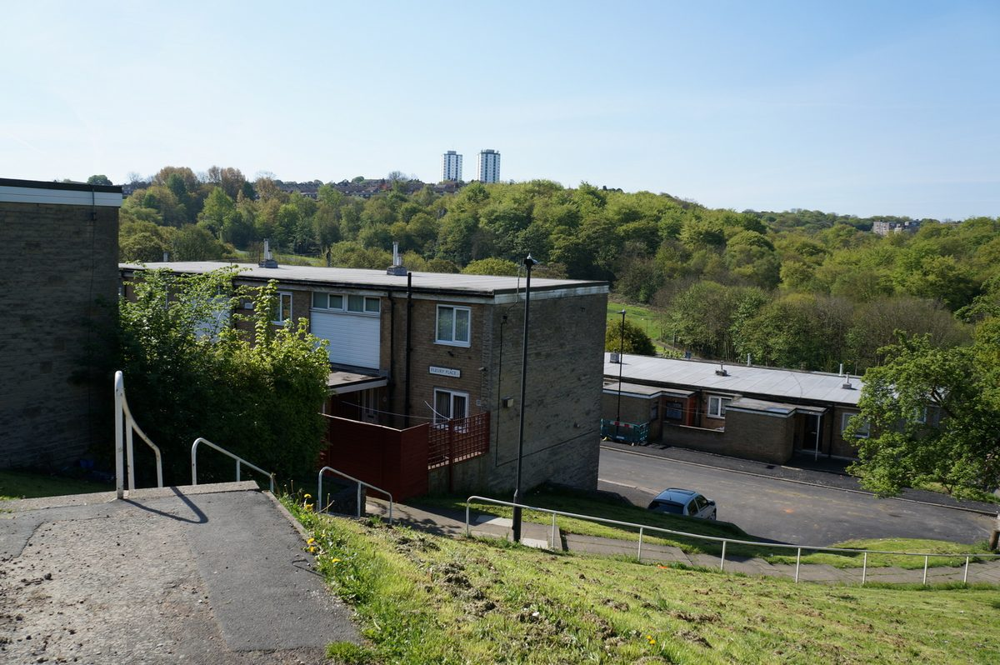
폴란드 골리나 시의회, 시의 에너지협동조합 가입 만장일치 의결…문화의집·의용소방대와 함께 재생에너지 생산
새로 생긴 골리나 시 에너지협동조합이 전기·바이오가스·바이오메탄·열 생산과 거래·저장 맡아…배전사 전기 구매 줄이고 에너지 자립 지향, 국가회복계획 자금도 노려
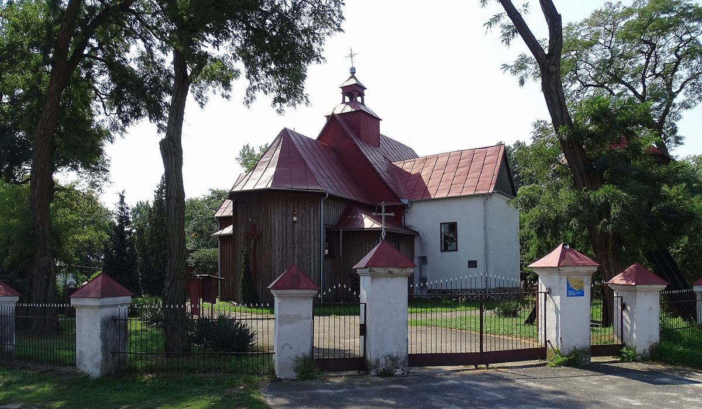
독일 오버하운 주민 협동조합, 마을 열공급망 중앙시설 상량식…98가구 조합원, 총사업비 800만 유로
7년 준비 끝에 바이오매스 보일러 건물 완공, 2027년 여름 전면 가동 목표…연방 보조 40%·지역 은행 대출에 조합원 출자 4,000유로·연결비 2,000유로
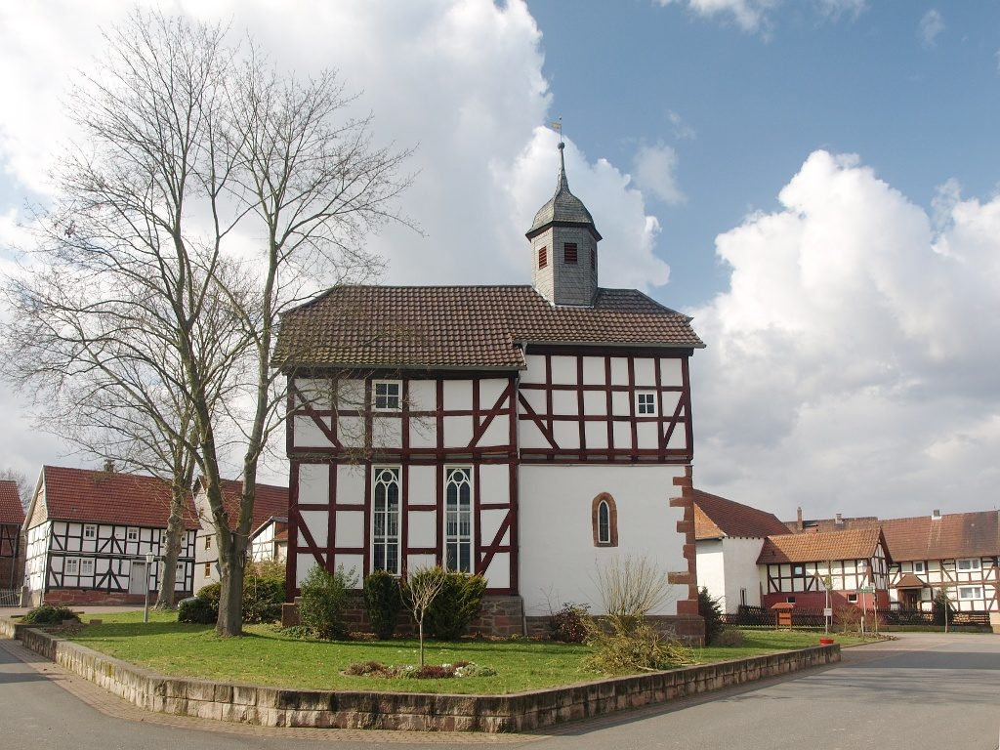
벨기에 비엘살름 숲 풍력 5기 허가…시민협동조합 쿠랑 다르 공동 사업자로 참여, 4기는 시 소유 땅
왈로니 국토부 장관, 1월 불허 결정 뒤집고 단일허가…기당 7MW·최고 250m, 연 97GWh로 2만6,000가구분 예상, 반대 주민모임은 국가행정법원 소송 예고
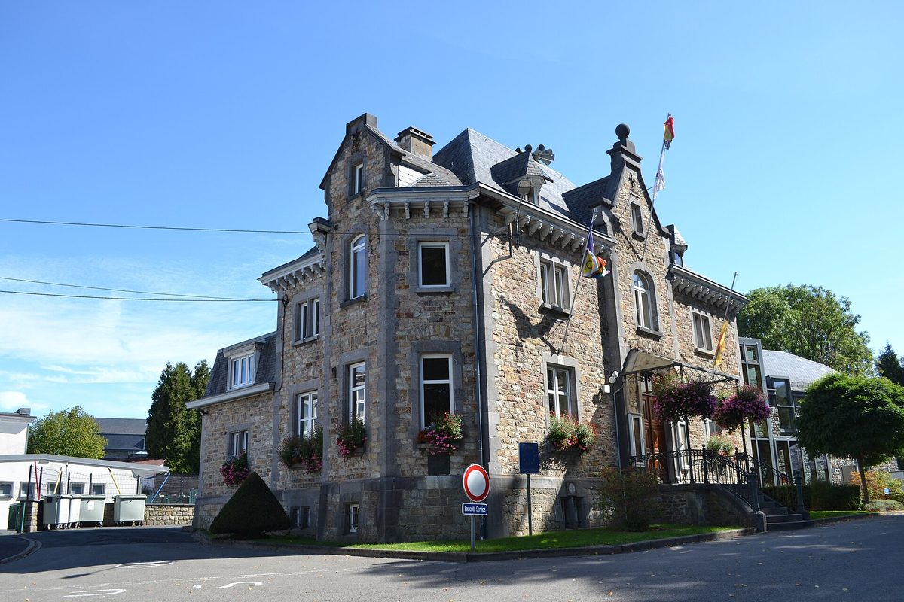
독일 에르딩 군·22개 지자체 에너지회사, 풍력 부지 협상 재개…시민에너지공동체 BEG 이젠탈과 지역 나눠 맡기로
2014년 10H 규정으로 멈췄던 '에너지비전 에르딩', 에너지알리안츠 바이에른과 풍력·태양광 약 40MW 목표…군은 히르샤우 태양광단지에 출자, 매립지 태양광은 망 연결 문제로 중단

프랑스 샤토가야르 마을 학교 지붕에 시민협동조합 태양광 패널 178장…조합원 215명, 집단 자가소비 추진
주민 투자 협동조합 '플랭 데네르지', 공공건물 지붕 빌려 발전소 세워…방학 끝나기 전 설치 마무리, 이웃이 함께 쓰는 전기를 요금 관리하며 공급할 계획
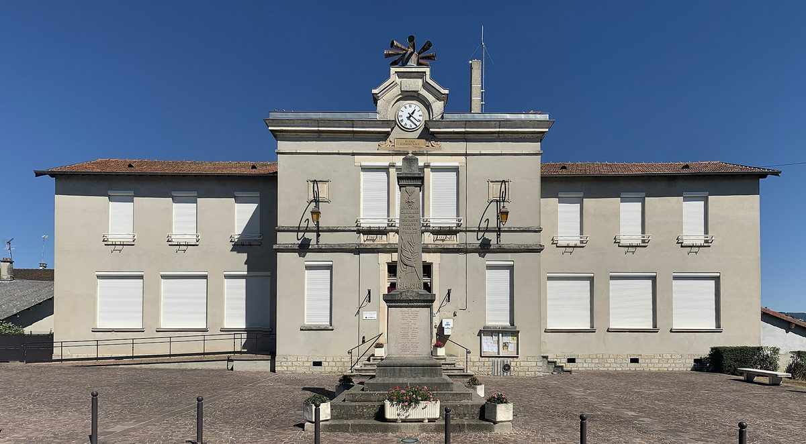
폴란드 코닌 시 폐기물공사, 소각장 전기 시 공기업 4곳에 직접 판매 시작…내년엔 시청에도 공급
시가 99.58% 소유한 MZGOK, 전력 판매 면허 받아 지역난방·상하수도 공기업 등과 계약…시·공기업 에너지 클러스터 발전량 연 5만661MWh로 소비량의 두 배 넘어
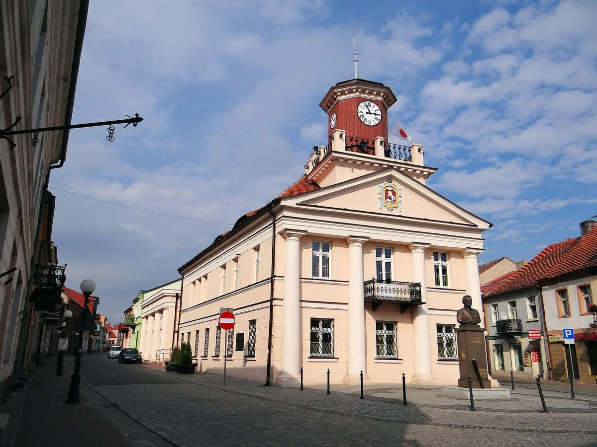
네덜란드 하설테르네이베인 마을협동조합 '에너지 나누기' 설명회에 주민 100명 가까이…동의서 모자랄 만큼 호응
마을협동조합 더 브뤼흐·사회단체 로빈두트 공동 주최, 새 에너지법이 허용한 이웃 간 전기 나눠 쓰기 설명…주민 사용량 자료 모아 실행계획 세운 뒤 실현 여부 판단
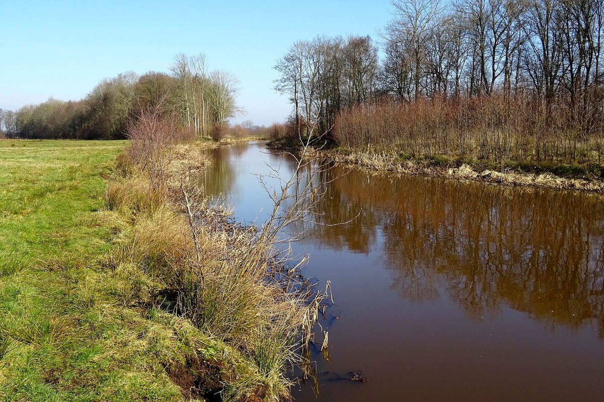
루마니아 탄광지대 고르지·돌지 군, 에너지공동체에 EU 기금 98% 무상 지원 공모…시민·아파트 주민회도 직접 신청
고르지 4,157만6,941유로·돌지 352만9,411유로 배정, 신청은 2027년 3월 31일까지…그린피스 루마니아, 40가구 아파트 한 동이면 자부담 8,000유로 예시 들며 11월 주민 워크숍

그리스 에너지공동체 연대체 ΔΕΣΜΗ, 정부 새 법안에 "주민 기반 넓은 공동체에 계통 우선 접근권을"…민간 사업과 '형식상 같은 대우'로는 밀려난다
환경에너지부 법안 의견수렴에서 3·4조 비판…계통 여유 용량 별도 몫, 짧은 인허가, 대기 신청 순위 보호, 출력제한 상한, 규제청 감독 등 5가지 요구
미국 로드아일랜드, 주 청사 주차장에 태양광 카포트·배터리·충전기…930만 달러 투입
프로비던스 스미스힐 청사 단지 재생에너지 1MW로…연방 지정 예산 450만 달러에 탄소배출권 수입 보태, 2027년 1분기 착공·연말까지 가동 목표

미국 뉴멕시코 라스크루시스 공립학교, 주 기금 350만 달러로 학교 4곳 주차장에 태양광…콘리 초교 226kW
주 재정청 '지역 태양광 접근 기금'에서 초교 3곳 100만 달러씩·고교 50만 달러 승인…교체 앞둔 지붕 대신 주차장 차양 택해, 유지관리는 교육청 몫

이탈리아 코디고로 시의회, 공공 재단형 재생에너지공동체 엘렉트라 정관 개정 놓고 충돌…야당 의원 3명 퇴장
야당은 열흘 만에 검토하기엔 서류가 너무 많다며 항의, 여당 원내대표는 재단이 공동체를 공공이 완전히 통제하는 구조로 바꾸려는 것이라고 반박…내년 말까지 마치면 지원금·ARERA 감면 기대
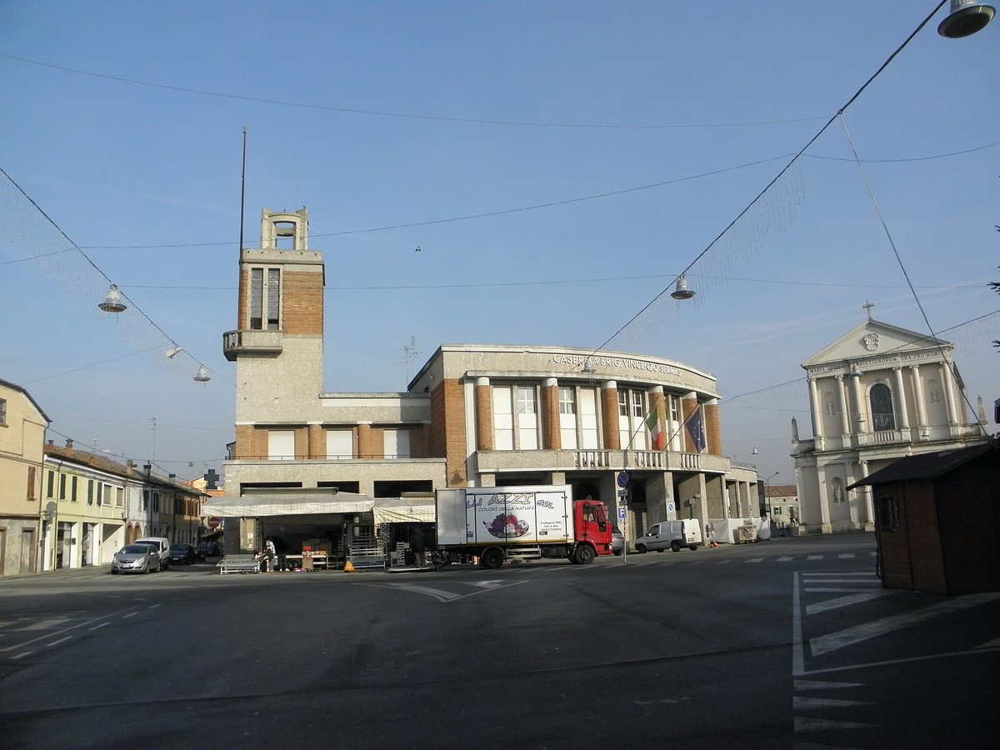
오스트리아 티롤 나비스 마을의회, 미슬코프 풍력 사업도 주민설명회도 거부
2년 넘게 회의 15번 끝에 "주민이 원치 않는다"…사업자 "토론도 하기 전에 문 닫아" 반발하며 사업 일시 정지, 연 최대 63GWh(약 1만6,000가구분) 계획
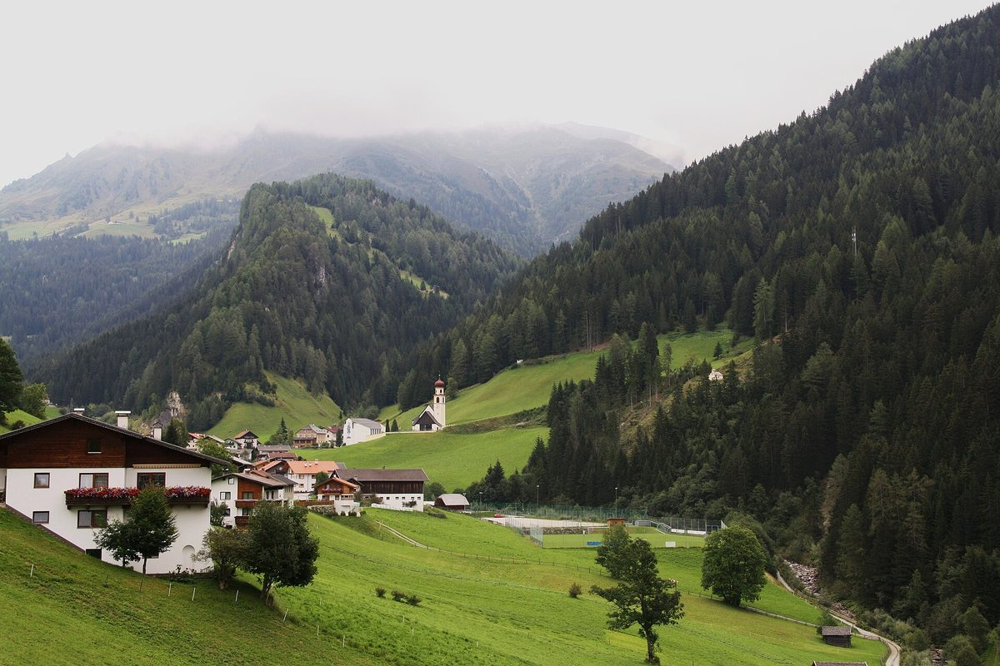
미국 미시간주, 대형 태양광·풍력 허가한 지자체에 MW당 최대 5,000달러 지원금…57곳 승인
'재생에너지 준비 지역 지원금' 착공 때 지급, 하트 타운십은 60만 달러로 도로 보수·조례 정비…주 정부 우회 허가로 넘어간 오타와 카운티 200MW 태양광은 법정 다툼
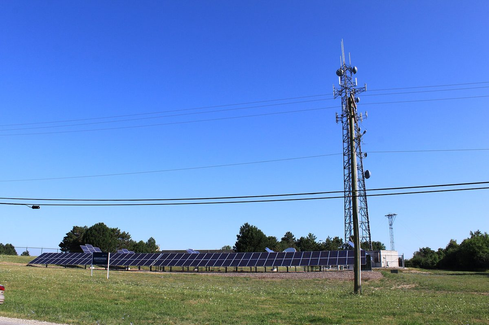
스코틀랜드 노총·환경단체, 육상풍력 105곳 5년 세후이익 28억3,000만 파운드 중 90% 가까이 주주 배당 분석 내놓고 풍력·버스 공공소유 확대 요구
지역경제전략센터(CLES) 분석…버스 공공예산 2019/20년 뒤 72% 늘었지만 이용은 줄어, 공공소유·실행단 신설과 GB에너지 역할 확대 제안…업계는 민간 투자 여전히 필수, 정부는 CARES 예산 1,500만 파운드로 늘렸다고 답해

이탈리아 알프스 산골 살베르트랑·엑실레스에 재생에너지공동체…별장 지붕 태양광 전기를 상주 주민이 쓰고 공동 수익은 지역 연대사업에
2024년 설립된 CER 시네르지가 추진, 같은 1차 변전소 권역의 시민·중소기업·지자체 참여…첫 생산자 확보 뒤 새 소비자와 2025년 이후 설비 생산자 모집

독일 바이에른 1,000명 마을 뢰프싱엔, 주민 협동조합이 만든 우드칩 열공급망 가동…133가구 가스·기름 난방 끊는다
2022년 주민 아이디어로 시작해 2024년 여름 협동조합 설립…약 8.5km 배관망으로 연간 난방유 약 36만 리터 절약 기대, 강물 열 등 다른 열원도 연결 가능
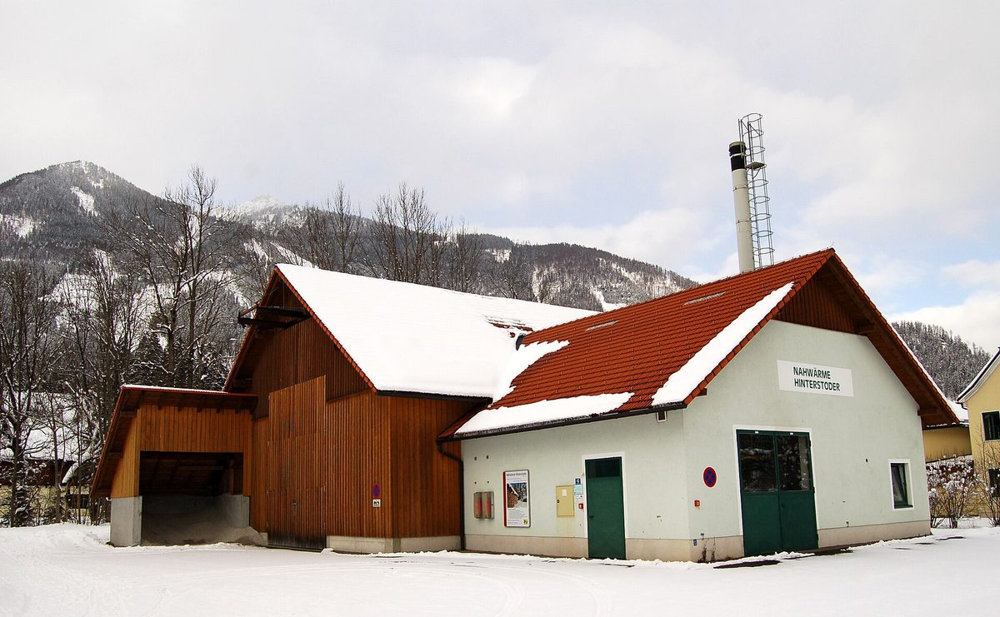
프랑스 베리에르 마을이 지분 갖고 추진한 풍력 5기, 15년 만에 무산…국사원, 검독수리·독수리 보호 위해 허가 취소 확정
마을과 기업 2곳의 합작 회사가 추진…공청회 찬성·도지사 허가까지 받았지만 법원은 회피 대책으로도 대형 맹금류 위험을 줄이지 못한다고 판단, 마을은 태양광 사업으로 방향 돌려
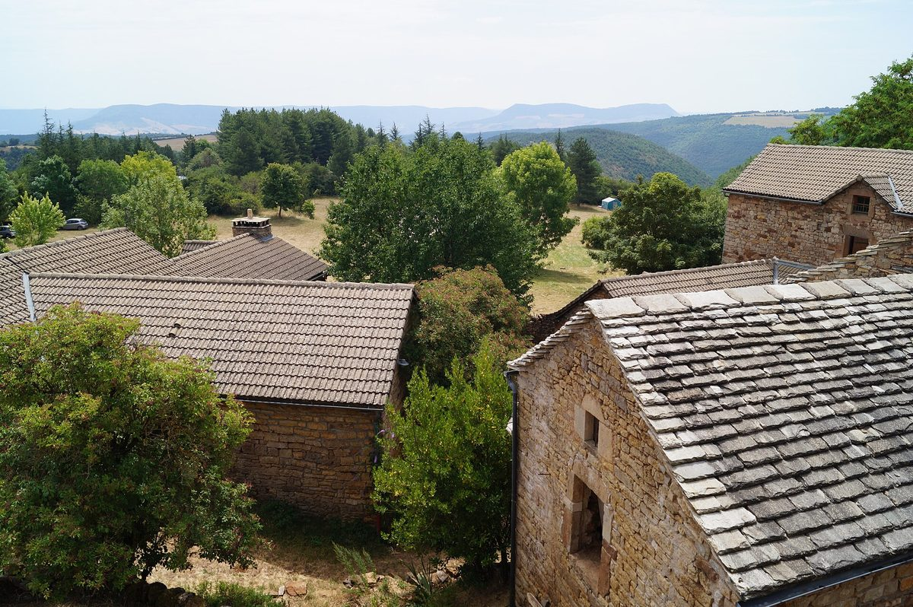
프랑스 오리냐크 마을, 시민 재생에너지 협동조합 추진…10월 28일 주민설명회
마을·제3의 공간 라 글리사드·오크시타니 시민에너지 네트워크 ECLR과 주민이 함께 태양광 발전 사업 준비

프랑스 파리 시민 태양광 협동조합 엔에르시티프, 시 소유 건물 지붕 23곳·1,180kWc로 1메가와트 넘어
2016년 세운 조합원 425명 협동조합…새 묶음은 15년 운영 뒤 파리시에 넘기고 학교·이웃 시 건물이 전기를 직접 나눠 써, 2027년까지 28곳·약 1.6MWc 계획
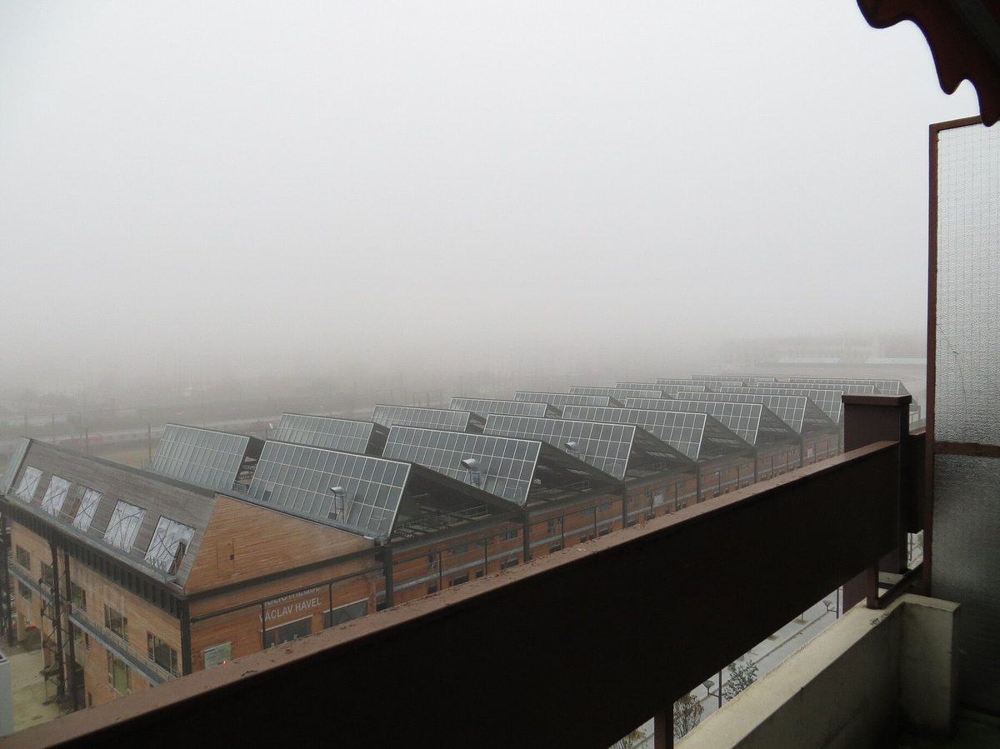
벨기에 오스텐더시, 시민 협동조합 보방과 구도심 화석연료 없는 난방 추진…26일 시의회에 'F5D' 컨소시엄 협약 상정
10년째 열공급망 함께 운영한 협동조합이 1차 배관망 설계·주민 참여 맡고 시는 도로·건물·공사 정보 공유…동네 열교환소로 기존 주택·소형 아파트 연결 목표

스페인 아스투리아스, 기후위기 대응 지자체 사업 24건에 260만 유로…산골 마을 산타 에울랄리아 데 오스코스 체육관 지붕 에너지공동체에 14만9,722유로
38개 지자체 신청해 24건 선정, 서부 지자체 10건에 120만 유로…산 티르소 데 아브레스·엘 프랑코 에너지공동체도 지원, 1차년도 집행 기한 2027년 3월 15일로 늘려
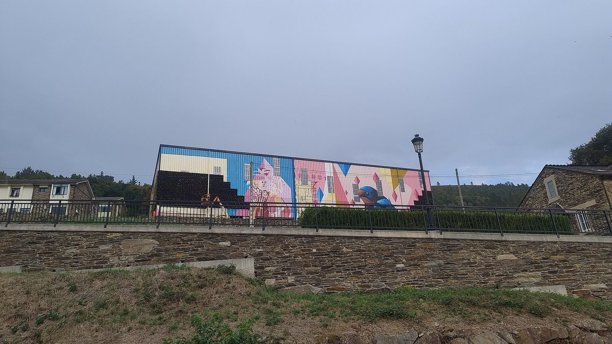
벨기에 브뤼헤시, 지자체 공동 에너지회사 통해 제브뤼헤항 풍력 8기에 최대 약 767만 유로 출자 추진…26일 시의회 표결
사업회사 포르트피네코가 모으는 1,533만5,000유로 가운데 절반은 제피어, 절반은 항만공사 몫…브뤼헤 몫은 최소 약 308만 유로, 시는 추가 배당 기대하고 다년도 재정계획엔 부담 없다고 설명

미국 앤아버, 11월 3일 '시영 전력회사 설립' 주민투표…주민 5,000명 넘게 서명한 제안 E
통과하면 선출직 이사회가 DTE 에너지 대신 시가 운영하는 전력회사로의 전환 맡아…찬성 측은 탄소중립 목표 이룰 유일한 길, 시장은 설비 매입 비용 들어 반대
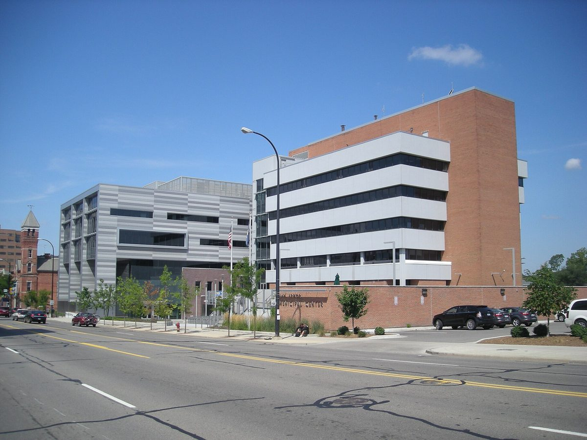
이탈리아 빌라레자, 태양광 발전소 관련 보상 협약으로 유치원 난방설비 교체…마을 예산은 0원
관개·농지개량 조합이 공사비 전액 부담, 마을은 8월·10월 집행부 결의로 협약 승인·확인…다음 단계 창호 교체엔 국가 보조금 6만1,909.5유로
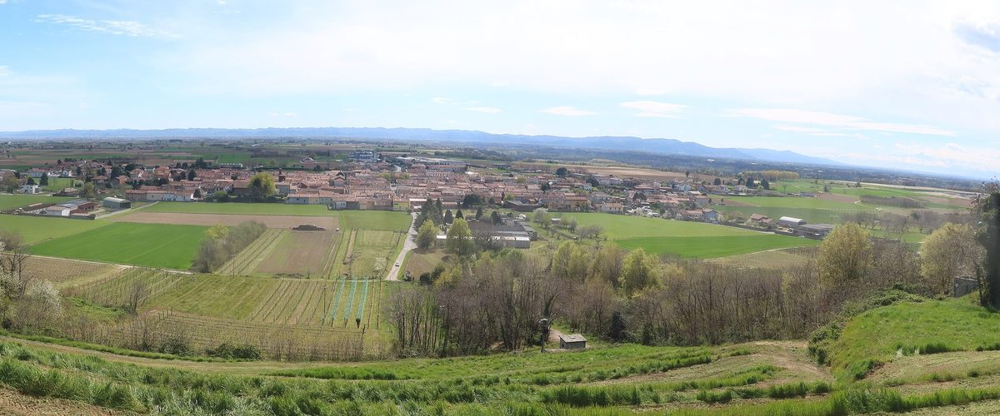
키프로스 연구진, 다섯 가구 1년 실측 자료로 에너지공동체 모의실험…공용 배터리 예측 제어로 순비용 23.4% 감소
이웃 간 전력 거래·공용 배터리 묶은 모형, 공동체 연간 순비용 623.56유로→477.79유로·망 구입 전력 약 7.4% 줄어…실제 요금 절감 기록 아닌 계산 결과
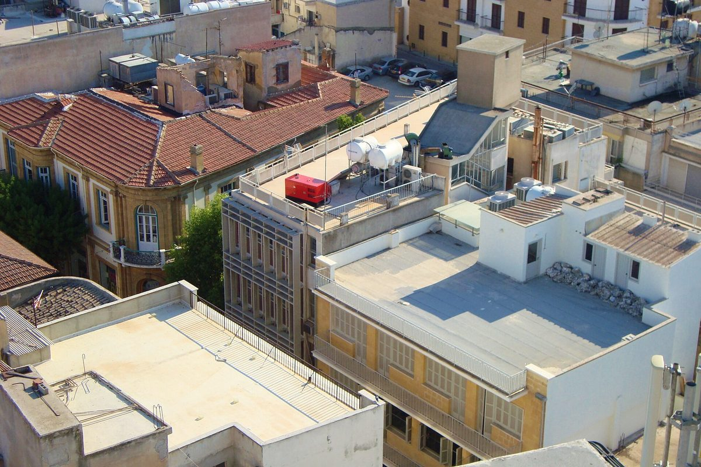
루마니아 탄광 도시 루페니 시, EU 기금으로 1MW 태양광 발전소 완공…지우 계곡 첫 태양광, 연말 계통 연결 예정
사업비 약 400만 레이 전액 EU 기금, 연결 공사비 65만 레이 이상은 시 예산…시장은 가로등·청사 전기요금 매달 20만 레이 넘게 아낄 것이라 밝혀, 저장 배터리·두 번째 1MW 발전소도 추진
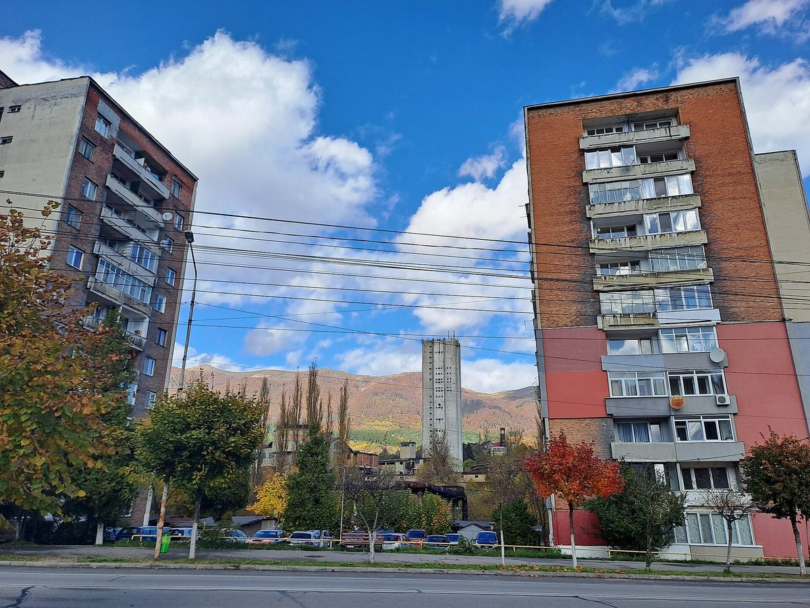
일본 경산성, 지상 태양광 FIT·FIP 지원 2027년도 종료 방침…공공용지·카포트 등 4가지만 계속
9월 30일 위원회서 제시…10개 후보 가운데 지역 신전력 공급·경작포기지 활용 사업 등은 행정 관여를 담보할 수 없다며 제외, 2027년 4월 새 제도 예정

호주 빅토리아주 셀비 주민센터, 태양광·배터리 갖춘 '회복력 거점'으로…배전회사·지역 공동체 은행 6만 호주달러 지원
정전 때도 건물 스스로 전기 쓰는 설비, 내년 초 가동 목표…건물 손상으로 10개월 문 닫았던 센터는 다시 열어
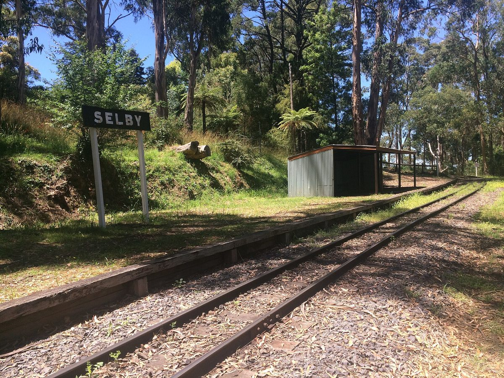
프랑스 로데브 시민협동조합, 옛 방직공장 지붕에 200kWc 태양광 추진…반경 10km 주민·상점·공공건물과 전기 나눈다
조합원 320명 솔레르 와트 로데부아, 전력회사에 모두 팔던 방식에서 집단 자가소비로…사업비 18만 유로 중 12만 유로를 100유로 출자·조합원 대여금으로 모아 2027년 가동 목표

독일 정부 EEG 개정안 풍력 임대료 3.5% 상한에 기센 군 지자체들 수입 끊길까 우려…땅 임대 대신 운영회사 지분·주민 협동조합 참여로 맞선다
라베나우·랑괴른스·알렌도르프 시·읍장, 임대 수입 급감이나 사업 중단 경고…랑괴른스는 고속도로 옆 태양광단지 운영회사 50% 소유, 알렌도르프는 시가 지분 50% 갖고 전기를 시 건물에 쓰는 안 검토

일본 이이다시 시민 태양광 회사가 세운 자연에너지대학, 5기까지 77명 수료…지역 재생에너지 사업자 직접 길러
오히사마에너지 2016년 사단법인으로 설립, 1년 11회 수업에 강사 24명…수강생 모두 사업계획서 완성, 수료생은 태양광·지역 전력 소매·바이오매스 사업으로
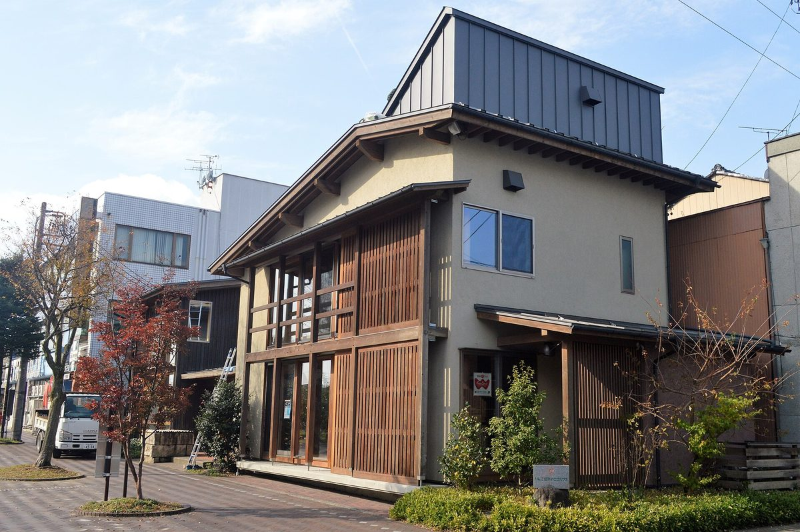
오스트리아 부르겐란트 주 에너지회사, 풍력·태양광 들어선 31개 마을 주민에게 500유로부터 출자 문 열어…연 3% 고정 5년
부르겐란트 에너지 주민 참여 2026, 500·2,500·5,000유로 세 묶음에 만기 때 원금 100% 상환…발전량과 무관한 고정 이자형, 야당은 나머지 140개 마을 배제 비판

아일랜드 메이요 주 발리나 주택단지 약 30가구, 버려지는 재생에너지 전기로 온수 무료 공급 시범사업
자선단체 에너지 클라우드·메이요 주의회, 스마트 온수 제어기로 무료 온수 400탱크 넘게 공급…단체 대표, 올해 버려질 풍력 전기 6억 유로어치라며 정부에 에너지 빈곤 대책 촉구
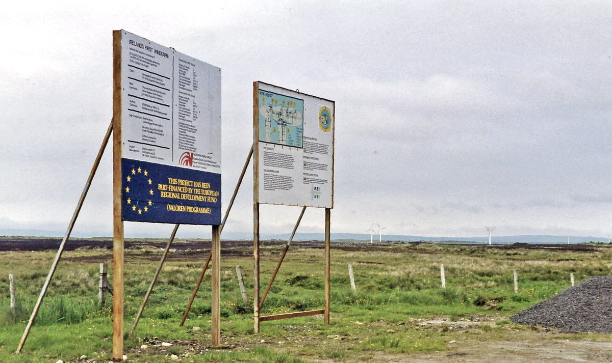
이탈리아 살레르노 대교구·지역공동체재단·협동조합연합, 연대형 재생에너지공동체 만들기로 5년 협약…에너지 빈곤 가정 지원
1차 변전소 3곳 권역부터 시작해 이익은 어려운 가정·보호시설에…성당 네트워크·사회적협동조합·시민 모으고 태양광 설치할 지붕·부지 조사, 칼리아리·팔레르모에 이은 공동체 에너지 사업 세 번째 단계
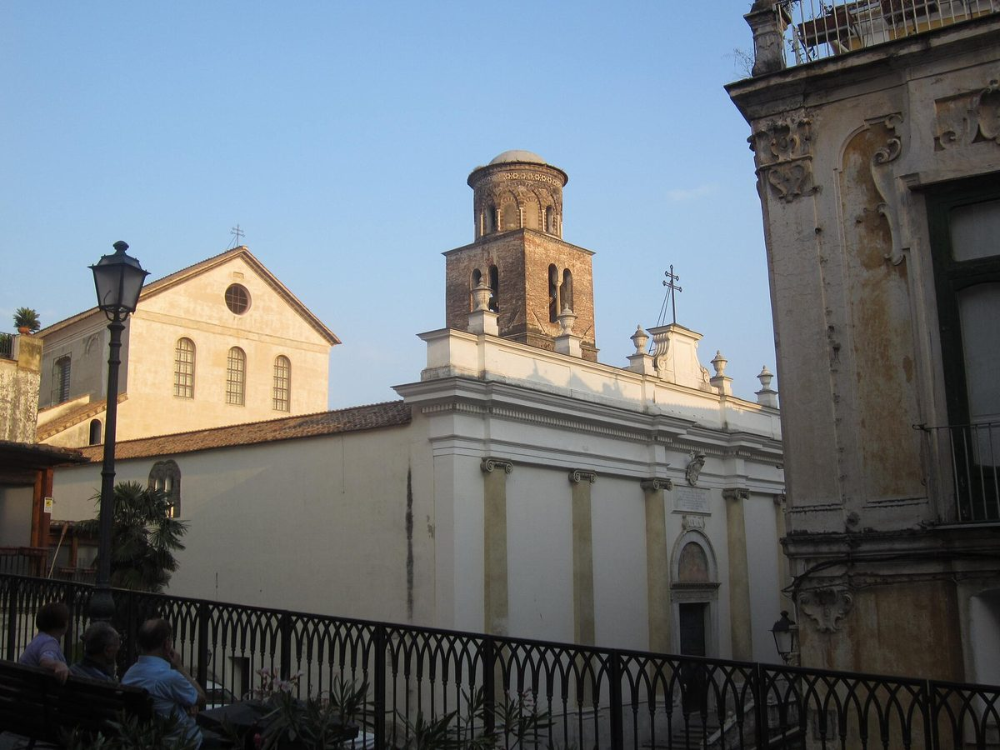
독일 바이에른 노이울름 군 시민 풍력단지 추진에 땅 주인들 투명성 요구…설명 없이 토지 사용 계약 서명부터 요청받아
바이센호른 시·로겐부르크 면, 풍력단지 개발에 주민 참여 추진…풍력 우선지역 안팎 땅 주인 2명, 서명하면 무슨 일이 생기는지 모른다며 계획 공개 요구
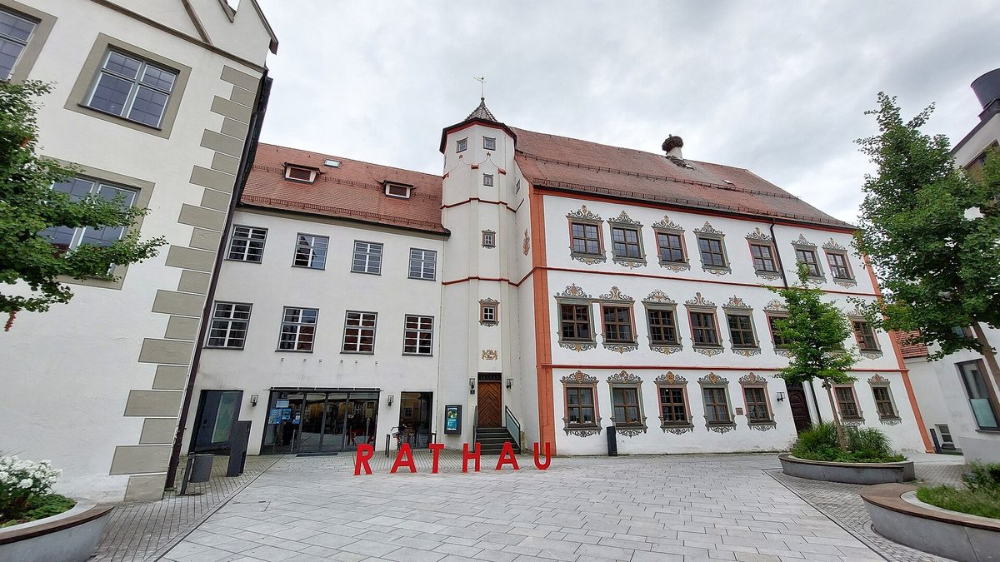
네덜란드 상계제도 사라지며 이웃과 지붕 태양광 전기 나누는 에너지 나눔 관심 커져…2027년 상반기 법 개정으로 공급사 제공 의무화 전망
15분 단위로 보낸 전기와 쓴 전기가 겹치는 양만 나눈 것으로 쳐…에너지업계 단체, 취지는 좋지만 행정이 매우 복잡하고 불균형 비용 늘 수 있다며 정적 나눔 제안
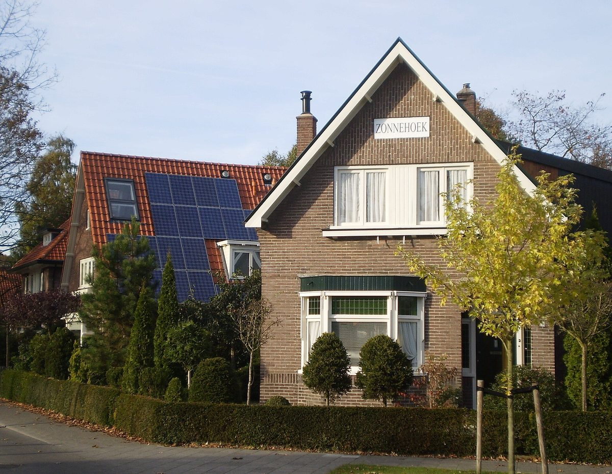
프랑스 레지냥코르비에르 고속도로 나들목 카풀 주차장 개장…도 공공 에너지조합, 80만 유로 태양광 그늘막 세워 공공건물에 전기 나눌 계획
A61 25번 나들목에 승용차 62면·전기차 충전 4면, 공사비 약 80만 유로…오드 도 에너지조합 Syaden, 지역 집단 자가소비로 지자체 연합 공공건물과 지역 주체에 공급 추진, 설치 시기·용량은 미정

이탈리아 라코니지, 문화재 규제 받는 시장 회랑 지붕에 30kW 태양광…시청 전기 40% 채우고 재생에너지공동체에 넣는다
쿠네오 저축은행 재단 공모로 3만6,000유로 지원받아 설치…시, 가입한 재생에너지공동체 솔라 밸리에 발전소를 편입해 나누는 전기와 지역 이익 늘릴 계획, 편입 시기는 미정
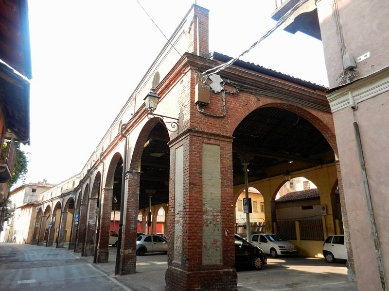
주민이 운영하는 풍차 7기의 독일 푹스탈, 11월 26일 마을 전력망 끊고 재생에너지만으로 버티는 정전 실험
연구사업 '푹스탈 로이히테트'…레더·아쉬 두 마을을 상위 전력망에서 떼어 내 풍력·태양광·배터리로 전기 공급 시험, 양로원·중학교만 발전기로 유지

이탈리아 산베네데토포, 버려진 공업용지 1ha에 1MW 태양광 준공…개인 54명·시청 48곳 든 재생에너지공동체에 전기
민간 소유 지상 발전소, 9월 말 계통 연결…공동체 발전원 4곳 중 하나, 소비자 회원 106곳 공동체는 전국 단위 솔라 밸리 가입하고 회원 늘려 비용 낮출 계획

나바라 바스크어 학교 파스 데 지간다, 교육기관 첫 에너지공동체로 등록…남는 전기 학부모·취약 가정과 나눈다
비야바의 이카스톨라, 제2회 나바라 기후주간에 학교 에너지 계획 발표…몇 달 안에 자가소비 설비 추가
미국 조지아 애선스 해비타트, 저렴주택 단지 모든 집에 지붕 태양광·배터리…주민들이 첫 집에 패널 함께 올려
11에이커 마이카스 크리크에 단독주택 42채·초소형 주택 11채·방 2개 주택 15채…첫 15채는 위탁가정 나온 청년 주거로, 애선스 가구 57%가 공공요금 부담 호소

폴란드 포트카르파치에 5개 지자체 에너지 클러스터, 주택·공공건물에 재생에너지 설비 약 1,600개 설치 추진…시공 입찰에 8건 응찰
롭치체 주도 롭치체-뎅비차 클러스터, 총사업비 5,946만 즐로티 중 4,795만 즐로티를 국가회복계획에서 지원…태양광·열펌프·에너지저장장치에 수소 설비까지

이탈리아 시칠리아 그람미켈레, 공공임대주택 168호에 1,700만 유로 에너지 개보수…태양광 달고 재생에너지공동체로 60여 가구 요금 할인
공공임대주택 기관 IACP 재원으로 잔드리토 지역 단열·창호·지붕 개선과 태양광·태양열 설치, 입주 가구 에너지 비용 최소 30% 절감 목표
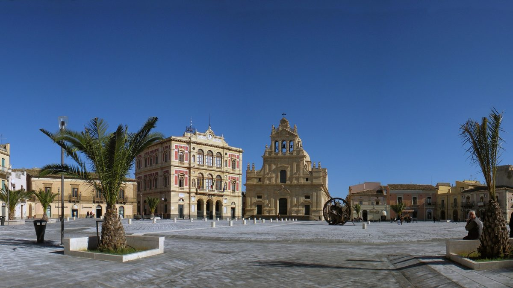
스페인 바야돌리드 야당 "시 지붕 에너지공동체, 3년 반째 체육관 4곳뿐"…동네별 지붕 입찰 요구
지붕을 협동조합·주민 단체에 내주고 시는 전력 약 10% 받으며 형편 어려운 가구 우선…VTLP 주장, 시 반론은 보도에 없어
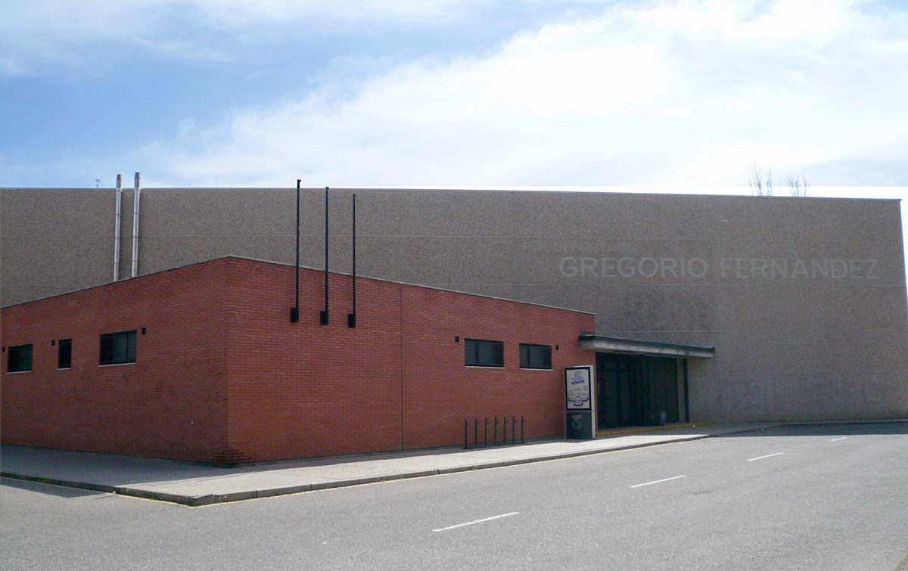
대만 화롄 펑린 1,000ha 태양광 단지 '지역 환원금' 명목 뇌물 혐의…태양광 기업 회장 등 7명 구속
검찰, 훙더에너지가 당시 진장에 3,000여만·전 농회 총간사에 1,000여만 대만달러 건넸다고 판단…피고들은 혐의 부인, 사업은 주민 반발로 이미 철회

영국 공영 GB에너지, 셰틀랜드 출력제한 풍력 전기를 섬 에너지빈곤 해소에 쓰는 방안 협의
9월 영국 출력제한 보상금 5억500만 파운드로 사상 최대…셰틀랜드 풍력 이용률 약 60%에도 에너지빈곤율은 영국 최고 수준

스코틀랜드 케이스네스에 180m 풍력 5기·배터리 25MW 에너지파크 신청…주민단체 반대 의견 모아
사업자 KRE UK, 40년간 600만 파운드 넘는 공동체 기금 약속…Save Caithness는 터빈 1,500m 안 주택 약 40채·이탄 6만8,862㎥ 훼손 주장, 11월 9일까지 반대 의견 제출 촉구
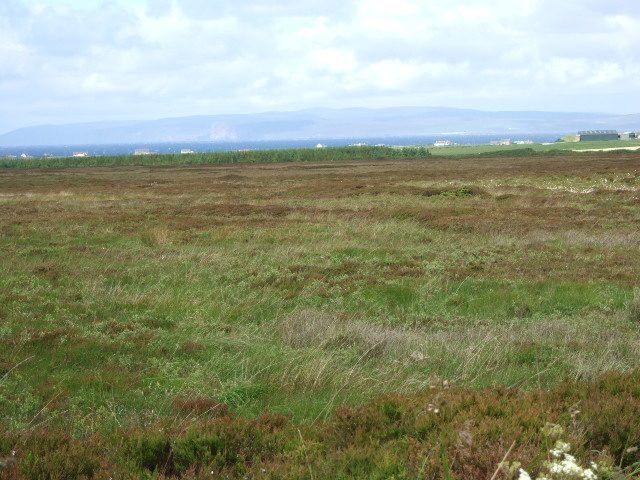
일본 후쿠시마 니혼마쓰 영농형 태양광 농장, 패널 아래서 샤인머스캣 재배…약 600세대분 전기 생산
니혼마쓰영농솔라, 원전사고 계기로 5년 전 경작포기지에서 시작…패널 그늘이 고온장해·서리 피해 줄이고 기둥은 포도 덕으로, 들깨·밀 재배에 소 방목까지
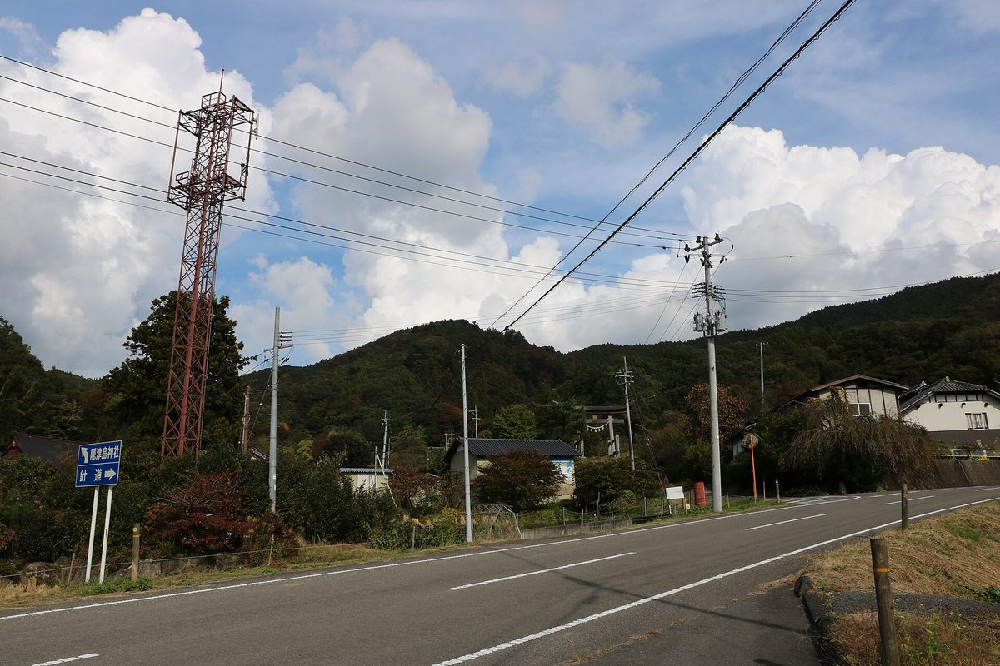
미국 미니애폴리스, 시 소유 정비시설 지붕에 704kW 공동체 태양광…저·중소득 가입자 100명
가입자 1명당 전기요금 월 약 25달러 절감 예상…시 녹색비용분담 보조금 15만 달러 들어가고 25자리 아직 남아
독일 니스테탈 시민에너지협동조합 DEiN, 조합원 303명에 5% 배당…풍력단지 증설에 42만 유로 출자
2025년 순이익 9만9,207유로·대차대조표 268만 유로로 최고…태양광 10기 운영하며 풍력단지 3곳 지분 보유, 출자는 1인당 연 20좌로 제한

독일 코르셴브로이히 풍력단지 시민참여 모집, 연말까지 연장…모인 돈 아직 모자라
500~2만5,000유로 참여에 5년 연 4.5%·8년 연 5% 이자…발전기 3기로 1만2,000가구 가까이 쓸 전기 공급 계획
미국 뉴욕주 허드슨밸리 단체장들, 세입자도 쓰는 플러그인 태양광 법안 서명 촉구
SUNNY Act, 1,200W 이하 설비는 사전 계통연계 승인 없이 설치 뒤 신고만…올봄 주의회 양원 통과, 주지사실은 서명 여부 안 밝혀, 안전 우려도

후쿠시마로 돌아와 영농형 태양광 운영하는 농부들 다룬 다큐멘터리 〈햇볕의 농부들〉…오바라 히로야스 감독, 발전 수익이 농업 실험 떠받쳐
니혼마쓰 곤도 케이 씨 약 6ha 농지에 4MW 설비, 고향 떠났던 농부 2명 합류…방사성 물질 검사 수치 공개하고 출하, 감독은 원전 사고에서 태어난 청춘영화라는 관객 평 소개

미국 매사추세츠주 하버드읍, 공공 태양광 1.4MW 후보지 15곳에서 2곳으로 압축
읍 소유 옛 자갈 채취장과 비공개 사유 농지…연 약 42만 달러인 읍 전기요금을 에너지 크레딧으로 줄이려는 사업, 최종 부지 추천은 내년 1월 말로 미뤄
미국 워싱턴주 섬 전력협동조합 OPALCO, 디케이터섬 태양광 확장에 조합원 주민들 중단 요구
산불 위험·추가 비용·보호 녹지 변경 논란 제기…주 보조금은 부지 이전 뒤 100만 달러에서 43만 달러로 줄어, 조합 측은 질의에 상세히 답하고 소방 계획도 공개하겠다고 밝혀

호주 빅토리아주, 매리스빌 주민센터에 '동네 배터리' 개통…60개 지자체에 139기 보급 중
주 정부 4,200만 호주달러 '100 동네 배터리' 사업, 지붕 태양광과 묶은 59kW·224kWh…정전 때 주민 쉼터, 필립섬은 배터리 운영수익 일부를 지역사업에
아일랜드, 가정용 콘센트에 꽂는 '플러그인 태양광' 도입 길 열려…ESB 네트웍스 보고서 "안전한 경로 있다"
정부 요청으로 꾸린 작업반 보고서 10월 1일 기후·에너지·환경부에 제출…독립 안전성 평가·법령 검토 거쳐 내각 상정, 800W 이하 시스템 검토

영국 웨일스 케어필리 '광부센터', 지역에너지 기금 Ynni Cymru에서 31만2,000파운드 받아 태양광·전기차 충전기 단다
겨울 난방비 세 배·폭염 땐 방 20개 중 2개만 쉼터로…웨일스 정부 이번 차수 24개 사업에 827만 파운드, 2023년 이후 누적 3,100만 파운드

미국 파인리지 원주민보호구역 '레드클라우드 재생에너지센터', 태양광 기술자 약 1,100명 길러 80%가 업계 취업
원주민 소유 태양광 기업에서 시작한 비영리 교육센터…온라인 60시간·현장 실습 2주로 업계 자격증, 9월 전국 혁신상 받고 오리건 부족과 프로그램 복제 추진
미국 뉴욕 사우스브롱크스 주민들, 옛 뉴욕포스트 인쇄공장 터에 물류창고 대신 태양광 갖춘 청정에너지 거점 요구
주민단체·공동체 토지 관리단체가 10년 다듬은 구상…주지사·주 교통부에 물류개발사와 거래 거부·타당성 조사 지원 요청, 프롤로지스는 매입 계약 상태 아니라고 밝혀
미국 메인주 파밍턴 읍, 커뮤니티 솔라 업체 제안 결정 보류…읍이 민간 업체 홍보 맡는 데 우려
시카고 업체 솔라 심플리파이드, 전력 고객에 태양광 크레딧 15% 할인·가입 1곳당 읍에 100달러 제안…위원들은 경쟁 업체 설명도 들어 보는 방안 검토

이탈리아 수사 계곡 사회적협동조합·초등학교의 재생에너지공동체 USE Nord, 새 참여자 모집…태양광 3곳 수익을 취약계층 일자리·학교 사업에
알메세 사회적협동조합 AMICO·키우사 산 미켈레 초등학교 중심, 연 24만5,000kWh 생산…가입비·공급사 변경·탈퇴 위약금 없이 같은 1차 변전소 권역의 기업·가정 누구나 참여
일본 원폭의 그림 마루키미술관 지붕의 반원전 태양광 13.95kW, 개수 공사 뒤 다시 달기 위한 인터넷 모금 시작
후쿠시마 원전사고 이듬해인 2012년 시민 기부로 패널 93장 설치…물가 상승으로 개수 공사비 모자라 재설치 미루고 올해 2월 떼어 내, 미술관은 내년 5월 재개관 목표
덴마크 장관, 오르후스시가 이웃 쉬드유르스시 경계에 세우려는 150m 풍력발전기 3기에 대한 이의 받아들이지 않아
반경 900m 안에 주민 51명…쉬드유르스 시장은 집값 하락·이웃 주민 의견 미청취·칼뢰 성터 경관 들어 반발, 오르후스는 지구계획 처리 방침
이탈리아 발펠리체 재생에너지공동체, 회원 6명에서 154명으로…레가암비엔테 전국 생태 전환 현장에 CER로는 처음 올라
옛 공장 부지에 309.6kWp 태양광·240kWh 배터리 갖춘 체육시설…지역 에너지 기업·발도파 디아코니아·가톨릭 교구가 함께 만들고 지자체 11곳 참여, 공유 수익은 복지 사업에

바르셀로나, 10개 구 공공건물 지붕 10곳 공동체 태양광에 내주는 공모…주민 에너지공동체들은 시범사업 넘어선 상설 정책 요구
에너지공동체 네트워크, 시의회에 종합계획·전용 기금·재산세 감면 개정 등 5대 약속 제안…지붕 공모는 11월 4일까지

테네리페 엘로사리오 지역 에너지공동체 회원 200명…공업단지 지붕 2MW 등 태양광 5MW 추진
시가 만든 엘로사리오 솔라, 카나리아 지자체연합 상 받고 브뤼셀 유럽 지역·도시 주간서 에너지 빈곤 대응 사례로 발표…EU 회복기금 600만 유로 넘게 지원

사르데냐 템피오파우사니아, 재생에너지공동체 만들려 시민·기업 참여 의향 조사 시작
소비자·생산소비자·생산자 세 갈래로 신청 받아 공동체 구성 가늠하는 첫 단계…발전 용량·예산은 공고에 없어

웨일스 앵글시 사회적기업의 조력발전 모를레, 2027년 첫 터빈 앞두고 정부 지원 지속 요청…최대 240MW 단계 개발
웨일스 에너지 장관 첫 현장 방문…사업자는 지역 업체·도제에게 이미 일감 생겼다며 꾸준한 지원 필요하다고 강조, 장관은 만든 가치를 지역사회에 더 많이 남길 수 있다고 평가

스코틀랜드 외부헤브리디스 의회, 공동체 소유 에너지 국가 시범지역 지정 요구
GB에너지 의장·에너지안보넷제로부에 서한…섬 방문과 공동체 주도·공유지분 사업 위한 금융·기술 지원 요청

미국 피크스킬 시민단체 공동소유 저수지 수상태양광 1.68MW 철회…비용 늘어 연방 세액공제 시한 못 맞춰
비영리 단체가 절반을 갖고 수익은 모두 시로 가는 구조로 25년 280만 달러 편익 내걸어…식수원 우려 속 계획위원회 조건 붙으며 사업비·공기 불어나

캐나다 토론토 동물원 옆 바이오가스 협동조합, 시민 채권으로 400만 달러 넘게 모아 발전소 운영
조쉐어 협동조합 첫 모집 220만 캐나다달러에 약 300명 참여…조합원 약 800명·1인 1표, 연 약 1만5,000t 음식물·분뇨로 약 250가구분 전력

미국 벨빌시, 버려진 묘지 땅 공동체 태양광 임대계약 해지 나서…투자자 빠져 사업 무산
1달러에 사들인 마운트호프 묘지 옆 숲 약 20에이커 베어 태양광 지으려다 주민 소송…계통 보강 대금 160만 달러 납부 이틀 전 주 투자자 이탈
일본 후쿠시마현 지사 선거 앞두고 재생에너지 100% 목표 시험대…니혼마쓰 하리미치 메가솔라는 토사 유출로 공사 중단
현 재생에너지 비율 2025년도 64.3%로 4포인트 넘게 올랐지만, 2023년 5월 착공한 산골 메가솔라는 비탈 곳곳 무너져…인근 구치부토야마 풍력 구상도 일정 미정
스코틀랜드 서부제도 의회, 아우터헤브리디스를 공동체 소유 에너지 국가 시범지역으로 지정해 달라고 영국 정부·GB에너지에 요청
폴 스틸 의회 대표, 위르겐 마이어 GB에너지 이사장과 미아타 판불레 에너지안보·넷제로 장관에 서한…섬 방문과 공동체 주도·지분 공유 사업을 받칠 금융·기술 지원 요청
미국 뉴햄프셔 런던데리, 주민 공동구매 전력(CCA) 1년 연장…kWh당 13.523센트 고정
배전사 기본요금 14.009센트보다 낮아 월 600kWh 가구 약 2.92달러 절감…새 주민은 자동 가입, 위약금 없이 언제든 탈퇴
캐나다 토론토 바이오가스 협동조합 ZooShare, 시민 공동체 채권으로 400만 달러 넘게 모아
동물원 분뇨와 안 팔린 식료품으로 전기 생산…첫 모집 220만 달러에 약 300명 참여, 조합원 약 800명이 1인 1표로 운영
미국 코네티컷, 1,200W 미만 플러그인 태양광 신고 없이 설치 허용했지만…건축·소방 규정 없어 합법 여부 혼란
10월 1일 새 법 시행, 주 건축·소방 규정 개정안은 4월 별개 쟁점으로 부결돼 일정 없어…시스템 전체 인증 받은 미국 시장 제품도 아직 없어
영국 워킹 시의회, 직접 소유한 에너지회사 ThamesWey 요금 인상에 청사 에너지비 32만6,000파운드 늘어
오랫동안 묶였던 상업용 요금을 시장 기준에 맞춰 재조정…일반 전력망 연결 비용이 커 공급사 못 바꿔, 시는 소유주라도 특혜 없어야 한다는 입장
덴마크 European Energy, 호주 퀸즐랜드 태양광 3곳에 원주민 전통 소유자와 30년 공동 번영 협약
1.1GW 어퍼캘리오프 등 태양광·저장 사업에 문화유산 관리·장기 지역 기금 두 협약…기금 규모는 비공개, 연방 입찰은 원주민 지분·수익 공유 5% 이상 사업에 500MW 따로 배정

캐나다 원주민 경제개발법인 합작사 Aurora Renewables, 올해의 원주민 청정전력 회사 선정…사스캐처원 첫 태양광 통합 마이크로그리드
캐나다재생에너지협회 2026 시상…원주민 인력만으로 지은 디샴호 마이크로그리드는 하루 전력 약 80%를 태양광으로, 노바스코샤 148.5MW 풍력은 혁신 사업상
미국 미네소타 태양광 학교 연말 400곳 넘는다…학교 태양광 보조금 시작한 2022년 약 190곳의 두 배 이상
주 보조금 5년 동안 3,200만 달러 넘게 지원…행사 연 메이플우드 초등학교는 전기료 해마다 2만2,000달러 줄여, 주 전체 학교 20년간 4,600만 달러 절감 추산

영국 웨일스 덴비셔 의회, 릴 청사 주차장에 태양광 카포트 허가…생산 전기는 청사·의회 시설이 직접 쓴다
주차면 85면 가운데 18면 위에 패널 지붕…계통 전기 구입 줄이고 운영비 절감, 허가 조건 4개 중 하나는 3개월 안 생물다양성 조경 계획 제출

프랑스 앙제 근교 롱그네앙주, 공공시설·불 경기장에 태양광 그늘막 2곳 준공…연 686MWh로 약 300가구분 전기
지방정부 출자 혼합경제회사(SEM) 알테르 에네르지가 앙주 태양광 지역 프로그램으로 개발·투자·시공…시장, 이미 쓰는 땅에 세워 농지 지키고 화석연료 의존 줄인다

미국 에너지부, 원주민 부족 61곳의 에너지 사업 63건 1억2,500만 달러 이상 지원 협상 대상 선정…전기 없던 150가구에 전기 공급 계획
16개 주에서 공동체 에너지 13건·초기 개발 27건·대형 계획 23건…원주민에너지실, 개발 단계와 상관없이 지원 문 넓혀, 사업마다 협상 거쳐야 지원 확정


미국 오하이오 도시들, 매립지·저수지·교회 지붕 태양광으로 전기요금 오름세에 대응
1년 새 주택용 요금 12% 상승…신시내티 매립지 10MW 착공, 라이마 저수지 수상태양광 2MW 가동

미국 포틀랜드, 옛 매립지에 저소득 140가구 위한 공동체 태양광…시 청정에너지기금으로 추진
82번가 부지에 태양광 어레이 7개, 가구당 연 약 300달러 절감 추산…내년 2월 완공 예정, 가입 자리 130곳 모집

PG&E, 샌프란시스코 전력망 인수 비용 225억 달러 제시…시 평가액 34억 달러의 6배 넘어
캘리포니아 공공요금위원회에 자산 139억·영업 분리 손해 76억·물리적 분리 10억 달러 제출…시는 부풀린 숫자라고 반발, 가치 결정은 2027년보다 늦어질 듯

미국 하원에 첫 연방 플러그인 태양광 법안…저·중소득 가구에 최대 1,000달러 보조
롭 메넨데스 의원 발의, 콘센트에 꽂는 1,200W 이하 기기 규칙 검토를 주 규제기관에 요구…2027~2032 회계연도 6억 달러, 세입자 사용을 막지 못하는 주에만 지원
셰틀랜드 바이킹 풍력 공동체기금, 지난 회계연도 76개 사업에 214만 파운드 지원
80만 파운드 이상은 주택 에너지효율 개선 등 생활비 경감에…2024년 9월 출범 뒤 누적 380만 파운드 넘어

독일 바이에른 시민에너지협동조합 bemo, 조합원 400명에 3% 배당
군과 관내 기초지자체 3분의 1도 조합원…1MWp 태양광 착공·풍력 1기 투자 계획으로 신규 가입 다시 열어

영국 셰필드시, 지역에너지계획 공개…공공건물 지붕 태양광·공동체 에너지 담아
시내 약 9,000가구 이미 지붕 태양광, 가구 약 14.3% 에너지빈곤 추정…2040년까지 3단계 추진

일본, 영농형 태양광 성령·고시 개정 공포…2027년 4월부터 시정촌 기본계획·인정제로 전환
지역 공생 등 3대 기본이념 명시, 단수 20% 이상 감소 우려 없을 것·차광률 30% 미만 등 기준…주민 대표 참여 협의회서 합의
독일, 극우 AfD 지지 높은 지역일수록 지붕 태양광·전기차 보급 느려
프라이부르크대 연구진, 지자체 1만700여 곳 분석…AfD 성향 지역 지붕 태양광 보급률 녹색당 성향보다 31% 낮아

독일 시민에너지연합, EEG·전력망 패키지 분리 처리 요구…연말 EEG 만료 앞두고 입법 지연
EU 승인에 필요한 부분부터 먼저 통과시키자는 제안, 연방하원 표결 연기로 신규 풍력·태양광 지원 공백 우려…소형 지붕 태양광 지원 종료·출력제한 보상 축소도 쟁점
네덜란드 노르트브라반트주, 대형 태양광·풍력 개발사에 '지역 소유 50%' 노력 입증 의무화
태양광 50MW·풍력 15MW 이상 대상…못 미치면 이유 설명해야, 벌금은 없지만 주가 시정 요구 가능

미국 밀워키 주민단체 월넛웨이, 110만 달러 확보해 1MW 주민 소유 태양광 추진
맥나이트재단 회수형 보조금 100만 달러 등…2027년 12월 가동 목표, 8년간 주민 소유 태양광 50MW 장기 구상
호주 골번 주민 288명의 협동조합 태양광, 아틀라시안과 10년 전력구매계약
1.4MW 태양광·4MWh 배터리 생산량의 약 70%를 시드니 39층 신사옥 전력으로…연간 이익 일부는 지역 에너지 빈곤 기금에 적립


海外
豪ウーロンゴン市議会、「エネルギー公平フレームワーク」を全会一致で採択…住宅太陽光は市平均35%、最も低い地区は17.9%
賃借人・低所得層・集合住宅の住民も安いクリーン電力を享受できるよう4原則を定める…市の調査「世帯のほぼ5分の1がエネルギー困窮に陥るおそれ」、新たな予算・事業は未定
豪ビクトリア州、「集合住宅向け太陽光」の支援対象を150戸の建物まで拡大…1戸あたり最大2,800豪ドルを還付
連邦・州政府の資金で設置費の平均76%を支援、中央値の不動産価格上限を撤廃…管理組合は発電量の最大20%を廊下・駐車場など共用部に、申請は2027年6月まで
ポーランド、都市住民もエネルギー協同組合を作れるよう法改正…EUの国家補助審査で施行止まる
2025年10月の改正法に都市条項を盛り込むも、欧州委員会の肯定的決定まで適用停止…気候省は年内の結論に期待、市民団体は電力を売れない協同組合は競争を損なわないと主張
英ウェールズ・スランイドロースの住民エネルギークラブ、政府基金94万1,280ポンドで社会的仮想発電所を拡大…さらに10世帯に太陽光・蓄電池を無償設置
高校・コミュニティーセンター・ユースクラブに再エネ設備…ウェールズ政府は参加世帯の電気代を年平均368ポンド節約と試算、地域基金として毎年約1万4,000ポンドを見込む
英レイクディストリクト国立公園庁、ケンダル本部駐車場に太陽光キャノピー…発電量3倍、年8万7,000kWh
駐車区画と事務棟の屋根にパネル、発電量の約66%を自家消費し余剰は送電網へ…草地ではなく既開発地を使い2030年ネットゼロ目標に近づく
豪ブルーマウンテンズ市、庁舎・文化センター・保育所など市有施設9カ所に太陽光・蓄電池…停電時も必須サービスを維持
太陽光新設3カ所・太陽光と蓄電池の同時導入3カ所・既存太陽光への蓄電池追加3カ所、ニューサウスウェールズ州の西シドニー・インフラ補助金と市の財源で完了
仏トレマンティーヌ村、保育施設屋根の36kWc太陽光の余剰電力を半径2km内の公共施設15カ所で分け合う…村議会が全会一致
「集団自家消費」への参加を議決、メーヌ＝エ＝ロワール県の市町村連合エネルギー組合Siémlを運営法人に指定…運営費は年858ユーロ、契約20年
伊ローディの「連帯型再生可能エネルギー共同体」財団が初の総会…市民・自治体・企業の会員30人余りが出席、エネルギー共有の構成4カ所のうち2カ所が稼働
2025年1月に非営利財団として発足したCersソラーレ・ローディジャーナ、社会分野の活動家2人を新理事に選任…残る2カ所は国のエネルギーサービス公社が審査中
スペイン・バレンシア、市営墓地2カ所の屋根に太陽光2,495.96kWpの工事完了…電力の4分の1は脆弱世帯800戸に分配する計画
市営墓地5カ所の屋根を使う「レクイエム・イン・パワー」事業、5カ所全体で投資320万ユーロ・年約3,388MWhを見込む…75%は市の建物が使い、対象家庭は市の社会福祉部門が選ぶ
米ミシガン州の「コミュニティ・ソーラー」法案、2021年以降6本出るもすべて停滞…下院・上院の4本が委員会で止まり公聴会の予定もなし
低所得世帯枠40％・料金の最低10〜20％削減を盛り込んだ下院案まで出たが、DTE・Consumers Energyは「非加入者へのコスト転嫁」と反対…アナーバーは市のエネルギー公社で家庭に太陽光・蓄電池
ベルギーの自然保護団体ナトゥールプント、エコパワーのメヘレン北部風車に「5つの条件」で異議…「条件なしなら許可するな」
秋の渡りの時期のコウモリ保護のための夜間自動停止、稼働後最低2年の独立調査などを要求…自然面のみ「条件付き賛成」、騒音・景観は判断せず
イタリア・マルケ州ヴェナロッタの自治体再生可能エネルギー共同体、組合員総会を開き運営開始…市は加入者数でマルケ州1位・イタリア2位と説明
加入者数・設備容量・インセンティブ額は非公表…発電設備は地元企業SDF Green Energyの所有、国のインセンティブは同じ一次変電所の下の住民・事業者に均等に配分
スペイン・エイバルのエネルギー共同体、市有施設の屋根3か所の太陽光で組合員90人を追加募集
市が学校・文化会館の屋根1,093㎡を提供しパネル364枚を設置…家庭・商店・中小企業200件が参加、紹介加入なら双方の会費3か月無料
豪キンバリーの遠隔地6集落、屋根上太陽光183戸が495世帯の電気料金を軽減…3年間のクレジット約27万5,000ドル
西オーストラリア州営電力会社ホライズン・パワーの「キンバリー集落ソーラー・セーバー」が今月完了、約1.5MW・平均8.2kW…パネルのない隣家にも料金クレジット、軽油約12万2,000リットルを代替
スイス・エネトビュルゲン、民間太陽光3か所と公共1か所を束ねた地域電力共同体…11月から公共施設12か所に地元の太陽の電気
ニトヴァルデン電力公社と組む州内初の事例、年間約9万kWhを供給…共同体が自ら価格を決め、生産者にkWhあたり8ラッペン、購入価格19.67ラッペン
太陽光1位のカリフォルニアにコミュニティソーラーがない…2022年に法律を作っても膠着、ニューサム知事がAB 1813に拒否権
規制当局CPUCは2024年に決定権を電力会社側に、回避費用で価値を算定し蓄電池を併設する新法案は9月に拒否…市民・労働・環境団体の連合は2027年に再挑戦、開発会社は制度のある22州へ投資を移す
ルーマニア・シビウ市、4.8312MWの市有太陽光発電所を契約…街灯など公共施設の電気料金を相殺
デアルル・ダイイの用地にEU近代化基金2,805万レイ、年間最低6,468.574MWh…2027年初めに着工し5カ月以内に稼働、余剰電力をためる蓄電池2,547万レイは別途申請
ドイツ・ダッハウ郡のフィアキルヒェン風力発電所、許可と住民の支持を得ても連邦入札の壁で着工のめど立たず
基礎自治体2つと協同組合が参加する風車4基の計画…風の弱い南部へのボーナスでは北部に太刀打ちできず、地元の連邦議会議員が南部専用入札を求める公開書簡
ドイツ・バイエルン州ペッキングの住民主導の熱導管網、エネルギー協同組合と組み連邦モデル事業10万ユーロ…210世帯中88世帯が接続希望
住民グループが現場の広報・相談、協同組合が資本・技術を担う「地域グループ」モデルを試行…連邦補助金の決定が遅れ稼働は2028年末にずれ込み、自治体は計画のみで運営には乗り出さず
フランス・トゥーロンの行政庁舎屋根372㎡の太陽光、余剰電力を近隣の国の機関と「集団自家消費」で分け合う
発電能力が庁舎の使用量を約5割上回り直径2km圏内の公共建物に配分…県知事「電気料金を10%下げられる」、ヴァール県では自治体17カ所がすでに稼働・30件を推進
西オーストラリア州、豪州の州で初めてプラグイン「ベランダ太陽光」の合法化へ…安全基準の意見募集を開始
エネルギー相、1世帯あたり電気代を年240豪ドル、蓄電池と併用で500豪ドル節約と試算…現在は販売はできてもコンセントにつなぐのは違法、法改正の時期は未定
オーストリア・レオーベンの市民発電所エネルギー共同体が1年、太陽光の電気約9万3,000kWhを近所で分け合う
2025年3月に発足し会員は80人超…既存の電力契約はそのままに上乗せで加入、生産が需要を上回り新会員を募集
ニューヨーク州議会に民間電力会社の公的買収法案…ロチェスターの公営電力運動、地元電力会社の公営化への道に
セントラル・ハドソンを債券で買い取り料金で返済する方式…運動団体は公営電力の料金が13～63%安いと主張、郡議会は2024年に事業化調査予算を16対13で否決
仏オード県「開発業者より先に地域が」…県エネルギー組合と農業会議所が協定、自治体・農家共同の再エネ事業1～3カ所を公募
シアデン（Syaden）とオード県農業会議所、10月23日にナルボンヌで協定…公共建物の屋根から段階的に地上へ、構想づくりの後に自治体が企業の応募を受ける順序に転換、公募締め切りは2027年1月18日
スペイン、学校の屋根の太陽光を近隣と分け合う…イビサの小学校は40kWのうち27kWを住民に、サンタ・ポーラは学校・体育館の200kWでエネルギー共同体
バレアレス自治州政府、サン・ジョルディ小学校の屋根の電気を半径5kmの家庭・小規模事業者に1kW当たり年100ユーロで分配し約300ユーロの節約と試算・エネルギー弱者世帯を優先、11月9日まで受付…アリカンテ県サンタ・ポーラは100kW2カ所で世帯・商店計200件の需要の最大50%を賄う
英住宅協会ピーボディ、公営賃貸マンション1棟で屋根の太陽光1基を共有する「FlatSave」に参加…スティーブニッジに初設備
E.ON NextとAllume Energyの商品、共用蓄電池で電力網を支えると住民に年間支払い…会社側は「料金最大60%削減・支払い年最大160ポンド」と主張、先行設置したウェールズのトリヴァリスは「多くの場合最大50%削減」
スペイン・アロウサ島の住民団体、町の公設市場の屋根に50kW太陽光と28kWh蓄電池…20世帯・ムール貝養殖業者の団体・町役場が電気を分け合う
市民団体アロウサ・エン・トランシシオンの2つ目のエネルギー共同体Mar & Luz 2、年75MWhと試算…あらかじめ決めた比率で配分し余剰は蓄電池を経て配電網へ、建築許可の申請と配電線の協議が残る
カナダ最古の映画館パトリシア劇場の屋根に24kWの市民所有太陽光…住民が最低500ドルの出資で共同所有者に
BC州カセット地域の劇場は屋根を貸して電気を買う…ソルシェアが事業を担い労働者協同組合VREC Solarが施工、まず地元住民から募りBC州住民に広げて11月4日締め切り
米ニュージャージー州ウッドバイン、覆土されないまま残っていた旧埋め立て地に10MW太陽光…6,000万ドル超の事業が着工間近
開発会社CEP Renewablesが設備を所有し町は土地を賃貸…町長は稼働前に加入した住民・事業所が所得制限なく電気料金20〜30%の割引を受け、町は30年間毎年約15万ドルの賃貸収入を得ると見込む
アイルランド農村相、再生可能エネルギーの地域利益基金を大きくすべきと発言…現在は発電量1MWhあたり2ユーロを15年間義務拠出
政府の新たな農村振興戦略の発表の場でキャラリー大臣が事業者の拠出金引き上げを望むと表明、引き上げ幅や時期は示さず…マーティン首相は5年間で送電網に180億ユーロを投じ農村に難しい決断が迫られると発言
スペインの市民団体、太陽と風の電力収益で年金・公営住宅を支える世代エネルギー基金を提案…11月29日総選挙を前に政党へ送付
HOPEなどのインプルソ・レヘネラティボ、ノルウェーの石油年金基金にならいつつ国内に実物資産を持つ恒久基金に…再エネ事業の税の一部を自治体に残し、発電所ごとに自治体単位のエネルギー共同体、2040年のエネルギー主権が目標
米アナーバー、市営電力の住民投票を前に資金格差…住民団体の累計現金は約6万ドル、DTEが支える反対団体は累計支出170万ドル超
7月21日～10月18日の報告期間に賛成団体は住民の少額寄付で2万7,000ドル超を集める…反対団体は同期間に現金4万ドルとDTEの現物7万9,000ドル超を受け、投資家所有電力会社の団体も参加、投票は11月3日
米ブルックリンの24戸の住宅協同組合、追加負担金なしで屋根に太陽光…建物一括計量の差益で23万2,000ドルの融資を返済
サンセットパークのパークヒル、戸別の電力契約をなくし組合が電気を一括購入して組合員に小売料金で請求…再計量収入年7,000ドル・太陽光クレジット年7,000ドルと政府支援で返済、返済後の使い道は理事会が決定
イタリア・カレンツァーノ、5人が死亡したEniの旧燃料貯蔵所18万㎡を太陽光拠点に…町に「発電価値の5%」と1MW設備の無償譲渡で協定
トスカーナ州・カレンツァーノ町・Eniが協定に署名、浄化と許認可を終えた後に最大20MWの太陽光を計画…蓄電池付き1MW設備は町に譲り地域エネルギー共同体向けに、大型設備の電力価値の5%は最長30年間町の取り分
米オレゴン州ユージーン、大企業負担の「クリーンエネルギー基金」住民投票を前に賛成派72万7,000ドル・反対派13万ドルを集める
住民の署名で投票にかけられた「メジャー20-388」、大企業に2%の負担金を課して気候事業基金を創設…反対派の資金は今月初めの5倍に増えたが差は依然大きく、「説明責任のない白紙小切手」論争に選挙資金の申し立てまで
ニュージーランド・カンタベリー広域議会、洪水防御用地2,700haの太陽光向け賃貸めぐり住民の意見募る
エンバイロメント・カンタベリー、ウェストメルトン～ヤルドハースト間の土地を開発事業者に貸す案を検討…初期評価では300haで約150MWp・約4万世帯分、議長「何も決まっていない」
シンガポール、政府機関の太陽光需要をまとめて一括入札…駐車場の屋根・建物の壁面まで広げ2035年4GWpめざす
エネルギー市場庁、施工業者パネルを指定し機関ごとの建物ポテンシャルを評価・個別提案…JTCは外壁・コンテナ型太陽光の技術公募、戸建て住宅には共同購入までつなぐデジタルポータル
米カリフォルニア州ビュート郡、1,700エーカー太陽光の開発会社が示した地域利益協定案の判断を先送り…住民は環境評価を先にと要求
州の許可手続き（AB 205）で郡に許可権はなく、開発会社は地元機関・非営利団体と結んだ協定案の提出が必要…年30万ドル・消防署用地・消防50万ドル・保安官25万ドルを提案、郡が拒めば別の非営利団体と結ぶ可能性も
米ミシガン州、11月3日に電力会社の政治献金を禁じる住民投票…市民56万人の署名で実現した提案2
電力・ガス会社のPACによる候補者への直接献金、役員・取締役・家族の献金まで禁止する案…賛成側は高い料金と頻繁な停電は電力会社の影響力のせい、反対側は表現の自由の侵害、影響力が全国の大口献金者に移るだけと主張
米カンザス州フォートスコット、市の浄水場に225kWの太陽光と蓄電池を設置へ…下水基金から1%の利息で借りて建設
市委員会が3対1で可決、事業費約55万ドルの半分ほどを連邦の直接支払いで賄い市の実質負担は約27万ドル…施工会社の試算で年3万ドルの節約・回収約8年、2027年末までの稼働が条件
スリランカ・マンナールの国営風力発電所6年、漁民・住民が「漁獲減と浸水」と反発…政府はマンナールの新規事業を凍結
第1期30基・104MWが2020年に稼働、14基を追加建設中…住民はタービンのせいとみるが原因は未確認、市民委員会の主導で訴訟2件
南アフリカ・エクルフレニ市、青果市場の屋根と遊休地に25.6MWの太陽光発電所を着工…民間が建設し市が20年間電力を購入
事業費3億6,000万ランド、年間約40GWhを発電予定…市は初期資本を負担せず電力購入契約、独立系発電事業者から最大2,400MWを調達する市の制度の一環
イタリア・クレモナ教区、再生可能エネルギー共同体の財団7つでネットワーク…自治体・小教区など約90団体が参加、稼働設備は約6,000kW
2年足らずで組合員316人、うち85は中小企業…25MWが稼働待ち、太陽光企業と産業協定を結び蓄電池・電力網の柔軟性サービスへ広げる計画
ギリシャ西マケドニア、エネルギー共同体の太陽光800件のうち系統編入は268件…稼働は186件、453件は取り消し
配電網運営会社が議会に提出した資料、477件は系統の空き容量不足で接続できず…変電所の変圧器増設で71件53.2MWに確定接続提案、2029年にプトレマイダ新変電所
英国最大の地域共同所有太陽光「デリルウォーター」、配電会社が4か月発電を止め財政危機…組合員9,500人の協同組合
北デボンの40MW発電所、変電所の変圧器停止のあおりで5月から夏の間停止…配電網につながる小規模発電所は出力抑制の補償も受けられず
スペイン・ムルシア州のエネルギー共同体、19団体設立も発電中は4団体…自治体が公共施設の屋根を貸し、弱い立場の世帯に電気を分ける
ロス・アルカサレス、公共施設の屋根4か所を貸す代わりに発電量の10%をエネルギー貧困世帯へ…先駆的な共同体は政府補助金12万4,000ユーロの精算が終わらず融資で工事
スコットランドのニアト・ナ・ガイヒ洋上風力コミュニティー基金、イースト・ラマミュアの住民団体3つに11万ポンド超…住宅断熱に4万5,000ポンド
住民がつくった「地域プレイス計画」の目標に沿って住民審査団が配分…今回は家庭のエネルギー効率と生物多様性に重点
米ワシントン州キトサップ郡、公益事業区に電力事業の権限を与えるか住民投票…民間電力会社の反対運動240万ドル対賛成派ボランティア7,000ドル
ピュージェット・サウンド・エナジーの料金は2年で45%上昇…「提案1号」が可決されれば約13万の電力契約の公営化に向けた事業性調査に道、結果は11月の選挙で
英シェフィールド市、公営住宅最大5,257戸の屋根を貸し出し太陽光・蓄電池の設置を推進…212戸は気候投資債など167万ポンドで
2030年4月までに全公営住宅にエネルギー性能C以上を義務化…外部企業が投資する「サービスとしてのエネルギー」方式、入居者連絡担当を置き寒い家から
ポーランド・ゴリナ市議会、市のエネルギー協同組合への加入を全会一致で議決…文化の家・義勇消防団とともに再生可能エネルギーを生産
新設のゴリナ市エネルギー協同組合が電気・バイオガス・バイオメタン・熱の生産と取引・貯蔵を担う…配電会社からの電力購入を減らしエネルギー自立を目指し、国家復興計画の資金も視野に
ドイツ・オーバーハウンの住民協同組合、村の熱供給網の中央施設で上棟式…組合員98世帯、総事業費800万ユーロ
7年の準備を経てバイオマスボイラー棟が完成、2027年夏の全面稼働を目指す…連邦補助40％と地元銀行の融資に、組合員の出資4,000ユーロ・接続費2,000ユーロ
ベルギー・ヴィエルサルムの森の風車5基に許可…市民協同組合クーラン・ダールが共同事業者として参加、4基は市有地
ワロン地域の国土相、1月の不許可決定を覆して単一許可…1基7MW・最大高さ250m、年97GWhで2万6,000世帯分を見込む、反対の住民団体は国務院への提訴を予告
ドイツ・エルディング郡と22自治体のエネルギー会社、風力用地の交渉を再開…市民エネルギー共同体BEGイーゼンタールと地域を分担
2014年の10H規制で止まった「エネルギービジョン・エルディング」、エネルギーアリアンツ・バイエルンと風力・太陽光約40MWを目標…郡はヒルシャウ太陽光発電所に出資、埋立地の太陽光は系統接続の問題で中断
フランス・シャトー＝ガイヤールの村立学校の屋根に市民協同組合の太陽光パネル178枚…組合員215人、集団自家消費を推進
住民投資の協同組合「プラン・デネルジー」、公共建物の屋根を使って発電所を設置…休暇明けまでに設置完了、近隣で共に使う電気を料金を管理しながら供給する計画
ポーランド・コニン市の廃棄物公社、焼却施設の電気を市営企業4社へ直接販売開始…来年は市役所にも供給
市が99.58%を保有するMZGOK、電力販売の免許を取得し地域暖房・上下水道の公営企業などと契約…市と公営企業のエネルギー・クラスター、発電量は年5万661MWhで消費量の2倍超
オランダ・ハッセルテルネイフェーンの村の協同組合「エネルギー共有」説明会に住民100人近く…同意書が足りなくなるほどの反響
村の協同組合デ・ブルフと社会団体ロビンドゥートが共催、新エネルギー法が認めた近隣どうしの電気の分かち合いを説明…住民の使用量データを集めて実行計画を立て、実現の可否を判断
ルーマニアの炭鉱地帯ゴルジュ・ドルジュ両県、エネルギー共同体にEU基金98％を無償支援する公募…市民やマンション住民組合も直接申請可能に
ゴルジュに4,157万6,941ユーロ、ドルジュに352万9,411ユーロを配分、申請は2027年3月31日まで…グリーンピース・ルーマニア、40世帯のマンション1棟なら自己負担8,000ユーロとの例を示し11月に住民向けワークショップ
ギリシャのエネルギーコミュニティ連合体ΔΕΣΜΗ、政府の新法案に「住民基盤の広いコミュニティに系統への優先接続を」…民間事業との「形式上の平等」では押し出される
環境エネルギー省法案の意見募集で第3・4条を批判…系統空き容量の別枠、短い許認可、待機申請の順位保護、出力抑制の上限、規制庁の監督など5項目を要求
米ロードアイランド州、州庁舎の駐車場に太陽光カーポート・蓄電池・充電器…930万ドルを投入
プロビデンス・スミスヒルの庁舎団地の再エネ容量を1MWに…連邦の指定予算450万ドルに排出権収入を上乗せ、2027年1～3月期に着工し年末までの稼働を目指す
米ニューメキシコ州ラスクルーセス公立学校、州基金350万ドルで4校の駐車場に太陽光…コンリー小は226kW
州財政庁「地域太陽光アクセス基金」から小学校3校に100万ドルずつ・高校に50万ドルを承認…改修を控えた屋根ではなく駐車場キャノピーを選択、維持管理は学区の負担
イタリア・コディゴーロ市議会、公的財団型の再エネ共同体エレクトラの定款改正めぐり対立…野党議員3人が退席
野党は10日で検討するには書類が多すぎると抗議、与党会派代表は財団が共同体を公的に完全に管理する仕組みにするためだと反論…来年末までに終えれば補助金・ARERAの軽減を見込む
オーストリア・チロル州ナヴィス村議会、ミスルコプフ風力計画も住民説明会も拒否
2年以上・約15回の協議の末「住民は風車を望まない」…事業者は「議論の前に扉を閉ざした」と反発し計画を一時停止、年最大63GWh（約1万6,000世帯分）
米ミシガン州、大型太陽光・風力を許可した自治体に1MWあたり最大5,000ドルの交付金…57自治体を承認
「再生エネ・レディ・コミュニティ交付金」は着工時に支給、ハート・タウンシップは60万ドルで道路補修や条例整備…州の代替許可に回ったオタワ郡の200MW太陽光は法廷闘争に
スコットランドの労組・環境団体、陸上風力105カ所の5年間の税引き後利益28億3,000万ポンドのうち9割近くが株主配当との分析を示し、風力・バスの公有化拡大を要求
地域経済戦略センター（CLES）の分析…バスへの公的予算は2019/20年度以降72%増えたが利用は減少、公有化・実行ユニット新設やGBエナジーの役割拡大を提案…業界は民間投資が引き続き不可欠、政府はCARES予算を1,500万ポンドに増額と回答
イタリア・アルプスの山村サルベルトランとエクシッレスに再エネ共同体…別荘の屋根の太陽光の電気を定住住民が使い、共同の収益は地域の連帯事業に
2024年設立のCERシネルジエが推進、同じ一次変電所の区域内の市民・中小企業・自治体が参加…最初の発電者を確保し、新たな消費者と2025年以降の設備を持つ発電者を募集
ドイツ・バイエルンの人口1,000人の村レプジンゲン、住民協同組合の木質チップ熱供給網が稼働…133世帯がガス・灯油暖房から脱却
2022年の住民の発案から2024年夏に協同組合を設立…約8.5kmの配管網で年間約36万リットルの暖房用灯油の節約を見込み、河川熱など別の熱源も接続可能
仏ヴェリエール村が出資した風車5基の事業、15年で頓挫…国務院、イヌワシ・ハゲワシ保護のため許可取り消しを確定
村と企業2社の合弁会社が推進…公聴会の賛成意見と県知事の許可まで得たが、裁判所は回避策でも大型猛禽類のリスクは減らせないと判断、村は太陽光事業へ方向転換
パリの市民太陽光協同組合アンエルシティフ、市有建物の屋根23カ所・1,180kWcで1メガワット突破
2016年設立、組合員425人…新たな発電所群は15年運営後にパリ市へ引き渡し、学校と近隣の市施設が電気を直接分け合う、2027年までに28カ所・約1.6MWcの計画
ベルギー・オーステンデ市、市民協同組合ボーヴェントと旧市街の化石燃料ゼロ暖房を推進…26日の市議会に「F5D」コンソーシアム協定を上程
10年にわたり熱供給網を共に運営してきた協同組合が一次配管網の設計と住民参加を担い、市は道路・建物・工事情報を共有…地区熱交換所を通じ既存住宅と小規模集合住宅の接続を目指す
スペイン・アストゥリアス州、気候危機対策の自治体事業24件に260万ユーロ…山あいの村サンタ・エウラリア・デ・オスコスの体育館屋根エネルギーコミュニティに14万9,722ユーロ
38自治体が申請し24件を選定、西部の自治体10件に120万ユーロ…サン・ティルソ・デ・アブレスとエル・フランコのエネルギーコミュニティも支援、初年度の執行期限を2027年3月15日に延長
ベルギー・ブルッヘ市、自治体共同エネルギー会社を通じゼーブルッヘ港の風力8基に最大約767万ユーロ出資へ…26日に市議会で採決
事業会社ポルトフィネコが集める1,533万5,000ユーロの半分をゼフィール、残り半分を港湾公社が負担…ブルッヘの持ち分は最低約308万ユーロ、市は追加配当を見込み中期財政計画への負担はないと説明
米アナーバー、11月3日に「市営電力会社の設立」を住民投票…住民5,000人超が署名した提案E
可決されれば選挙で選ばれる理事会がDTEエナジーに代わる市営電力会社への移行を担当…賛成派は脱炭素目標を達成する唯一の道、市長は設備買収費用を理由に反対
イタリア・ヴィッラレッジャ、太陽光発電所に関わる補償協定で幼稚園の暖房設備を更新…村の予算はゼロ
灌漑・農地改良組合が工事費を全額負担、村は8月・10月の執行部決議で協定を承認・確認…次の段階の窓の交換には国の補助金6万1,909.5ユーロ
キプロスの研究チーム、5世帯の1年分の実測データでエネルギーコミュニティを模擬実験…共用蓄電池の予測制御で純コスト23.4%減
世帯間の電力取引と共用蓄電池を組み合わせたモデル、コミュニティの年間純コスト623.56ユーロ→477.79ユーロ・系統からの購入電力約7.4%減…実際の料金削減の記録ではなく計算結果
ルーマニアの炭鉱都市ルペニ市、EU基金で1MWの太陽光発電所が完成…ジウ渓谷初の太陽光、年末に系統接続の予定
事業費約400万レイは全額EU基金、接続工事費65万レイ超は市の予算…市長は街路灯・庁舎の電気料金を毎月20万レイ以上節約できると説明、蓄電池と2基目の1MW発電所も推進
経産省、地上設置型太陽光のFIT・FIP支援を2027年度に終了する方針…公共用地・カーポートなど4類型のみ継続
9月30日の委員会で提示…10の候補のうち地域新電力への供給や耕作放棄地を活用する事業などは行政の関与が担保されないとして除外、2027年4月に新制度の予定
豪ビクトリア州セルビーのコミュニティハウス、太陽光・蓄電池を備えた「レジリエンス拠点」に…配電会社と地域コミュニティ銀行が6万豪ドルを支援
停電時も建物が自力で電気を使える設備、来年初めの稼働を目指す…建物の損傷で10カ月閉鎖していたハウスは再開
フランス・ロデーヴの市民協同組合、旧紡績工場の屋根に200kWcの太陽光を計画…半径10km内の住民・商店・公共施設と電気を分け合う
組合員320人のソレール・ワット・ロデヴォワ、電力会社への全量売電から集団自家消費へ…事業費18万ユーロのうち12万ユーロを100ユーロからの出資と組合員貸付で集め、2027年の稼働を目指す
ドイツ政府のEEG改正案、風力用地の賃料に3.5%上限…ギーセン郡の自治体が収入途絶を懸念、土地貸しから運営会社への出資・住民協同組合参加へ
ラーベナウ・ランゲンス・アーレンドルフの首長が賃料収入の激減や事業中止を警告…ランゲンスは高速道路沿いの太陽光発電所の運営会社を50%所有、アーレンドルフは市が50%出資し電気を市の建物で使う案を検討
長野県飯田市の市民太陽光会社が設けた自然エネルギー大学、5期までに77人が修了…地域の再エネ事業者を自ら育成
おひさまエネルギーが2016年に社団法人として設立、1年11回の授業に講師24人…受講生全員が事業計画書を完成、修了生は太陽光・地域電力小売・バイオマス事業へ
オーストリア・ブルゲンラント州のエネルギー会社、風力・太陽光が立つ31の自治体の住民に500ユーロから出資の門戸…年3％固定・5年
ブルゲンラント・エネルギーの「住民参加2026」、500・2,500・5,000ユーロの3口で満期に元本100％返還…発電量と無関係の固定利息型、野党は残る140自治体の排除を批判
アイルランド・メイヨー県バリナの住宅団地約30世帯、捨てられる再生可能エネルギーの電気で温水を無料供給するモデル事業
慈善団体エナジー・クラウドとメイヨー県議会、スマート温水制御器で無料の温水を400タンク以上供給…団体代表は今年捨てられる風力電気が6億ユーロ分だとして政府にエネルギー貧困対策を要求
イタリア・サレルノ大司教区と地域コミュニティ財団・協同組合連合、連帯型の再生可能エネルギー共同体づくりで5年協定…エネルギー貧困の家庭を支援
一次変電所3カ所の区域から始め、利益は困窮家庭・保護施設に…教会のネットワーク・社会協同組合・市民を集め太陽光に適した屋根・用地を調査、カリャリ・パレルモに続く共同体エネルギー事業の第3段階
独バイエルン州ノイウルム郡の市民風力発電所計画に土地所有者が透明性を要求…十分な説明なしに土地使用契約への署名を求められる
ヴァイセンホルン市とロッゲンブルク町、風力発電所の開発に住民参加を推進…風力優先地域の内外に土地を持つ2人、署名すれば何が起きるか分からないとして計画の公開を要求
オランダ、ネットメータリング廃止で屋根の太陽光電力を隣人と分け合うエネルギー共有に関心高まる…2027年上半期の法改正で供給事業者に提供義務化の見通し
15分単位で送った電力と使った電力が重なる分だけを共有分と数える…エネルギー業界団体、趣旨は良いが事務処理が非常に複雑でインバランス費用が増えるおそれがあるとして静的共有を提案
仏レジニャン＝コルビエール、高速道路インターのカープール駐車場が開業…県の公共エネルギー組合が80万ユーロの太陽光シェードで公共施設に電力を分ける計画
A61の25番インターに乗用車62台分・EV充電4台分、工事費約80万ユーロ…オード県のエネルギー組合Syaden、地域集団自家消費で自治体連合の公共施設や地域の主体に供給を目指す、設置時期・容量は未定
伊ラッコニージ、文化財規制を受ける市場回廊の屋根に30kWの太陽光…市庁舎の電力の40％を賄い、再エネ共同体に組み込む
クーネオ貯蓄銀行財団の公募で3万6,000ユーロの支援を受け設置…市は加盟する再エネ共同体ソーラー・バレーに発電所を組み込み、分け合う電気と地域の利益を増やす計画、時期は未定
住民が運営する風車7基のドイツ・フックスタール、11月26日に集落の送電網を切り離し再エネだけで乗り切る停電実験
研究事業「フックスタール・ロイヒテット」…レーダー・アッシュの2集落を上位送電網から外し風力・太陽光・蓄電池で電力供給を試験、老人ホームと中学校のみ発電機で維持
イタリアのサン・ベネデット・ポー、使われていない工業用地1haに1MWの太陽光が完成…個人54人・市の48カ所が加わる再エネ共同体に電気
民間所有の地上設置発電所、9月末に系統連系…共同体の電源4カ所の一つ、消費者会員106カ所の共同体は全国規模のソーラー・バレーに加盟し、会員を増やしてコスト削減へ
ナバラのバスク語学校パス・デ・シガンダ、教育機関初のエネルギー共同体として登録…余った電気を保護者や困窮世帯と分け合う
ビリャバのイカストラ、第2回ナバラ気候週間で学校のエネルギー計画を発表…数カ月以内に自家消費設備を追加
米ジョージア州アセンズのハビタット、手頃な価格の住宅団地の全戸に屋根置き太陽光・蓄電池…住民らが最初の家にパネルを一緒に運ぶ
11エーカーのマイカズ・クリークに戸建て42戸・タイニーハウス11戸・2寝室住宅15戸…最初の15戸は里親家庭を離れた若者の住まいに、アセンズの57%の世帯が公共料金の負担を訴え
ポーランド・ポトカルパチェの5自治体エネルギークラスター、住宅・公共施設に再エネ設備約1,600基の設置を推進…施工入札に8件の応札
ロプチツェが率いるロプチツェ＝デンビツァ・クラスター、総事業費5,946万ズウォティのうち4,795万ズウォティを国家復興計画が支援…太陽光・ヒートポンプ・蓄電池に水素設備も
伊シチリア・グランミケーレ、公営住宅168戸を1,700万ユーロで省エネ改修…太陽光を設置し再エネコミュニティで60余世帯に料金割引
公営住宅機関IACPの資金でジャンドリット地区の断熱・窓・屋根を改善し太陽光・太陽熱を設置、入居世帯のエネルギー費を最低30%削減する目標
スペイン・バジャドリードの野党「市の屋根のエネルギーコミュニティ、3年半たっても体育館4カ所だけ」…地区ごとの屋根入札を要求
屋根を協同組合・住民団体に提供し、市は電力の約10%を受け取り生活の苦しい世帯を優先…VTLPの主張、市の反論は報道になし
台湾・花蓮県鳳林の1,000ha太陽光団地、「地域還元金」名目の贈賄容疑…太陽光企業の会長ら7人勾留
検察、泓徳能源が当時の鎮長に3,000万台湾ドル余り、元農会総幹事に1,000万台湾ドル余りを渡したと判断…被告らは容疑を否認、事業は住民の反発で既に撤回
英公営GBエナジー、シェトランドで出力抑制された風力の電気を島のエネルギー貧困対策に使う方策を協議
9月の英国の出力抑制補償金は5億500万ポンドで過去最高…シェトランドの風力設備利用率は約60%でもエネルギー貧困率は英国最高水準
スコットランド・ケイスネスに高さ180m風車5基・蓄電池25MWのエネルギーパーク申請…住民団体が反対意見を募る
事業者KRE UKは40年で600万ポンド超の地域基金を約束…Save Caithnessは風車から1,500m以内に住宅約40戸、泥炭6万8,862㎥を損なうと主張し11月9日までの反対意見提出を呼びかけ
福島・二本松の営農型太陽光農園、パネルの下でシャインマスカットを栽培…約600世帯分の電力を発電
二本松営農ソーラー、原発事故を機に5年前に耕作放棄地で開始…パネルの陰が高温障害・霜の被害を和らげ柱はブドウ棚に、エゴマ・小麦の栽培から牛の放牧まで
米ミネアポリス、市所有の整備施設の屋根に704kWのコミュニティ太陽光…低・中所得の加入者100人
加入者1人当たり電気料金を月約25ドル節約の見込み…市のグリーン費用分担補助金15万ドルを活用、まだ25枠に空き
独ニーステタールの市民エネルギー協同組合DEiN、組合員303人に5％配当…風力発電所の増設に42万ユーロを出資
2025年の純利益9万9,207ユーロ・貸借対照表268万ユーロで過去最高…太陽光10基を運営し風力発電所3カ所に出資、出資は1人年20口まで
独コルシェンブロイヒ風力発電所の市民参加募集、年末まで延長…集まった資金まだ足りず
500～2万5,000ユーロの参加で5年なら年4.5％・8年なら年5％の利息…風車3基で1万2,000世帯近くの電力を供給する計画
米ニューヨーク州ハドソンバレーの首長ら、賃貸住民も使えるプラグイン太陽光法案への署名を知事に要求
SUNNY法、1,200W以下の設備は事前の系統連系承認なしで設置後の届け出のみ…今春州議会両院を通過、知事室は署名の可否を明らかにせず、安全面の懸念も
福島に戻り営農型太陽光を営む農家を描いたドキュメンタリー『日差しの農夫たち』…小原浩靖監督、発電収益が農業の挑戦を支える
二本松の近藤恵さんは約6haの農地に4MWの設備、故郷を離れていた農家2人が合流…放射性物質の検査値を公表して出荷、監督は原発事故から生まれた青春映画という観客の評を紹介
米マサチューセッツ州ハーバード町、公共太陽光1.4MWの候補地を15カ所から2カ所に絞り込み
町有の旧砂利採取場と非公開の私有農地…年約42万ドルの町の電気代をエネルギークレジットで減らす事業、最終候補地の推薦は来年1月末に延期
米ワシントン州の島の電力協同組合OPALCO、ディケーター島の太陽光拡張に組合員の住民が中止要求
山火事の危険・追加費用・保護緑地の変更をめぐる問題を提起…州補助金は用地移転後に100万ドルから43万ドルに減少、組合側は質問に詳しく答え防火計画も公表する方針
豪ビクトリア州、マリスビルのコミュニティセンターに「近隣バッテリー」開設…60自治体に139基を整備中
州政府4,200万豪ドルの「100近隣バッテリー」事業、屋根上太陽光と組み合わせた59kW・224kWh…停電時は住民の拠点に、フィリップ島ではバッテリー運営収益の一部を地域事業へ
アイルランド、家庭用コンセントに差し込む「プラグイン太陽光」導入に道…ESBネットワークス報告書「安全な道筋がある」
政府の要請で設けた作業部会の報告書を10月1日に気候・エネルギー・環境省へ提出…独立した安全性評価と法令見直しを経て閣議へ、800W以下のシステムを検討
英ウェールズ・ケアフィリーの「マイナーズセンター」、地域エネルギー基金Ynni Cymruから31万2,000ポンド…太陽光・EV充電器を設置へ
冬は暖房で光熱費3倍、猛暑時は20室中2室しか避暑所に使えず…ウェールズ政府は今回24事業に827万ポンド、2023年以降の累計3,100万ポンド
米パインリッジ先住民居留地の「レッドクラウド再生可能エネルギーセンター」、太陽光技術者約1,100人を育成し8割が業界に就職
先住民所有の太陽光企業から始まった非営利の教育センター…オンライン60時間と現場実習2週間で業界資格、9月に全米の革新賞を受賞しオレゴンの部族とプログラムの複製を推進
米ニューヨーク・サウスブロンクスの住民、旧ニューヨーク・ポスト印刷工場跡を物流倉庫ではなく太陽光を備えたクリーンエネルギー拠点にと要求
住民団体とコミュニティ土地管理団体が10年かけて練った構想…州知事と州運輸局に物流開発会社との取引拒否と実現可能性調査への支援を求める、プロロジスは買収契約は結んでいないと説明
米メイン州ファーミントン町、コミュニティソーラー企業の提案の判断を保留…町が民間企業の宣伝役を担うことに懸念
シカゴのソーラー・シンプリファイド、電力顧客に太陽光クレジット15%割引・加入1件ごとに町へ100ドルを提案…委員は競合企業の説明も聞く案を検討
イタリア・スーザ渓谷の社会協同組合と小学校による再生可能エネルギー共同体USE Nord、新規参加者を募集…太陽光3カ所の収益を弱い立場の人の就労・学校事業に
アルメーゼの社会協同組合AMICOとキウーザ・ディ・サン・ミケーレ小学校が中心、年24万5,000kWhを発電…加入費・電力会社の変更・脱退違約金なしで同じ一次変電所区域の企業・家庭なら誰でも参加可能
原爆の図 丸木美術館の屋根にあった「反原発」の太陽光13.95kW、改修工事後の再設置に向けネット募金始まる
福島原発事故の翌2012年に市民の寄付でパネル93枚を設置…物価高で改修費が足りず再設置を見送り今年2月に撤去、美術館は来年5月のリニューアルを目指す
デンマークの大臣、オーフス市が隣のシュッドユアス市との境界に建てる高さ150mの風車3基へのシュッドユアス市の異議を退ける
半径900m以内に住民51人…シュッドユアス市長は住宅価格の下落・隣接市の住民の声を聞かなかったこと・カルー城跡の景観を挙げて反発、オーフス市は地区計画を進める方針
イタリアのヴァル・ペッリチェ再エネ共同体、会員6人から154人に…レガンビエンテの全国「生態系転換の現場」にCERとして初めて選定
旧工場跡に309.6kWpの太陽光と240kWhの蓄電池を備えたスポーツ施設…地域のエネルギー企業・ワルド派ディアコニア・カトリック教区が共に設立し11自治体が参加、共有の収益は福祉事業に
バルセロナ、10区の公共施設の屋根10カ所を共同体太陽光に貸し出す公募…住民のエネルギー共同体はパイロット事業を超えた恒常的な政策を要求
エネルギー共同体ネットワーク、市議会に総合計画・専用基金・固定資産税減免の見直しなど五つの約束を提案…屋根の公募は11月4日まで
テネリフェ島エル・ロサリオの地域エネルギー共同体、会員200人…工業団地の屋根2MWなど太陽光5MWを計画
市が設立したエル・ロサリオ・ソラール、カナリア自治体連合の賞を受けブリュッセルの欧州地域・都市週間でエネルギー貧困対策の事例として発表…EU復興基金600万ユーロ超を投入
サルデーニャのテンピオ・パウザーニア市、再生可能エネルギー共同体の設立に向け市民・企業の参加意向調査を開始
消費者・プロシューマー・生産者の3区分で申し込みを受け、共同体の構成を見極める第一段階…発電容量・予算は公告になし
ウェールズ・アングルシーの社会的企業による潮流発電モーライス、2027年の初タービン設置を前に政府支援の継続を要請…最大240MWを段階的に開発
ウェールズのエネルギー担当相が初の現地視察…事業者は地元企業や見習いにすでに仕事が生まれているとして継続的な支援の必要性を強調、担当相は生み出した価値を地域社会により多く残せると評価
スコットランド・アウター・ヘブリディーズ議会、コミュニティー所有エネルギーの国家モデル地域への指定を要求
GBエナジー会長とエネルギー安全保障・ネットゼロ省に書簡…島の訪問と、コミュニティー主導・共同所有事業への金融・技術支援を要請
米ピークスキル、市民団体が共同所有する貯水池の水上太陽光1.68MWを撤回…費用増で連邦税額控除の期限に間に合わず
非営利団体が半分を所有し収益はすべて市へ、25年で280万ドルの便益を掲げる…飲料水源への懸念の中、計画委員会の条件で事業費・工期が膨らむ
カナダ・トロント動物園そばのバイオガス協同組合、市民債で400万ドル超を集め発電所を運営
ズーシェア協同組合の初回募集220万カナダドルに約300人が参加…組合員約800人・1人1票、年約1万5,000tの食品廃棄物・ふん尿で約250世帯分の電力
米ベルビル市、放棄された墓地の土地でのコミュニティ太陽光の賃貸契約解除へ…投資家離脱で事業頓挫
1ドルで取得したマウントホープ墓地脇の森約20エーカーを伐採し太陽光を建てる計画に住民が提訴…系統増強費160万ドルの支払い2日前に主要投資家が撤退
福島県知事選を前に再エネ100％目標が試金石に…二本松・針道地区のメガソーラーは土砂流出で工事中断
県の再エネ比率は2025年度に64.3％と4ポイント以上上昇、一方で2023年5月着工の山あいのメガソーラーは造成地の斜面がいたる所で崩落…近くの口太山の風力構想も日程未定
スコットランド西部諸島議会、アウター・ヘブリディーズを共同体所有エネルギーの国家モデル地域に指定するよう英政府・GBエナジーに要請
ポール・スティール議会代表、ユルゲン・マイヤーGBエナジー会長とミアッタ・ファーンブレ・エネルギー安全保障・ネットゼロ相に書簡…島への視察と、共同体主導・持ち分共有事業を支える金融・技術支援を求める
米ニューハンプシャー州ロンドンデリー、住民の電力共同購入（CCA）を1年延長…1kWh当たり13.523セントで固定
配電会社の基本料金14.009セントを下回り、月600kWhの世帯で約2.92ドル節約…新住民は自動加入、違約金なしでいつでも離脱可能
カナダ・トロントのバイオガス協同組合ZooShare、市民のコミュニティ債で400万ドル超を調達
動物園のふん尿と売れ残り食品で発電…初回募集220万ドルに約300人が参加、組合員約800人が1人1票で運営
米コネチカット州、1,200W未満のプラグイン太陽光を届け出なしで設置可能に…建築・消防規定がなく合法かどうか混乱
10月1日に新法施行、州の建築・消防規定改正案は4月に別の争点で否決され日程未定…システム全体の認証を受けた米国市場向け製品もまだない
英ウォーキング市議会、自ら所有するエネルギー会社ThamesWeyの料金引き上げで庁舎のエネルギー費が32万6,000ポンド増加
長く据え置かれていた商業用料金を市場水準に合わせて見直し…一般の送電網への接続費用が大きく供給会社を変えられず、市は所有者でも優遇はあってはならないとの立場
デンマークのEuropean Energy、豪クイーンズランド州の太陽光3カ所で先住民の伝統的所有者と30年の共同繁栄協定
1.1GWのアッパー・カリオペなど太陽光・蓄電事業で文化遺産管理と長期の地域基金の二つの協定…基金規模は非公表、連邦入札は先住民の出資・収益分配5％以上の事業に500MWを別枠で配分
カナダ先住民の経済開発法人の合弁会社Aurora Renewables、今年の先住民クリーン電力企業に選出…サスカチュワン州初の太陽光統合マイクログリッド
カナダ再生可能エネルギー協会の2026年表彰…先住民の人材だけで建設したデシャーム湖マイクログリッドは1日の電力の約80％を太陽光で賄い、ノバスコシア州の148.5MW風力は革新事業賞
米ミネソタ州、太陽光発電の学校が年末に400校超えへ…学校太陽光補助金を始めた2022年の約190校から倍以上に
州補助金は5年で3,200万ドル超…行事を開いたメープルウッドの小学校は電気代を年2万2,000ドル削減、州全体の学校で20年間に4,600万ドル節約の見通し
英ウェールズ・デンビーシャー議会、リル庁舎駐車場の太陽光カーポートを許可…発電した電気は庁舎・議会施設が直接使用
駐車区画85台分のうち18台分の上にパネル屋根…系統からの電力購入を減らし運営費を節減、許可条件4つのうち1つは3カ月以内の生物多様性向上の造園計画提出
仏アンジェ近郊ロングネ＝アン＝アンジュー、公共施設とブール場に太陽光発電シェード2カ所が完成…年686MWhで約300世帯分の電力
地方自治体が出資する混合経済会社（SEM）アルテール・エネルジーがアンジュー太陽光地域プログラムで開発・投資・施工…市長、既に使っている土地に設置して農地を守り化石燃料への依存を減らす
米エネルギー省、先住民部族61団体のエネルギー事業63件を1億2,500万ドル超の支援交渉対象に選定…電気のなかった150世帯に電力供給へ
16州でコミュニティエネルギー13件・初期開発27件・大型計画23件…先住民エネルギー局、開発段階を問わず支援の門戸を拡大、事業ごとに交渉を経て支援確定
米ポートランド、旧埋立地に低所得140世帯のためのコミュニティー・ソーラー…市のクリーンエネルギー基金で推進
82番街の敷地に太陽光アレイ7基、1世帯あたり年約300ドル節約の見込み…来年2月完成予定、加入枠130件を募集
PG&E、サンフランシスコの電力網買収費用に225億ドルを提示…市の評価額34億ドルの6倍超
カリフォルニア州公益事業委員会に資産139億・営業分離の損失76億・物理的分離10億ドルを提出…市は水増しした数字だと反発、価値の決定は2027年より遅れる見通し
米下院に初の連邦プラグイン太陽光法案…低・中所得世帯に最大1,000ドルを補助
ロブ・メネンデス議員が提出、コンセントに差す1,200W以下の機器のルール検討を州規制当局に求める…2027〜2032会計年度に6億ドル、借家人の利用を妨げない州のみ支援
シェトランドのバイキング風力コミュニティー基金、前会計年度に76事業へ214万ポンドを支援
80万ポンド以上は住宅のエネルギー効率改善など生活費の軽減に…2024年9月の発足以来の累計は380万ポンド超
英シェフィールド市、地域エネルギー計画を公表…公共建築物の屋根太陽光とコミュニティー・エネルギーを盛り込む
市内の約9,000世帯がすでに屋根に太陽光、世帯の約14.3%がエネルギー貧困と推計…2040年まで3段階で推進
農水省、営農型太陽光の省令・告示改正を公布…2027年4月から市町村の基本計画に基づく認定制へ
地域との共生など3つの基本理念を明記、単収2割以上の減少のおそれがないこと・遮光率30%未満などの基準…住民代表も加わる協議会で合意形成
ドイツ、極右AfDの支持が高い地域ほど屋根置き太陽光・電気自動車の普及が遅い
フライブルク大学の研究チームが自治体1万700余りを分析…AfD寄りの地域の屋根置き太陽光の普及率は緑の党寄りより31%低い
ドイツ市民エネルギー連合、EEGと電力網パッケージの分離審議を要求…年末のEEG失効を前に立法が遅れる
EU承認に必要な部分を先に可決するよう提案、連邦議会の採決延期で新規の風力・太陽光支援が途切れる懸念…小型屋根置き太陽光の支援打ち切りや出力制御の補償縮小も争点
オランダ北ブラバント州、大規模太陽光・風力の開発事業者に「地域所有50％」の努力の証明を義務づけ
太陽光50MW・風力15MW以上が対象…届かなければ理由の説明が必要、罰金はないが州が是正を求めることも
米ミルウォーキーの住民団体ウォルナットウェイ、110万ドルを確保し1MWの住民所有太陽光を推進
マックナイト財団の返還型助成金100万ドルなど…2027年12月の稼働を目標に、8年で住民所有の太陽光50MWを目指す長期構想
豪ゴールバーンの住民288人による協同組合太陽光、アトラシアンと10年間の電力購入契約
1.4MWの太陽光と4MWhの蓄電池の発電量の約70%をシドニーの39階建て新本社の電力に…年間利益の一部は地域のエネルギー貧困対策基金に積み立て
海外
澳大利亚卧龙岗市议会全票通过"能源公平框架"…住宅光伏全市平均35%，最低街区仅17.9%
确立四项原则，让租户、低收入家庭和公寓居民也能用上便宜的清洁电力…市调查称"近五分之一家庭可能陷入能源困境"，尚未确定新预算或项目
澳大利亚维多利亚州"公寓光伏"补贴对象扩大至150户建筑…每户最高返还2,800澳元
联邦和州政府出资，平均补贴76%的安装费用，取消房产中位价上限…业主法团可将最多20%发电量用于走廊、停车场等公共区域，申请截至2027年6月
波兰修法允许城市居民组建能源合作社，却因欧盟国家援助审查而暂停实施
2025年10月修正法纳入城市条款，但须待欧盟委员会作出肯定决定才能适用…气候部期待年内有结论，民间团体主张不能售电的合作社不会损害竞争
英国威尔士兰伊德洛斯居民能源俱乐部获政府基金94.128万英镑，扩建社会虚拟电厂…再为10户免费安装光伏和电池
为高中、社区中心和青年俱乐部安装可再生能源设施…威尔士政府估算参与家庭电费年均节省368英镑，预计每年为社区基金带来约1.4万英镑
英国湖区国家公园管理局在肯德尔总部停车场建光伏车棚…发电量增至三倍，年产8.7万千瓦时
停车位上方和办公楼屋顶安装光伏板，约66%电力自用、余电送入电网…利用已开发土地而非草地，向2030年净零目标迈进
澳大利亚蓝山市在市政厅、文化中心、托儿所等9处市有设施安装太阳能和电池…停电时也能维持基本服务
新装太阳能3处、太阳能与电池同时安装3处、在原有太阳能上加装电池3处，由新南威尔士州西悉尼基础设施补助金和市财政完成
法国特雷芒蒂讷镇将托儿所屋顶36kWc太阳能的余电分给半径2公里内15栋公共建筑使用…镇议会全票通过
议决参与"集体自发自用"，指定曼恩-卢瓦尔省市镇联合能源组织Siéml为运营法人…运营费每年858欧元，合同20年
意大利洛迪"团结型可再生能源社区"基金会召开首次大会…市民、地方政府、企业会员30余人出席，4个能源共享配置中2个已运行
2025年1月以非营利基金会形式成立的Cers Solare Lodigiana新增两名社会领域人士为理事…其余2个正接受国家能源服务公司审核
西班牙瓦伦西亚两座市立公墓屋顶光伏2,495.96kWp完工，计划将四分之一电力分给800户能源脆弱家庭
利用5座市立公墓屋顶的"安魂之力"项目，5座合计投资320万欧元、预计年发电约3,388MWh；75%供市属建筑使用，受益家庭由市社会服务部门选定
美国密歇根"社区太阳能"法案2021年以来提出6件全部搁浅，众参两院4件卡在委员会、听证会无期
众议院甚至提出低收入家庭40%份额、电费至少节省10%至20%的方案，DTE和Consumers Energy以"成本转嫁给未参与者"反对；安娜堡以市属能源公司为家庭装光伏和电池
比利时自然保护团体Natuurpunt对Ecopower梅赫伦北部风机提出"五项条件"异议："没有条件就不应批准"
要求在秋季迁徙期为保护蝙蝠夜间自动停机、投运后至少2年独立调查等；仅在自然方面"有条件赞成"，不评判噪音和景观
意大利马尔凯大区韦纳罗塔市可再生能源社区召开社员大会正式运营…市政府称按加入人数居马尔凯第一、全意大利第二
加入人数、装机容量和激励金额均未公开…发电设备归当地企业SDF Green Energy所有，国家激励资金在同一一级变电站覆盖范围内的居民和经营者之间平均分配
澳大利亚金伯利6个偏远社区，183户屋顶光伏为495户减免电费…3年抵扣额约27万5,000澳元
西澳州营电力公司Horizon Power的"金伯利社区太阳能节省"项目本月完工，约1.5MW、平均8.2kW…没有光伏板的邻居也获电费抵扣，替代柴油约12万2,000升
瑞士恩内特比尔根把3处民间光伏和1处公共光伏组成地方电力共同体…11月起12栋公共建筑用上本地阳光电力
与尼德瓦尔登电力公司合作，为该州首例，年供电约9万千瓦时…共同体自行定价，向发电方支付每千瓦时8拉彭，购电价19.67拉彭
光伏第一大州加州没有社区太阳能…2022年立法后仍陷僵局，纽森州长否决AB 1813
监管机构CPUC于2024年把决定权更多交给电力公司，以避免成本定价并配套储能的新法案9月遭否决…公民、劳工、环保团体联盟2027年再推，开发商把投资转向已有制度的22个州
罗马尼亚锡比乌市签约4.8312MW市有光伏电站…抵扣路灯等公共设施电费
达伊山（Dealul Dăii）用地获欧盟现代化基金2,805万列伊，年发电量至少6,468.574MWh…2027年初开工后5个月内投运，储存余电的电池项目2,547万列伊另行申请
德国达豪县菲尔基兴风电场获许可和居民支持，却卡在联邦招标门槛、开工遥遥无期
两个基层市镇和一家合作社参与的4台风机项目…风力较弱的南部所获加分难以与北部竞争，当地联邦议员发公开信要求设立南部专场招标
德国巴伐利亚州佩金居民供热管网与能源合作社携手，获联邦试点项目10万欧元…210户中88户希望接入
试行居民小组负责现场宣传和咨询、合作社提供资金和技术的“地区小组”模式…联邦补贴决定迟迟未出，投运推迟至2028年底，镇政府只做规划不参与运营
法国土伦行政大楼屋顶372㎡太阳能，以集体自用方式与周边国家机构分享富余电力
发电能力比大楼实际用电多出约一半，富余电力分配给直径2公里范围内的公共建筑…省长称电费可降10%，瓦尔省已有17个地方政府投运、另有30个项目推进中
西澳大利亚州将成为澳大利亚首个推动即插即用"阳台光伏"合法化的州…启动安全标准意见征集
能源部长估算每户每年可省电费240澳元、配合电池可省500澳元…目前可以销售但插上使用属违法，修法时间未定
纽约州议会审议由公共收购民营电力公司的法案…罗切斯特公共电力运动希望借此走向本地电力公司公营化
以发行债券收购Central Hudson、再用电费偿还…运动团体称公营电力电价便宜13%至63%，县议会2024年以16比13否决可行性研究预算
法国奥德省"村镇先于开发商"…省能源联合会与农业商会签约，公开征集1至3个市镇与农民共同的可再生能源项目
Syaden与奥德省农业商会10月23日在纳博讷签约…从公共建筑屋顶起步逐步扩展到地面，方案成形后由市镇征集企业应标，征集截止2027年1月18日
西班牙把学校屋顶阳光分给邻里…伊维萨一所小学40千瓦中27千瓦给居民，圣波拉以学校和体育馆200千瓦组建能源社区
巴利阿里自治区政府把圣霍尔迪小学屋顶电力以每千瓦每年100欧元分给半径5公里内家庭和小商户，估计可省约300欧元，能源脆弱家庭优先，11月9日前受理…阿利坎特省圣波拉以两座100千瓦设施满足200个家庭和商店最多50%的需求
英国住房协会皮博迪加入"FlatSave"，公共租赁公寓一栋楼共享一套屋顶光伏…斯蒂夫尼奇建成首套设施
E.ON Next与Allume Energy的产品，共用电池为电网提供支持后住户可获年度付款…公司称"电费最多降60%、付款每年最多160英镑"，先行安装的威尔士Trivallis称"很多情况下最多省50%"
西班牙阿罗萨岛居民团体在镇公共市场屋顶装设50kW光伏和28kWh电池…20户家庭、贻贝养殖户团体和镇政府分享电力
市民团体Arousa en Transición的第二个能源社区Mar & Luz 2，预计年发电75MWh…按事先确定的比例分配，余电先充电池再送入配电网，尚待申请建筑许可并商谈配电线路
加拿大最长寿电影院帕特里夏剧院屋顶装设24kW市民所有光伏…居民最低出资500加元即可成为共同所有者
BC省qathet地区剧院只提供屋顶并购买所发电力…SolShare负责项目、工人合作社VREC Solar施工，先向当地居民招募再扩大到全省居民，11月4日截止
美国新泽西州伍德拜恩在长期未封顶的旧垃圾填埋场建10MW光伏…逾6,000万美元项目即将开工
开发商CEP Renewables拥有设备、镇政府出租土地…镇长预计投运前加入的居民和商户不论收入均可享受20%至30%电费折扣，镇政府30年内每年约有15万美元租金收入
爱尔兰农村部长称应扩大可再生能源社区收益基金…目前按每兆瓦时发电量2欧元强制缴纳15年
在政府新农村发展战略发布会上，Calleary部长表示希望提高运营商缴款，但未提出提高幅度和时间…总理Martin称未来5年将向电网投资180亿欧元，农村将面临艰难抉择
西班牙公民团体提议设立以风光电力收益支撑养老金和公共住房的世代能源基金…11月29日大选前递交各政党
HOPE等组成的再生推动联盟，仿效挪威石油养老基金但设计为在国内持有实物资产的永久基金…可再生能源项目税收部分留给市镇，每个电站配套一个市镇级能源社区，目标2040年实现能源主权
美国安娜堡市营电力公投前资金差距悬殊…居民团体累计现金约6万美元，DTE支持的反对团体累计支出逾170万美元
7月21日至10月18日申报期内，支持方团体靠居民小额捐款筹得逾2.7万美元…反对方同期获现金4万美元及DTE逾7.9万美元实物捐助，投资者所有电力公司的行业协会也加入，投票定于11月3日
美国布鲁克林24户住房合作社不加摊派建成屋顶光伏…以整栋统一计量的差价偿还23.2万美元贷款
日落公园的Park Hill取消分户电力账户、由合作社统一购电再按零售电价向成员收费…以每年7,000美元转计量收入、每年7,000美元光伏抵扣额和政府补助还款，还清后用途由理事会决定
意大利卡伦扎诺把造成5人死亡的埃尼旧油库18万平方米改为光伏基地…签署协议给市镇发电价值5%并无偿移交1MW设施
托斯卡纳大区、卡伦扎诺市镇与埃尼签署协议，完成污染治理和审批后推进最多20MW光伏…配备电池的1MW设施移交市镇供地方能源社区使用，大型电站电力价值的5%在最长30年内归市镇
美国俄勒冈州尤金市由大企业出资的清洁能源基金公投在即，支持方筹得72万7,000美元、反对方13万美元
经居民联署进入投票的20-388号议案，向大企业征收2%费用设立气候项目基金…反对方筹款增至本月初的5倍以上但差距依旧悬殊，围绕不受问责的空白支票展开交锋并引发竞选资金投诉
新西兰坎特伯雷大区议会就是否出租2,700公顷防洪用地建光伏征求居民意见
坎特伯雷环境局研究把西梅尔顿至亚尔德赫斯特之间的土地租给开发商…初步评估仅用300公顷即可达约150MWp、约4万户用电，议会主席称"尚未作出任何决定"
新加坡整合政府机构光伏需求统一招标…扩展到停车场顶棚和建筑外墙，冲刺2035年4GWp
能源市场管理局指定安装商小组，评估各机构建筑潜力并提出定制方案…裕廊集团征集外墙和集装箱光伏技术，有地住宅数字门户还提供团购机会
美国加州比尤特县推迟决定1,700英亩光伏开发商的社区利益协议方案…居民要求先做环境评估
依州许可程序（AB 205），县政府无审批权，开发商须提交与当地机构或非营利组织签订的协议方案…提出每年30万美元、消防站用地、消防50万美元、警长办公室25万美元，若县政府拒绝也可另找非营利组织
美国密歇根州11月3日就禁止电力公司政治献金举行公投…56万市民联署推上票选的第2号提案
禁止电力和燃气公司的政治行动委员会直接向候选人捐款，连高管、董事及其家属的捐款也一并禁止…支持方称电价高、停电频繁都源于电力公司的影响力，反对方称侵犯言论自由、只会把影响力转给全国大金主
美国堪萨斯州斯科特堡决定在市净水厂安装225kW光伏和储能…从污水基金以1%利息借款建设
市委员会以3比1通过，约55万美元的项目费用约一半由联邦直接支付承担，市政府净负担约27万美元…施工方估算每年节省3万美元、约8年回本，须在2027年底前投运
斯里兰卡马纳尔国营风电场运行6年，渔民和居民称渔获减少、房屋被淹并强烈反对…政府冻结马纳尔新项目
第一期30台、104MW于2020年并网，另有14台在建…居民归咎于风机但原因尚未查实，市民委员会主导提起2起诉讼
南非埃库鲁莱尼市在农产品市场屋顶和闲置土地上开建25.6MW光伏电站…民间建设、市政府20年购电
项目投资3.6亿兰特，预计年发电约40GWh…市政府无需投入初始资本即签订购电协议，属于向独立发电商采购最多2,400MW电力的市级计划
意大利克雷莫纳教区以7家基金会组建可再生能源社区网络，市镇、堂区等约90个机构参与，已运行设施约6,000kW
不到两年吸纳成员316名，其中85家为中小企业；另有25MW待投运，与光伏企业签署产业协议，计划拓展至电池储能和电网灵活性服务
希腊西马其顿能源社区光伏项目800宗中268宗纳入电网，已投运186宗，453宗被取消
配电网运营商向议会提交的文件显示，477宗因电网剩余容量不足无法接入；变电站加装变压器后71宗共53.2MW获得确定接入方案，托勒密达新变电站预计2029年建成
英国最大社区所有光伏电站"德里尔沃特"被配电公司停发四个月陷入财务危机，合作社社员9,500名
北德文40MW电站受变电站变压器停运影响，自5月起整个夏天停发；接入配电网的小型电站连限电补偿也拿不到
西班牙穆尔西亚大区成立19个能源社区，发电中的仅4个；地方政府出借公共建筑屋顶，向弱势家庭分电
洛斯阿尔卡萨雷斯以4处公共建筑屋顶换取10%发电量供能源贫困家庭使用；先行社区的12.4万欧元政府补贴因结算未完，只能贷款施工
美国华盛顿州基察普县就是否授予公用事业区电力业务权举行公投，民营电力公司反对运动投入240万美元，支持方志愿者仅筹7,000美元
普吉特湾能源公司电价两年上涨45%；"第1号提案"若获通过，将为约13万个电力账户转为公营的可行性研究铺路，结果取决于11月选举
英国谢菲尔德市拟出租最多5,257套市政住房屋顶安装太阳能和电池，其中212套由气候投资债券等167万英镑出资
2030年4月前所有市政住房须达到能效C级以上；采用外部企业投资的"能源即服务"模式，设租户联络员，优先照顾寒冷住房
波兰戈利纳市议会全票通过市政府加入能源合作社…与文化之家、志愿消防队一起生产可再生能源
新成立的戈利纳市能源合作社负责电力、沼气、生物甲烷和热能的生产及交易、储存…减少向配电公司购电、迈向能源自主，并瞄准国家复苏计划资金
德国奥伯豪恩居民合作社为村级供热网中央设施举行上梁仪式，98户为社员，总投资800万欧元
历经7年筹备，生物质锅炉房竣工，目标2027年夏季全面运行；联邦补贴40%加地方银行贷款，社员出资4,000欧元、接入费2,000欧元
比利时维尔萨尔姆森林5台风机获批，市民合作社Courant d'air作为共同开发方参与，其中4台位于市有土地
瓦隆大区国土部长推翻1月的不予许可决定、颁发单一许可；单机7MW、最高250米，预计年发电97GWh、相当于2万6,000户用电；反对的居民团体预告向最高行政法院起诉
德国埃尔丁县与22个市镇的能源公司重启风电用地谈判，与市民能源共同体BEG Isental分区负责
因2014年10H规定而停滞的"埃尔丁能源愿景"与巴伐利亚能源联盟定下风电和光伏约40MW目标；县政府入股希尔绍光伏电站，填埋场光伏因并网问题暂停
法国沙托-盖亚尔村立学校屋顶安装市民合作社光伏板178块…社员215人，推进集体自用
居民投资的合作社"Pl'Ain d'énergie"利用公共建筑屋顶建电站…假期结束前完成安装，计划以受控电价向邻近用户共同供电
波兰科宁市废弃物公司开始向4家市属企业直接出售焚烧厂电力…明年还将供电给市政府
市政府持股99.58%的MZGOK取得售电许可，与区域供热、供排水等市属企业签约…市与市属企业组成的能源集群年发电量5万661MWh，超过用电量的两倍
荷兰哈瑟尔特内芬村合作社"能源共享"说明会吸引近100名居民…同意书供不应求
村合作社De Brug与社会组织RobinDoet联合主办，介绍新能源法允许的邻里间电力共享…收集居民用电数据制定行动计划后再判断能否实施
罗马尼亚煤矿区戈尔日、多尔日两县推出能源社区专项招募，欧盟基金无偿补助98%…市民和公寓业主协会也可直接申请
戈尔日获配4,157万6,941欧元、多尔日获配352万9,411欧元，申请截至2027年3月31日…绿色和平罗马尼亚举例称40户公寓楼自付约8,000欧元，11月将为居民办研讨会
希腊能源社区联合体ΔΕΣΜΗ就政府新法案要求"给予居民基础广泛的社区电网优先接入权"…与民间项目"形式上平等"只会被挤出
在环境能源部法案意见征集中批评第3、4条…提出电网剩余容量单独配额、缩短审批、保护排队申请顺位、明确弃电上限、监管机构监督等5项要求
美国罗得岛州在州政府大楼停车场建设太阳能车棚、储能电池和充电桩…投入930万美元
普罗维登斯史密斯山州政府园区可再生能源容量将达1MW…联邦专项拨款450万美元加上碳排放配额收入，2027年第一季度动工、年底前投运
美国新墨西哥州拉斯克鲁塞斯公立学校获州基金350万美元，在4所学校停车场建光伏…康利小学226kW
州财政局"地方太阳能准入基金"批准3所小学各100万美元、1所高中50万美元…不选即将翻修的屋顶而选停车场车棚，运维由学区负担
意大利科迪戈罗市议会就公共基金会型可再生能源社区Elektra章程修改发生冲突…3名反对派议员退场
反对派抗议10天内审阅的文件过多，执政党党团主席反驳称修改是为了让基金会成为由公共部门完全掌控社区的结构…若明年底前完成可望获得补贴和ARERA减免
奥地利蒂罗尔州纳维斯村议会否决米斯尔科普夫风电项目及居民说明会
历经两年多、约15次讨论后称"居民不想要风车"……开发商不满"讨论前就关上大门"，暂停年发电最多63GWh（约1.6万户用电）的计划
美国密歇根州向批准大型光伏和风电项目的地方政府发放每兆瓦最高5,000美元补助…已有57个地方获批
“可再生能源就绪社区奖励”在开工时发放，哈特镇用60万美元修路、修订条例…绕道州政府许可的渥太华县200MW光伏项目陷入法律纠纷
苏格兰工会与环保团体发布分析称陆上风电场105座5年税后利润28.3亿英镑近九成分给股东，要求扩大风电和公交公有制
地方经济战略中心（CLES）分析…公交公共预算自2019/20年度以来增长72%但客流减少，建议新设公有制与实施机构、扩大GB能源作用…业界称民间投资仍不可或缺，政府回应已将CARES预算增至1,500万英镑
意大利阿尔卑斯山村萨尔贝尔特朗和埃克西莱斯组建可再生能源社区…度假屋屋顶光伏电力供常住居民使用，共同收益用于当地互助项目
由2024年成立的CER Sinergie推动，同一一次变电站区域内的市民、中小企业和地方政府可参加…确定首批发电者后，继续招募新的用电者和拥有2025年以后设备的发电者
德国巴伐利亚千人村庄勒普辛根居民合作社木片供热管网投运…133户告别燃气和燃油取暖
2022年居民提出构想，2024年夏成立合作社…约8.5公里管网预计每年节省约36万升取暖用油，并可接入河水热能等其他热源
法国韦里耶尔村持股推进的5台风机项目历时15年告吹…最高行政法院为保护金雕和兀鹫确认撤销许可
由村庄与两家企业合资公司推进…虽获公众咨询赞成意见和省长许可，法院认定回避措施也无法降低大型猛禽风险，村庄转向太阳能项目
巴黎市民光伏合作社Enercitif借用市有建筑屋顶23处、累计1,180kWc，突破1兆瓦
2016年成立、社员425人…新一批电站运营15年后移交巴黎市，学校和邻近市属建筑直接分享用电，计划到2027年达到28处、约1.6MWc
比利时奥斯坦德市与市民合作社Beauvent推进老城区无化石燃料供暖…26日向市议会提交"F5D"联合体协议
共同运营供热管网10年的合作社负责一级管网设计和居民参与，市政府共享道路、建筑和工程信息…目标是通过街区换热站接入现有住宅和小型公寓楼
西班牙阿斯图里亚斯向24个市镇气候应对项目拨款260万欧元…山村圣埃乌拉利亚-德奥斯科斯体育馆屋顶能源社区获14万9,722欧元
38个市镇申请、24个项目入选，西部市镇10个项目共获120万欧元…圣蒂尔索-德阿夫雷斯和埃尔弗兰科的能源社区也获支持，第一年度执行期限延至2027年3月15日
比利时布鲁日市拟通过市镇联合能源公司向泽布吕赫港8台风机出资最多约767万欧元…26日市议会表决
项目公司Portfineco筹集的1,533万5,000欧元中一半由Zefier承担、一半由港务公司承担…布鲁日份额最少约308万欧元，市政府称可望获得额外分红且不影响多年度财政计划
美国安娜堡11月3日就设立市营电力公司举行公投…5,000多名居民联署的E号提案
若获通过，将选举产生理事会，负责从DTE能源转向市营电力公司…支持方称这是实现碳中和目标的唯一途径，市长以设备收购成本为由反对
意大利维拉雷贾依据太阳能电站相关补偿协议更换幼儿园供暖设备…村预算零支出
灌溉与土地改良合作社承担全部工程费，村执行委员会8月、10月两度决议批准并确认协议…下一步更换门窗获国家补助6万1,909.5欧元
塞浦路斯研究团队用5户家庭1年实测数据模拟能源社区…共用电池预测控制使净成本下降23.4%
结合户间电力交易与共用电池的模型，社区年度净成本由623.56欧元降至477.79欧元、从电网购电减少约7.4%…为计算结果而非实际电费降幅记录
罗马尼亚煤矿城市卢佩尼用欧盟基金建成1MW太阳能电站…日乌河谷首座太阳能电站，计划年底并网
约400万列伊项目费用全部来自欧盟基金，65万列伊以上的并网工程费由市预算支付…市长称每月可节省路灯和市政楼电费20万列伊以上，并推进储能电池和第二座1MW电站
日本经产省拟于2027年度终止对地面光伏的FIT和FIP支持…仅保留公共用地、光伏车棚等4类
9月30日委员会提出…10个候选类型中，向地区新电力供电、利用弃耕地等项目以无法确保行政参与为由被排除，新制度拟于2027年4月实施
法国洛代沃市民合作社计划在旧纺织厂屋顶建200kWc光伏…与半径10公里内居民、商店和公共建筑分享电力
拥有320名社员的Solaire Watt Lodévois从全部卖给电力公司转向集体自发自用…18万欧元项目费中的12万欧元通过100欧元起的入股和社员借款筹集，目标2027年投运
德国政府EEG修订草案拟将风电用地租金上限定为3.5%…吉森县地方政府担心收入中断，转向入股运营公司并吸纳居民合作社
拉贝瑙、朗格恩斯、阿伦多夫的市镇长警告租金收入锐减甚至项目停摆…朗格恩斯计划持有高速公路旁光伏电站运营公司50%股份，阿伦多夫考虑由市持股50%并将电力用于市属建筑
日本饭田市市民光伏公司创办的自然能源大学，前5期共77人结业…亲自培养地方可再生能源经营者
Ohisama能源公司2016年以社团法人形式设立，一年11次课、讲师24人…学员全部完成商业计划书，结业生投身光伏、地方售电和生物质事业
奥地利布尔根兰州能源公司向建有风电和光伏的31个市镇居民开放出资，500欧元起，年固定收益3%、期限5年
布尔根兰能源公司“居民参与2026”，分500、2,500、5,000欧元三档，到期返还100%本金…收益与发电量无关的固定利息型，反对党批评其余140个市镇被排除
爱尔兰梅奥郡巴利纳住宅区约30户，用被弃置的可再生能源电力免费供应热水试点
慈善机构Energy Cloud与梅奥郡议会以智能热水控制器供应免费热水400多罐…机构负责人称今年将浪费6亿欧元的风电，敦促政府出台能源贫困对策
意大利萨莱诺总教区、地方社区基金会与合作社联合会签署5年协议，共建团结型可再生能源社区…帮助能源贫困家庭
从3座一次变电站区域起步，收益用于困难家庭和收容机构…动员堂区网络、社会合作社和市民，调查适合安装光伏的屋顶和场地，是继卡利亚里、巴勒莫之后社区能源项目的第三阶段
德国巴伐利亚新乌尔姆县推进公民风电场，土地所有者要求透明…未获充分说明就被要求先签土地使用合同
魏森霍恩市和罗根堡镇在风电场开发中推动居民参与…风电优先区内外的2名土地所有者称不知签字后果，要求公开规划过程
荷兰净计量制度退场，与邻居分享屋顶光伏电力的能源共享受关注…预计2027年上半年修法后供电商须提供
以15分钟为单位，只把送出电量与使用电量重叠的部分算作共享…能源行业协会称理念很好但行政极其复杂、不平衡成本可能增加，提议静态共享
法国莱济尼昂科尔比埃高速公路出口拼车停车场启用…省级公共能源联合体计划投入80万欧元建光伏遮阳棚，为公共建筑分配电力
A61高速25号出口设小汽车车位62个、电动车充电车位4个，工程费约80万欧元…奥德省能源联合体Syaden拟以地区集体自用模式向市镇联合体公共建筑及地方主体供电，安装时间与装机容量未定
意大利拉科尼吉在受文物管制的市场回廊屋顶安装30kW光伏…满足市政厅40%用电，并将并入可再生能源社区
获库内奥储蓄银行基金会项目征集资助3.6万欧元…市政府计划把电站并入已加入的可再生能源社区Solar Valley，扩大共享电力与地方收益，并入时间未定
拥有7台居民运营风机的德国富克斯塔尔将于11月26日切断村庄电网，进行仅靠可再生能源支撑的停电实验
研究项目"富克斯塔尔在发光"…将莱德和阿施两村从上级电网断开，测试风电、光伏和储能供电，仅养老院和中学由发电机维持供电
意大利圣贝内代托波在闲置工业用地1公顷上建成1MW光伏电站…向有54名个人和48处市政用户的可再生能源社区供电
私人所有的地面电站9月底并网…是社区4个电源之一，拥有106家消费会员的社区已加入全国性的Solar Valley，计划扩大会员以降低成本
纳瓦拉巴斯克语学校Paz de Ziganda成为首个登记的教育机构能源社区…余电与家长及困难家庭分享
Villava的巴斯克语学校在第二届纳瓦拉气候周发布学校能源计划…数月内将增设自用发电设施
美国佐治亚州雅典市仁人家园为可负担住房社区每户装上屋顶光伏和电池…居民合力把光伏板送上第一栋房子
占地11英亩的Micah's Creek将建42栋独栋住宅、11栋微型住宅和15栋两居室住宅…首批15栋供离开寄养家庭的青年居住，雅典市57%的家庭称难以负担公用事业费
波兰喀尔巴阡山省5个地方政府组成能源集群，推进在住宅和公共建筑安装约1,600套可再生能源设备…施工招标收到8份投标
由罗普奇采牵头的罗普奇采-登比察集群，总投资5,946万兹罗提中4,795万兹罗提由国家复苏计划资助…涵盖光伏、热泵、储能及氢能设施
意大利西西里岛格兰米凯莱投入1,700万欧元对168套公共住房进行节能改造…安装光伏并通过可再生能源社区为60余户提供电价优惠
以公共住房机构IACP的资金改善Giandritto片区的外墙保温、门窗和屋顶，并安装光伏和太阳能热水设备，目标是使住户能源费用至少降低30%
西班牙巴利亚多利德反对党称"市有屋顶能源社区三年半来仍只有4座体育馆"…要求按街区招标屋顶
屋顶提供给合作社和居民团体、市政府获得约10%电力并优先照顾困难家庭…VTLP的说法，报道中没有市政府的回应
台湾花莲凤林逾1,000公顷光电园区涉以"回馈金"名义行贿…光电企业董事长等7人羁押
检方认定泓德能源向时任镇长交付3,000多万、向前农会总干事交付1,000多万新台币…被告否认犯罪，项目已因居民反对撤案
苏格兰凯斯内斯申请建设5台180米风机和25MW电池的能源园区…居民团体征集反对意见
开发商KRE UK承诺40年社区基金超过600万英镑…Save Caithness称风机1,500米内约有40户住宅、将破坏6万8,862立方米泥炭，呼吁11月9日前提交反对意见
日本福岛二本松农光互补农场在光伏板下种植阳光玫瑰葡萄…发电量约合600户用电
二本松营农光伏公司以核事故为契机，5年前在弃耕地上起步…光伏板遮阴减轻高温障碍和霜害、支柱兼作葡萄架，还种植紫苏和小麦并放牧牛
德国尼斯特塔尔公民能源合作社DEiN向303名社员派发5%红利…出资42万欧元参与风电场扩建
2025年净利润99,207欧元、资产负债表总额268万欧元创新高…运营10座光伏并持有3座风电场股份，每人每年出资限20股
美国纽约州哈德逊河谷地方首长敦促州长签署租户也能使用的即插即用太阳能法案
SUNNY法案规定1,200W以下设备无需事先并网审批、安装后告知即可…今年春季已获州议会两院通过，州长办公室未表态是否签署，也有安全疑虑
记录回到福岛经营农光互补的农民的纪录片《阳光农夫》…导演小原浩靖：发电收益支撑农业尝试
二本松近藤恵在约6公顷农地上运营4MW设备，两名曾离开家乡的农民加入…公开放射性物质检测数值后出货，导演介绍观众称其为诞生于核事故的青春电影
美国华盛顿州海岛电力合作社OPALCO扩建迪凯特岛光伏，社员居民要求叫停
提出山火风险、额外成本和受保护绿地变更争议…项目迁址后州补助从100万美元减至43万美元，合作社表示将详细答复并公布防火计划
澳大利亚维多利亚州在马里斯维尔社区中心启用“社区电池”…正在60个地方政府辖区部署139台
州政府4,200万澳元“100台社区电池”计划，与屋顶光伏配套的59千瓦/224千瓦时…停电时作为居民据点，菲利普岛将电池部分运营收益用于社区项目
爱尔兰为插入家用插座的"即插式光伏"打开大门…ESB Networks报告称"存在安全路径"
应政府要求成立的工作组于10月1日向气候、能源与环境部提交报告…经独立安全评估和法规审查后提交内阁，正在研究800瓦以下系统
英国威尔士卡菲利"矿工中心"获地方能源基金Ynni Cymru 31.2万英镑，将安装光伏和电动车充电桩
冬季供暖使能源账单涨三倍、热浪时20个房间只有2个能用作避暑点…威尔士政府本轮以827万英镑支持24个项目，2023年以来累计3,100万英镑
美国派恩里奇印第安保留地"红云可再生能源中心"培养约1,100名光伏技工，八成进入行业就业
源自原住民所有光伏企业的非营利培训中心…60小时线上课程加两周现场实训获行业认证，9月获全国创新奖，正推动与俄勒冈部落复制培训项目
美国纽约南布朗克斯居民要求把原纽约邮报印刷厂旧址建成配备光伏的清洁能源枢纽而非物流仓库
居民团体与社区土地管理团体酝酿十年的构想…要求州长和州交通厅拒绝与物流开发商交易并资助可行性研究，Prologis称未签收购合同
美国缅因州法明顿镇暂缓决定社区光伏企业提案…担忧镇政府为民营企业做宣传
芝加哥企业Solar Simplified向电力用户提出光伏抵扣额度15%折扣、每加入1户向镇政府支付100美元…委员们考虑也听取竞争企业的介绍
意大利苏萨山谷社会合作社与小学校组建的可再生能源社区USE Nord招募新成员…3座光伏电站收益用于弱势群体就业和学校项目
以阿尔梅塞社会合作社AMICO和丘萨迪圣米凯莱小学为核心，年发电24.5万千瓦时…无入会费、无需更换供电商、退出无违约金，同一一次变电站区域内的企业和家庭均可加入
日本原爆之图丸木美术馆屋顶的反核光伏13.95千瓦，为在翻修后重新安装发起网络募捐
福岛核事故次年即2012年靠市民捐款安装93块光伏板…因物价上涨翻修经费不足而推迟重装，今年2月已拆下，美术馆目标明年5月重新开放
丹麦部长驳回叙德尤尔斯市对奥胡斯市在两市边界建设3台150米高风机的异议
半径900米内住有51名居民…叙德尤尔斯市长以房价下跌、邻市居民意见未被听取及卡勒城堡遗址景观为由表示反对，奥胡斯市将推进地区规划
意大利佩利切谷可再生能源社区会员从6人增至154人…首个入选环保组织Legambiente全国生态转型工地名单的CER
在旧工厂地块上建成配备309.6kWp光伏和240kWh储能的体育设施…由地方能源企业、瓦勒度派慈善机构和天主教教区共同创建，11个市镇参与，共享收益用于社会福利
特内里费岛El Rosario地方能源社区会员达200名…推进工业区屋顶2MW等共5MW光伏
市政府创建的El Rosario Solar获加那利市镇联合会奖项，并在布鲁塞尔欧洲地区与城市周作为应对能源贫困的案例发表…欧盟复苏基金投入逾600万欧元
威尔士安格尔西社会企业的Morlais潮流能项目在2027年首台涡轮机安装前呼吁政府持续支持…最大240MW分阶段开发
威尔士能源大臣首次到访现场…运营方称当地企业和学徒已获得工作机会，强调需要持续支持；大臣认为可把创造的价值更多地留在当地社区
美国皮克斯基尔市民团体共同拥有的水库1.68MW漂浮式太阳能项目撤回…成本上升赶不上联邦税收抵免期限
非营利团体持有一半、收益全部归市政府，曾承诺25年280万美元效益…饮用水源担忧下规划委员会附加条件，项目费用和工期膨胀
加拿大多伦多动物园旁的沼气合作社，靠市民债券筹得400多万加元运营电站
ZooShare合作社首期募集220万加元约300人参与…社员约800人、一人一票，每年用约1万5,000吨厨余和粪便发电，约供250户用电
美国贝尔维尔市着手解除废弃墓地土地社区光伏租约…投资者撤出致项目流产
以1美元购得的Mount Hope墓地旁约20英亩树林原拟砍伐建光伏，遭居民起诉…主要投资者在缴纳160万美元电网改造费前两天撤出
日本福岛县知事选举前夕，可再生能源100%目标面临考验…二本松针道地区大型光伏因泥土流失停工
县内可再生能源比例2025年度达64.3%，增加4个百分点以上；但2023年5月开工的山区大型光伏工地斜坡多处坍塌…附近口太山风电构想也未定日程
苏格兰西部群岛议会要求英国政府和GB能源公司将外赫布里底群岛列为社区所有能源国家示范区
议会领导人Paul Steele致信GB能源董事长Juergen Maier和能源安全与净零大臣Miatta Fahnbulleh…邀请其访岛，并请求为社区主导和共享所有权项目提供金融与技术支持
美国新罕布什尔州伦敦德里镇居民联合购电（CCA）延长1年…每千瓦时固定13.523美分
低于配电公司14.009美分的基本电价，月用600千瓦时家庭每月约省2.92美元…新居民自动加入，可随时无违约金退出
美国康涅狄格州允许1,200瓦以下即插即用光伏免申报安装…但缺少建筑和消防规范，是否合法引发困惑
新法10月1日施行，州建筑和消防规范修订案4月因无关争议被否决、修订时间未定…通过整套系统认证的美国市场产品也尚未出现
英国沃金市议会自有能源公司ThamesWey上调价格，市政楼宇能源费用增加32万6,000英镑
长期未调整的商业电价按市场基准重新核定…因接入公共电网成本过高无法更换供应商，市方称即使是股东也不应享受优待
丹麦European Energy就澳大利亚昆士兰3个光伏项目与原住民传统所有者签署30年共同繁荣协议
涉及1.1GW上卡利奥普等光伏加储能项目，包括文化遗产管理和长期社区基金两类协议…基金规模未公开，联邦招标为原住民股权或收益分享5%以上的项目单列500MW
加拿大原住民经济开发公司参与的合资企业Aurora Renewables获评年度原住民清洁电力公司…建成萨斯喀彻温省首个光伏一体化微电网
加拿大可再生能源协会2026年度奖项…完全由原住民劳动力建造的Descharme湖微电网每天约80%电力来自太阳能，新斯科舍省148.5MW风电获创新项目奖
美国明尼苏达州光伏学校年底将超过400所…比2022年启动学校光伏补助时的约190所增加一倍以上
州补助五年来发放逾3,200万美元…举办活动的枫木市小学每年节省电费2万2,000美元，全州学校20年预计节省4,600万美元
英国威尔士登比郡议会批准在里尔办公楼停车场建光伏车棚…所发电力由办公楼和议会设施直接使用
在85个车位中的18个上方架设光伏顶棚…减少从电网购电、节省运营费用，4项批准条件之一是3个月内提交提升生物多样性的绿化方案
法国昂热近郊隆格内昂安茹在公共设施和滚球场建成2处光伏遮阳棚…年发电686MWh，约合300户用电
地方政府出资的混合经济公司（SEM）Alter énergies通过安茹太阳能领地计划负责开发、投资和施工…市长称建在已利用土地上，保护农地并减少对化石燃料的依赖
美国能源部选定61个原住民部族的63个能源项目进入逾1.25亿美元资助谈判…计划为150户无电家庭通电
覆盖16个州，含社区能源13个、早期开发27个、大型规划23个…原住民能源办公室不论开发阶段扩大资助范围，各项目须经谈判才能确定资助
PG&E称旧金山收购电网需225亿美元…是市政府估值34亿美元的6倍多
向加州公用事业委员会提交资产139亿、业务分离损失76亿、物理分离10亿美元…市政府斥为夸大数字，资产价值裁定可能晚于2027年
美国众议院出现首部联邦即插即用太阳能法案…为中低收入家庭提供最高1,000美元补贴
众议员Rob Menendez提出，要求各州监管机构研究插座式1,200W以下设备的规则…2027至2032财年共6亿美元，只支持不允许房东阻止租户使用的州
德国市民能源联盟要求将EEG与电网一揽子法案分开审议…EEG年底到期前立法陷入延误
提议先通过欧盟批准所需部分，联邦议院表决推迟引发新风电和太阳能补贴中断担忧…取消小型屋顶太阳能补贴、削减限电补偿也成争议焦点
World
Wollongong council unanimously adopts Energy Equity Framework as rooftop solar averages 35% citywide but only 17.9% in its lowest suburb
Four principles aim to give renters, low-income households and apartment residents access to cheaper clean power; council research says almost one in five households may face energy hardship, but no new budget or program has been set
Victoria widens Solar for Apartments to buildings of up to 150 lots, with rebates of up to A$2,800 per apartment
Federal and state funding covers an average 76% of installation costs and the median property value cap is removed; owners corporations may direct up to 20% of output to common areas such as corridors and car parks, with applications open until June 2027
Poland changed the law to let city residents form energy cooperatives, but an EU state aid review has put it on hold
Urban provisions in the October 2025 amending act stay suspended until a positive European Commission decision; climate ministry hopes for an answer this year, while a civic group argues cooperatives that cannot sell power do not distort competition
Llanidloes residents' energy club in Wales wins £941,280 in government funding to expand its social virtual power plant, with free solar and batteries for 10 more homes
Renewable installations planned at the high school, community centre and youth club; Welsh Government estimates average household savings of £368 a year, and the scheme is forecast to raise around £14,000 a year for community projects
Lake District National Park Authority triples solar output at Kendal headquarters with car park canopy, generating 87,000kWh a year
Panels over parking bays and office roofs; about 66% of the power is used on site and the surplus exported to the grid, using developed land instead of green fields on the way to a 2030 net zero target
Australia's Blue Mountains council fits solar and batteries at nine council-owned sites including its headquarters, cultural centre and childcare centres, keeping essential services running in outages
Three sites get new solar, three get new solar and batteries, and three add batteries to existing panels, funded by the NSW Western Sydney Infrastructure Grants Program and the council
French commune of Trémentines to share surplus from 36kWc solar on its childcare centre roof among 15 public buildings within 2km, council votes unanimously
Council approves joining a collective self-consumption scheme and names the Maine-et-Loire intercommunal energy syndicate Siéml as organising body, at 858 euros a year under a 20-year contract
Lodi's solidarity renewable energy community foundation holds first general meeting in Italy, with more than 30 citizen, council and business members attending and two of four sharing configurations running
Fondazione Cers Solare Lodigiana, set up as a non-profit in January 2025, adds two social-sector figures to its board; the other two configurations await review by the national energy services operator
Valencia finishes 2,495.96 kWp of solar on the roofs of two municipal cemeteries, with a quarter of the power earmarked for 800 vulnerable households
The 'Requiem in Power' programme covers five municipal cemeteries, with a total investment of 3.2 million euros and about 3,388 MWh a year expected across all five; 75% goes to city buildings and social services pick the households
Six Michigan community solar bills since 2021 and none passed, with four now stuck in committee and no hearings scheduled
A House bill would set aside 40% for low-income households and guarantee 10-20% bill savings, but DTE and Consumers Energy say costs would shift to non-subscribers; Ann Arbor uses a city energy utility to put solar and batteries on homes
Belgian nature group Natuurpunt objects to Ecopower's Mechelen-Noord wind turbine with five conditions: 'no permit without them'
It wants automatic night-time shutdowns to protect bats during autumn migration and at least two years of independent monitoring; its 'conditional yes' covers nature only, not noise or landscape
Renewable energy community of Venarotta in Italy's Marche region begins operating after members' assembly, with the town saying it ranks first in Marche and second in Italy by membership
Membership, plant capacity and incentive amounts were not disclosed; the generating plant is owned by local company SDF Green Energy, and national incentives are shared equally among residents and businesses under the same primary substation
Spanish town of Eibar's energy community seeks 90 more members for solar on three municipal roofs
Town hall handed over 1,093 square metres of school and cultural-centre roofs for 364 panels; 200 households, shops and small firms have joined, and referrals earn both sides three months' free fees
Rooftop solar on 183 homes cuts power bills for 495 households in six remote Kimberley communities, with about $275,000 in credits over three years
Western Australian state-owned utility Horizon Power completes its Kimberley Communities Solar Saver this month at about 1.5MW, averaging 8.2kW per system; neighbours without panels also get bill credits, and about 122,000 litres of diesel have been displaced
Swiss municipality of Ennetbürgen links three private solar plants and one public plant in a local electricity community, supplying 12 public buildings from November
First case in the canton of Nidwalden, set up with utility EWN to cover about 90,000kWh a year; the community sets its own prices, paying producers 8 rappen per kWh and charging 19.67 rappen
California, No. 1 in solar, still has no community solar: four years after a 2022 law, Newsom vetoes AB 1813
Regulator CPUC handed utilities more control in 2024, and a bill valuing projects by avoided cost with paired batteries was vetoed in September; a coalition of community, labour and environmental groups vows a 2027 push while a developer shifts investment to the 22 states with programs
Romania's Sibiu signs contract for 4.8312MW city-owned solar park to offset power bills for street lighting and other public facilities
EU Modernisation Fund money of 28.05 million lei for the Dealul Dăii site and at least 6,468.574MWh a year; work to start in early 2027 and finish within five months, with a separate 25.47 million lei bid for batteries to store surplus power
Germany's Vierkirchen wind farm in Dachau district has permits and local support but no start date after hitting the federal auction wall
Four-turbine plan backed by two municipalities and a cooperative; bonus for the less windy south no longer enough to compete with the north, and the local member of the Bundestag calls in an open letter for separate southern auctions
Residents' heat network in Pöcking, Bavaria, teams up with energy co-op and wins €100,000 from federal pilot programme; 88 of 210 households want to connect
A "regional group" model is being tested in which residents handle local outreach and advice while the co-op brings capital and expertise; delays in a federal subsidy decision push start-up to late 2028, and the municipality plans but will not operate
Solar on 372 m² of roof at Toulon's state administrative centre shares surplus power with neighbouring government buildings through collective self-consumption
Generating capacity exceeds the centre's own use by about half, so the surplus goes to public buildings within a 2 km diameter; prefect says bills could fall 10%, while 17 local authorities in the Var already run such schemes and 30 more are planned
Western Australia moves to become the first Australian state to legalise plug-in balcony solar, opening consultation on safety standards
Energy minister estimates households could save A$240 a year on power bills, or A$500 with a battery; the kits can be sold now but not legally plugged in, and no date has been set for legislation
Leoben's citizen power plant energy community in Austria marks its first year, with neighbours sharing about 93,000kWh of solar power
Launched in March 2025, it now has more than 80 members, who join on top of their existing power contracts; with output exceeding demand, it is recruiting new members
Bill for public purchase of a private utility sits in the New York Legislature as Rochester's public power campaign looks to it as a path for its own utility
Central Hudson would be bought with bonds repaid through customer bills; campaigners claim public power rates are 13% to 63% lower, while the county legislature rejected study funding 16-13 in 2024
France's Aude puts "villages before developers": energy syndicate and farm chamber sign charter, call for 1 to 3 joint commune-farmer renewable projects
Syaden and the Aude Chamber of Agriculture signed on 23 October in Narbonne; projects start on public roofs and move step by step onto land, and communes will invite company bids only after drafting their own plans; deadline 18 January 2027
Spain shares school-roof sunshine with neighbours: Ibiza primary school gives 27kW of its 40kW to residents, Santa Pola launches energy community on 200kW of school and sports-hall roofs
Balearic government offers power from Sant Jordi primary school's roof to homes and small businesses within 5km at 100 euros per kW a year, estimating savings of about 300 euros and putting vulnerable households first, applications until 9 November; Santa Pola in Alicante expects two 100kW systems to cover up to 50% of demand for 200 homes and shops
UK housing association Peabody joins FlatSave, letting a social-housing block share one rooftop solar array; first system in Stevenage
E.ON Next and Allume Energy product pays residents an annual sum when a communal battery supports the grid; the companies claim bills fall by up to 60% with up to 160 pounds a year in grid payments, while early adopter Trivallis in Wales reports cuts of up to 50% in many cases
Residents' group on Spain's Arousa island plans 50kW solar and 28kWh battery on the municipal market roof to share power among 20 households, mussel farmers and the town hall
Mar & Luz 2, the second energy community of local group Arousa en Transición, is expected to generate 75MWh a year; power will be split by preset shares, with surplus charging the battery before going to the grid, and a building permit and a grid line still to be arranged
24kW community-owned solar goes onto the roof of Canada's longest-running cinema, the Patricia Theatre, with residents invited to buy in from $500
The theatre in BC's qathet region provides the roof and buys the power; SolShare runs the project and worker co-op VREC Solar installs it, with local residents offered shares first before the offer opens to all British Columbians until November 4
Woodbine, New Jersey, nears construction of a 10MW solar farm on an old landfill left uncapped for decades, a project worth more than $60 million
Developer CEP Renewables will own the panels while the borough leases the land; the mayor expects residents and businesses who sign up before start-up to get 20-30% off their bills with no income limits, and the borough to earn about $150,000 a year for 30 years
Ireland's rural affairs minister wants bigger renewable energy community benefit funds, now set at 2 euros per MWh for 15 years
At the launch of the government's new rural development strategy, Minister Calleary said he would like operators to pay more but gave no figure or timing; Taoiseach Martin said 18 billion euros of grid investment over five years will bring difficult choices for rural communities
Spanish civic groups propose a generational energy fund to pay for pensions and public housing from solar and wind revenue ahead of the 29 November election
HOPE-led Impulso Regenerativo would copy Norway's oil-funded pension fund but hold physical assets at home in a permanent fund; part of renewable project taxes would stay with municipalities and each plant would back a municipal energy community, with energy sovereignty targeted for 2040
Funding gap ahead of Ann Arbor public power vote: residents' group has raised about $60,000 in cash, DTE-backed opposition has spent more than $1.7 million
Supporters raised over $27,000 mostly in small resident donations in the 21 July to 18 October reporting period; opponents took in $40,000 cash plus over $79,000 in-kind from DTE in the same period, joined by the investor-owned utilities' trade group; the vote is on 3 November
24-unit Brooklyn housing co-op adds rooftop solar without an extra assessment, repaying a $232,000 loan from the spread on a building-wide master meter
Sunset Park's Park Hill dropped individual utility accounts so the co-op buys power in bulk and bills shareholders at the retail rate; submetering revenue of $7,000 a year, $7,000 a year in solar credits and government incentives will repay the loan, after which the board decides how to use the money
Italy's Calenzano signs deal to turn 180,000 m² former Eni fuel depot, where blast killed five, into solar hub; town gets 5% of power value and a 1 MW plant for free
Tuscany, Calenzano and Eni sign protocol for up to 20 MW of solar after clean-up and permits; a 1 MW plant with batteries goes to the town for a local energy community, and 5% of the value of the main plant's power goes to the town for up to 30 years
Eugene, Oregon, clean energy fund backed by big-business fee heads to vote with supporters at $727,000 raised and opponents at $130,000
Measure 20-388, put on the ballot by residents' petition, would levy a 2% fee on large corporations to build a climate projects fund; opponents' fundraising is up more than fivefold since early this month but the gap remains wide, amid a "blank check" dispute and a campaign finance complaint
New Zealand's Canterbury regional council asks residents whether to lease 2,700ha of flood-protection land for solar
Environment Canterbury weighs leasing land between West Melton and Yaldhurst to a developer; initial assessments say 300ha alone could yield about 150MWp, enough for about 40,000 homes, and the chair says nothing has been decided
Singapore bundles government agencies' solar demand into one tender, extending panels to carports and building walls in push for 4GWp by 2035
Energy Market Authority to appoint a panel of installers to assess agency buildings and draw up tailored proposals; JTC launches facade and containerised solar challenges, and a portal for landed homes will offer group purchase opportunities
California's Butte County holds off on community benefits deal for 1,700-acre solar project as residents call for environmental review first
Under the state permitting path created by AB 205 the county has no say over the permit, but the developer must file a benefits agreement with a local agency or nonprofit; offer includes $300,000 a year, a fire station parcel and grants of $500,000 for fire and $250,000 for the sheriff, and the company could turn to another nonprofit if the county says no
Michigan votes November 3 on banning utility political money, with Proposal 2 put on the ballot by 560,000 signatures
Measure would bar utility-funded PACs from giving directly to candidates and stop utility executives, board members and their families from donating; supporters blame high bills and frequent outages on utility clout, opponents call it an attack on free speech that would only shift influence to wealthy national donors
Fort Scott, Kansas, approves 225kW solar and battery system at city water plant, financed with a 1% loan from its wastewater fund
City Commission votes 3-1; a federal direct payment is expected to cover about half of the roughly $550,000 cost, leaving the city about $270,000; installer projects $30,000 in annual savings and an eight-year payback, with operation required by the end of 2027
Six years into Sri Lanka's state-owned Mannar wind farm, fishers and residents push back over falling catches and flooding; government freezes new projects in Mannar
Phase one's 30 turbines and 104MW joined the grid in 2020 and 14 more are under construction; residents blame the turbines though the cause is unproven, and a citizens' committee has led two court cases
South Africa's Ekurhuleni breaks ground on 25.6MW solar plant on produce market roof and vacant land, built by private firms with the city buying power for 20 years
The R360m plant is expected to generate about 40GWh a year; the city pays no upfront capital under a power purchase agreement that is part of its programme to buy up to 2,400MW from independent producers
Italy's Diocese of Cremona links seven renewable energy community foundations, with about 90 municipalities, parishes and other bodies and roughly 6,000 kW in operation
316 members in under two years, 85 of them small and medium-sized firms; 25 MW awaiting start-up as an industrial agreement with a solar company aims to add battery storage and grid flexibility services
In Greece's Western Macedonia, 268 of 800 energy community solar applications have been integrated into the grid, 186 are operating and 453 have been cancelled
Distribution operator's document to parliament says 477 projects cannot connect for lack of grid capacity; new substation transformers bring firm connection offers for 71 projects totalling 53.2 MW, with a new Ptolemaida substation due in 2029
Britain's largest community-owned solar farm, Derril Water, in financial crisis after grid company halts output for four months; co-op has 9,500 members
The 40 MW north Devon farm sat idle through the summer from May after a substation transformer was switched off; small generators on distribution grids get no curtailment compensation
Spain's Region of Murcia has 19 energy communities but only four generating; councils lend public roofs and share power with vulnerable households
Los Alcázares to offer four public roofs in return for 10% of output going to energy-poor households; a pioneering community is still waiting for a 124,000-euro government grant and borrowed to build
Scotland's Neart na Gaoithe offshore wind community fund awards more than 110,000 pounds to three East Lammermuir groups, 45,000 pounds of it for home insulation
A panel of local residents allocates the money against goals in a resident-written Local Place Plan; this round focused on household energy efficiency and biodiversity
Kitsap County, Washington, votes on giving its public utility district electric authority: $2.4 million utility opposition campaign vs $7,000 raised by volunteers
Puget Sound Energy rates are up 45% in two years; if Proposition 1 passes, the way opens to a feasibility study on taking about 130,000 electric connections public, with the outcome decided in the November election
Sheffield plans to rent out roofs of up to 5,257 council homes for solar panels and batteries, with £1.67 million including climate investment bonds for 212 homes
All council homes must reach energy rating C by April 2030; the "energy as a service" model relies on outside business investment, and a tenant liaison officer will start with the coldest homes
Golina town council in Poland votes unanimously to join municipal energy cooperative, producing renewable energy with the cultural centre and volunteer fire brigade
The newly formed Golina Municipal Energy Cooperative will produce, trade and store electricity, biogas, biomethane and heat; the town aims to buy less power from distributors and move towards energy self-sufficiency, with an eye on National Recovery Plan funds
Residents' cooperative in Oberhaun, Germany, celebrates topping-out of village heat network's central plant, with 98 member households and an 8 million euro budget
After seven years of preparation the biomass boiler building is complete, with full operation targeted for summer 2027; a 40% federal grant and a local bank loan, plus a 4,000 euro member share and a 2,000 euro connection fee
Five forest wind turbines approved in Vielsalm, Belgium, with citizen cooperative Courant d'air as a co-developer and four on municipal land
Walloon spatial planning minister overturns January refusal and grants single permit; 7 MW turbines up to 250 m tall expected to produce 97 GWh a year, enough for 26,000 households, while opponents plan a Council of State appeal
Energy company of Germany's Erding district and 22 municipalities resumes wind site talks, dividing the district with citizen energy community BEG Isental
Energievision Erding, stalled by Bavaria's 10H rule in 2014, targets about 40 MW of wind and solar with Energieallianz Bayern; the district has invested in the Hirschau solar park, while landfill solar is on hold over grid connection
Citizen cooperative puts 178 solar panels on village school roof in Château-Gaillard, France, with 215 members and plans for collective self-consumption
Resident-financed cooperative Pl'Ain d'énergie builds plants on public roofs; installation to finish before the school holidays end, with power to be shared among nearby users at a managed price
Konin's municipal waste company in Poland starts selling incinerator power directly to four city-owned firms, with city hall to follow next year
MZGOK, 99.58% owned by the city, obtains a power trading licence and signs contracts with district heating, water and other municipal companies; city energy cluster generates 50,661MWh a year, more than twice what its members use
Nearly 100 residents turn out for village cooperative's energy sharing evening in Gasselternijveen, the Netherlands, and consent forms run out
Village cooperative de Brug and social organisation RobinDoet explain neighbour-to-neighbour power sharing allowed under the new Energy Act; residents' usage data will feed an action plan before deciding whether it can go ahead
Romania's coal counties Gorj and Dolj open energy community call with 98% EU grant funding, letting citizens and apartment owners' associations apply directly
Gorj allocated €41,576,941 and Dolj €3,529,411, applications open until 31 March 2027; Greenpeace Romania cites a 40-household block paying €8,000 of its own money as an example and plans resident workshops in November
Greek energy community alliance ΔΕΣΜΗ asks for priority grid access for broad-based communities in new government bill, saying "formally equal" treatment with private projects will push them out
In the consultation on the environment and energy ministry's bill, it criticises Articles 3 and 4 and makes five demands: a reserved share of grid capacity, shorter permitting, protected queue positions, curtailment caps and oversight by the regulator
Rhode Island to put $9.3 million solar carports, battery and EV chargers on State House campus parking lots
Capitol Hill campus in Providence's Smith Hill to reach 1 MW of renewable capacity; $4.5 million federal earmark matched with carbon-allowance revenue, construction set for first quarter of 2027 with operation due by year-end
Las Cruces Public Schools in New Mexico to put solar over parking lots at four schools with $3.5 million in state funds; 226 kW at Conlee Elementary
State Finance Authority's Local Solar Access Fund approves $1 million each for three elementary schools and $500,000 for a high school; parking canopies chosen over roofs due for replacement, with maintenance left to the district
Codigoro council in Italy clashes over statute change for Elektra, a public foundation-run renewable energy community, as three opposition councillors walk out
Opposition says there were too many documents to review in ten days; majority group leader says the change is meant to give the public sector full control of the community, with grants and ARERA relief expected if work is finished by the end of next year
Navis council in Tyrol, Austria, rejects both Mislkopf wind project and residents' information meeting
After more than two years and about 15 meetings, mayor says "the population does not want the turbines"; developer protests that doors were shut before any debate and pauses plan for up to 63 GWh a year (about 16,000 households)
Michigan pays up to $5,000 per MW to local governments that approve large solar and wind projects; 57 communities approved so far
Renewables Ready Communities Awards are paid at the start of construction; Hart Township used $600,000 for roads and zoning updates, while a 200MW solar project in Ottawa County that went the state-permit route is tied up in legal challenges
Scottish unions and green groups say nearly 90% of £2.83 billion in five-year post-tax profits at 105 onshore wind farms went to shareholders, and call for more public ownership of wind and buses
Analysis by the Centre for Local Economic Strategies (CLES); public bus funding up 72% since 2019/20 while journeys fell; proposals include a Public Ownership and Delivery Unit and a bigger role for GB Energy; industry says private investment remains essential, government points to £15 million for CARES
Alpine villages of Salbertrand and Exilles in Italy form a renewable energy community, with holiday-home rooftop solar powering year-round residents and shared earnings going to local solidarity projects
Led by CER Sinergie, founded in 2024; open to citizens, small businesses and local authorities under the same primary substation; after signing up its first producers, it is recruiting new consumers and producers with systems installed from 2025
Bavarian village of 1,000 starts residents' cooperative wood-chip heat network as 133 households leave gas and oil heating behind
Idea from residents in 2022, cooperative founded in summer 2024; the roughly 8.5km network is expected to save about 360,000 litres of heating oil a year and can take other heat sources such as river heat
French village of Verrières loses its five-turbine wind project after 15 years as top court upholds permit annulment to protect golden eagles and vultures
Joint company of the village and two firms had won a favourable public inquiry and the prefect's permit, but judges found avoidance measures could not cut the risk to large raptors; the village turns to solar
French village of Aurignac moves toward a citizens' renewable energy cooperative, with a public meeting on October 28
The village, the La Glissade third place, the Occitanie citizen energy network ECLR and residents are preparing a solar power project together
Paris citizen solar co-op Enercitif passes one megawatt on 23 city-owned roofs totalling 1,180kWc
Founded in 2016 with 425 members; its new cluster will be handed to the City of Paris after 15 years of operation, with schools and neighbouring city buildings sharing the power directly; 28 sites and about 1.6MWc planned by 2027
Oostende puts F5D consortium agreement with citizen co-op Beauvent before city council on 26 October to pursue fossil-free heating in the old centre
The cooperative that has run the city's heat network with it for ten years will design the primary network and engage residents, while the city shares road, building and works information; goal is to connect existing homes and small flats through neighbourhood substations
Asturias awards 2.6 million euros to 24 municipal climate projects, including 149,722 euros for an energy community on the sports hall roof in mountain village Santa Eulalia de Oscos
38 municipalities applied and 24 projects were chosen, with 1.2 million euros for 10 in the west; energy communities in San Tirso de Abres and El Franco also funded, first-year deadline extended to 15 March 2027
Bruges moves to put up to about €7.67 million into eight Zeebrugge port wind turbines through a joint municipal energy company; council votes on the 26th
Half of the €15,335,000 sought by project company Portfineco would come from Zefier and half from the port authority; Bruges' share is at least about €3.08 million, and the city expects extra dividends with no burden on its multi-year budget
Ann Arbor votes on 3 November on creating a city-run electric utility, Proposal E, put on the ballot by more than 5,000 residents' signatures
If approved, an elected board would oversee a transition from DTE Energy to a municipal utility; supporters call it the only way to meet the city's carbon-neutral goal, while the mayor opposes it over the cost of buying the grid
Italian village of Villareggia replaces kindergarten heating under a solar plant compensation agreement, at no cost to its budget
An irrigation and land improvement consortium paid the full cost; the village executive approved and confirmed the agreement in August and October, and window replacement comes next with a €61,909.50 state grant
Cypriot researchers simulate an energy community with a year of real data from five homes; predictive control of a shared battery cuts net cost by 23.4%
The model combines peer-to-peer trading and a shared battery; the community's annual net cost falls from €623.56 to €477.79 and grid purchases by about 7.4%, a calculated result rather than a record of actual bill savings
Romanian coal town Lupeni completes 1MW solar park with EU funds, the first in the Jiu Valley, with grid connection due by year-end
The roughly 4 million lei project was fully EU-funded while more than 650,000 lei in connection costs came from the city budget; the mayor says it will cut street lighting and municipal building bills by over 200,000 lei a month, and plans storage batteries and a second 1MW park
Japan's METI plans to end FIT and FIP support for ground-mounted solar in fiscal 2027, keeping only four categories including public land and solar carports
Plan presented to a committee on September 30; of 10 candidate categories, projects supplying regional power retailers or using abandoned farmland were dropped because government involvement could not be assured; new system expected in April 2027
Selby Community House in Victoria to become a solar-and-battery resilience hub, backed by 60,000 Australian dollars from a distribution company and a local community bank
The system, designed to keep the building powered during outages, is due to run early next year; the house has reopened after 10 months closed by building damage
Citizen cooperative in Lodève, France, plans 200kWc solar plant on former textile mill roof to share power with residents, shops and public buildings within 10km
Solaire Watt Lodévois, with 320 members, moves from selling all its output to the utility to collective self-consumption; it is raising 120,000 euros of a 180,000-euro budget through shares from 100 euros and member loans, aiming to start in 2027
German government's draft EEG reform would cap wind farm land leases at 3.5%, leaving Giessen district municipalities fearing lost income as they turn to stakes in operating companies and resident cooperatives
Mayors of Rabenau, Langgöns and Allendorf warn of sharply lower lease income or stalled projects; Langgöns plans to own 50% of the company running a solar park by the A45, and Allendorf plans a 50% stake with the power used in town buildings
Citizen solar company in Iida, Japan, trains its own local renewable energy entrepreneurs; 77 graduates from its Natural Energy College's first five cohorts
Ohisama Energy set up the college as an incorporated association in 2016; 11 sessions a year with 24 instructors, every student finishes a business plan, and graduates go on to solar, local power retail and biomass ventures
Austrian state energy company Burgenland Energie opens investment from 500 euros to residents of 31 municipalities hosting its wind and solar plants, at a fixed 3% a year for five years
The Citizen Participation 2026 offer has packages of 500, 2,500 or 5,000 euros with full repayment at maturity; returns are fixed regardless of output, and the opposition criticises the exclusion of the other 140 municipalities
About 30 homes on a Ballina estate in Co. Mayo get free hot water from renewable electricity that would otherwise be wasted
Charity Energy Cloud and Mayo County Council fit smart immersion controllers and deliver more than 400 free tanks of hot water; its CEO says €600m worth of wind power will be wasted this year and urges the government to act on energy poverty
Archdiocese of Salerno, local community foundation and cooperative federation sign five-year agreement to build solidarity-based renewable energy communities for families in energy poverty
Work starts in the areas of three primary substations, with benefits going to struggling families and shelters; parishes, social cooperatives and citizens to be involved and suitable roofs and sites mapped, in the third phase of a community energy project already running in Cagliari and Palermo
Landowners demand transparency over citizen wind farm plans in Bavaria's Neu-Ulm district after being asked to sign land-use contracts with little information
Weißenhorn and Roggenburg want residents to take part in developing wind farms; two landowners inside and near a wind priority zone say they do not know what signing would mean and call for open planning
Interest in sharing rooftop solar power with neighbours grows as the Netherlands phases out net metering; suppliers expected to be required to offer it after a 2027 law change
Only power that matches the recipient's use in the same 15-minute slot counts as shared; the energy industry association says the idea is appealing but the administration is very complex and imbalance costs may rise, and proposes static sharing
Lézignan-Corbières opens motorway carpool car park as Aude's public energy syndicate plans €800,000 solar canopy to share power among public buildings
62 car spaces including four EV charging bays at A61 junction 25, built for about €800,000; Aude energy syndicate Syaden aims to supply intermunicipal public buildings and local actors through territorial collective self-consumption, with timing and capacity not yet given
Racconigi puts 30kW of solar on heritage-listed covered market roof to meet 40% of town hall power, plans to bring it into an energy community
Installed with €36,000 from the Fondazione CRC funding call; the town plans to add the plant to the Solar Valley renewable energy community it has joined to increase shared power and local benefits, with no date set
German municipality of Fuchstal, home to seven resident-run wind turbines, will cut its villages off the grid on Nov. 26 to test running on renewables alone
Under the research project Fuchstal leuchtet, the villages of Leeder and Asch will be disconnected from the upstream grid and supplied by wind, solar and batteries; only a care home and a secondary school stay on generators
San Benedetto Po in Italy opens 1 MW solar plant on 1 hectare of disused industrial land, supplying a renewable energy community of 54 residents and 48 municipal users
The privately owned ground-mounted plant was connected to the grid at the end of September and is one of four sources for a 106-member community that belongs to the nationwide Solar Valley and aims to grow to cut costs
Navarre Basque-language school Paz de Ziganda becomes first education-linked energy community on the register and will share surplus power with parents and vulnerable households
Villava ikastola presents its school energy plan during Navarre's second Climate Week; new self-consumption installation planned within months
Athens, Georgia, Habitat puts rooftop solar and batteries on every home in an affordable neighborhood as residents help carry panels to the first house
The 11-acre Micah's Creek will have 42 single-family homes, 11 tiny homes and 15 two-bedroom homes; the first 15 will house young adults leaving foster care, as 57% of Athens households report trouble paying utility bills
Five Polish municipalities' energy cluster plans about 1,600 renewable installations on homes and public buildings as works tender draws eight bids
Ropczyce-led Ropczyce-Dębica cluster gets 47.95 million zloty of a 59.46 million zloty budget from the National Recovery Plan, covering solar, heat pumps, storage and a hydrogen unit
Sicilian town of Grammichele plans 17 million euro energy retrofit of 168 public housing units, adding solar and a renewable energy community with discounted tariffs for over 60 households
Funded by the public housing body IACP, the work in the Giandritto area covers insulation, windows, roofs, solar PV and solar thermal, aiming to cut residents' energy costs by at least 30%
Valladolid opposition says city-roof energy communities still stuck at four sports halls after three and a half years, calls for neighbourhood roof tenders
Roofs ceded to co-ops and residents' groups, with the city receiving about 10% of the power and priority for struggling households; claims are VTLP's, no city response in the report
Taiwan's Hualien: bribes alleged under guise of "community payback funds" for 1,000-hectare Fenglin solar complex; solar firm chairman among seven detained
Prosecutors say Hong De Energy paid the then township chief more than NT$30 million and a former farmers' association general secretary more than NT$10 million; defendants deny the charges, and the project was already withdrawn after local opposition
Public GB Energy explores using Shetland's curtailed wind power to tackle island fuel poverty
UK constraint payments hit a record 505 million pounds in September; Shetland wind runs about 60 percent of the time yet fuel poverty is among the UK's highest
Plans for Caithness energy park with five 180m turbines and 25MW battery submitted in Scotland as residents' group gathers objections
Developer KRE UK pledges community benefit of more than 6 million pounds over 40 years; Save Caithness says about 40 homes lie within 1,500m and 68,862 cubic metres of peat would be disturbed, urging objections by November 9
Fukushima agrivoltaic farm in Nihonmatsu grows Shine Muscat grapes under solar panels while generating power for about 600 households
Nihonmatsu Einou Solar began five years ago on abandoned farmland after the nuclear disaster; panel shade eases heat damage and frost, posts double as grape trellises, and the farm also grows perilla and wheat and now grazes cattle
Minneapolis puts 704-kW community solar garden on city-owned maintenance facility roof, with 100 low- and moderate-income subscribers
Subscribers expected to save about $25 a month each; city's Green Cost Share Program contributed a $150,000 grant, and 25 spots remain open
German citizen energy co-op DEiN in Niestetal pays 5% dividend to 303 members and puts €420,000 into wind farm expansion
2025 net profit of €99,207 and record balance sheet of €2.68 million; co-op runs 10 solar arrays, holds stakes in three wind farms and still caps new shares at 20 per member a year
Citizen investment offer for Korschenbroich wind farm in Germany extended to year-end as funds fall short
Stakes of €500 to €25,000 earn 4.5% a year over five years or 5% over eight; three turbines planned to supply nearly 12,000 households
Hudson Valley leaders urge New York governor to sign plug-in solar bill that renters could use too
The SUNNY Act would let systems of 1,200W or less be installed without advance interconnection approval, with notice to the utility afterwards; it passed both houses this spring, the governor's office has not said whether she will sign, and safety concerns remain
Documentary follows farmers who returned to Fukushima to run agrivoltaics; director Hiroyasu Obara says power income underpins their farming experiments
In Nihonmatsu, Kei Kondo runs a 4MW installation on about 6ha of farmland, joined by two farmers who had left home; produce ships after radiation test figures are published, and the director cites a viewer who called it a coming-of-age film born of the nuclear disaster
Harvard, Massachusetts narrows sites for 1.4 MW municipal solar array from 15 to two
A town-owned former gravel pit and an undisclosed private farm parcel remain; the project aims to cut the town's roughly $420,000 yearly energy bill through credits, and the final site recommendation slips to late January
Decatur Island members urge Washington's OPALCO electric co-op to halt solar expansion
Residents cite wildfire risk, added costs and a disputed open-space change; the state grant fell from $1 million to $430,000 after the site moved, and the co-op says it will answer questions in detail and publish a fire plan
Victoria opens neighbourhood battery at Marysville community centre as 139 batteries roll out across 60 council areas
Part of the state's A$42 million 100 Neighbourhood Battery Program, the 59 kW / 224 kWh battery is paired with rooftop solar and doubles as a resilience hub; on Phillip Island a share of battery income goes to community projects
Ireland opens the way to plug-in solar for household sockets as ESB Networks report finds a "safe pathway"
Working group set up at the Government's request submitted its report to the Department of Climate, Energy and the Environment on 1 October; independent safety assessment and legislative review to come before Cabinet, with systems up to 800W under review
Caerphilly Miners Centre in Wales gets £312,000 from Ynni Cymru community energy fund for solar panels and EV chargers
Winter heating triples energy bills and in heatwaves only two of 20 rooms could serve as cool hubs; Welsh Government's latest round backs 24 projects with £8.27 million, taking the total since 2023 to £31 million
Red Cloud Renewable Energy Center on Pine Ridge Reservation has trained about 1,100 solar workers, with 80% employed in the industry
Nonprofit training centre grew out of a Native-owned solar company; 60 hours online plus two weeks of hands-on training lead to an industry certification; national innovation award in September and plans to replicate the programme with an Oregon tribal nation
South Bronx residents call for a solar-equipped clean energy hub instead of a warehouse at the former New York Post printing plant
A plan refined over ten years by a residents' group and community land stewards; they urge the governor and the state transport department to reject a logistics developer and fund a feasibility study, while Prologis says it is not under contract
Farmington, Maine, holds off on community solar pitch amid concern over the town promoting a private company
Chicago-based Solar Simplified offered power customers a 15% discount on solar credits and $100 to the town per sign-up; board members considered hearing from competing providers too
Renewable energy community USE Nord, run around a social cooperative and a primary school in Italy's Susa Valley, opens to new members, with income from three solar plants going to job schemes and school projects
Built around the AMICO social cooperative of Almese and the primary school of Chiusa San Michele, it produces about 245,000 kWh a year; no joining fee, no change of supplier and no exit penalty for businesses and households within the same primary substation area
Online fundraising begins to put back the 13.95 kW anti-nuclear solar array on the roof of Japan's Maruki Gallery for the Hiroshima Panels after renovation
Its 93 panels were installed in 2012 with citizens' donations the year after the Fukushima nuclear disaster; with rising prices leaving renovation funds short, reinstallation was put off and the panels were taken down in February, while the gallery aims to reopen next May
Danish minister overrules Syddjurs Municipality's objection to Aarhus's plan for three 150-metre wind turbines on the border between the two municipalities
51 residents live within 900 metres; the Syddjurs mayor objects over falling house prices, neighbours not being heard and the landscape around the Kalø castle ruin, while Aarhus moves ahead with its local plan
Italy's Val Pellice renewable energy community grows from 6 to 154 members and becomes the first CER on Legambiente's national list of ecological transition sites
A sports centre on a former factory site runs on 309.6 kWp of solar and a 240 kWh battery; set up by a local energy company, the Waldensian Diaconia and the Catholic diocese with 11 municipalities involved, it plans to use shared revenue for social programmes
Barcelona offers 10 public roofs, one in each district, for community solar as residents' energy communities call for a permanent policy beyond pilot projects
Energy community network presents city council with five commitments including a master plan, a dedicated fund and a property tax rebate overhaul; roof call open until November 4
El Rosario energy community in Tenerife reaches 200 members and pursues 5MW of solar, including 2MW on industrial estate roofs
Council-founded El Rosario Solar wins Canary Islands municipalities federation award and is presented in Brussels as an energy poverty case at the European Week of Regions and Cities; more than 6 million euros in EU recovery funds
Sardinian town of Tempio Pausania opens call for expressions of interest from residents and businesses to form a renewable energy community
Applications taken in three categories, consumer, prosumer and producer, as a first step to gauge the community's make-up; the notice sets no capacity or budget
Anglesey social enterprise's Morlais tidal project seeks continued Welsh Government support ahead of first turbines in 2027, with up to 240MW to be developed in phases
Energy minister makes first site visit; developer says local firms and apprentices are already seeing work and stresses the need for sustained backing, while the minister says more of the value created can be kept in communities
Outer Hebrides council asks to be named national demonstrator for community-owned energy
Letters to GB Energy chair and the energy security and net zero department invite a visit and seek financing and technical support for community-led and shared-ownership projects
Community-owned 1.68MW floating solar plan on Peekskill reservoir withdrawn as rising costs put federal tax credit deadline out of reach
Nonprofit would have owned half with all revenue going to the city, promising 2.8 million dollars in benefits over 25 years; conditions set amid drinking water concerns raised costs and stretched the timeline
Toronto Zoo biogas co-op runs its plant on more than 4 million dollars raised through community bonds
About 300 people backed ZooShare's first 2.2 million Canadian dollar raise; about 800 members with one vote each, turning some 15,000 tonnes of food waste and manure a year into power for about 250 homes
Belleville, Illinois, moves to terminate lease for community solar on abandoned cemetery land after investor exit sinks project
City bought Mount Hope Cemetery for $1 and planned to clear about 20 acres of woods for solar, prompting a resident lawsuit; lead investor pulled out two days before a $1.6 million grid upgrade payment
Fukushima's 100% renewables goal tested ahead of governor election as Nihonmatsu mega-solar project in Harimichi halts after repeated soil runoff
The prefecture's renewable share rose more than 4 points to 64.3% in fiscal 2025, but slopes at a mountain mega-solar site begun in May 2023 have collapsed in many places, and a nearby wind plan on Mt. Kuchibuto has no schedule
Western Isles council asks UK government and GB Energy to make the Outer Hebrides a national demonstrator for community-owned energy
Council leader Paul Steele writes to GB Energy chair Juergen Maier and Energy Security and Net Zero Secretary Miatta Fahnbulleh, inviting a visit to the islands and seeking financial and technical support for community-led and shared-ownership projects
Londonderry, New Hampshire renews residents' community power aggregation for one year at a fixed 13.523 cents per kWh
Below the utility's 14.009-cent default rate, saving a 600 kWh household about $2.92 a month; newcomers are enrolled automatically and can leave at any time without penalty
Toronto biogas co-op ZooShare raised more than $4 million through citizens' community bonds
It makes electricity from zoo manure and unsold groceries; about 300 people backed its first $2.2 million raise, and some 800 members run it on one member, one vote
Connecticut lets residents install plug-in solar under 1,200W without notifying utilities, but missing building and fire codes leave legality in doubt
The law took effect Oct. 1, yet a code update was voted down in April over an unrelated issue and has no timeline; no full-system certified product is yet approved for the U.S. market
Woking council's energy bill rises by £326,000 after the energy company it owns, ThamesWey, raises prices
Long-unchanged commercial tariffs were reset to market benchmarks; the council cannot switch supplier because connecting its buildings to the wider grid costs too much, and says ownership should bring no special treatment
Denmark's European Energy signs 30-year shared prosperity agreements with Traditional Owners for three Queensland solar projects
Cultural heritage and long-term community funding deals cover solar-plus-storage projects including the 1.1GW Upper Calliope; funding value undisclosed, as a federal tender sets aside 500MW for projects with at least 5% First Nations equity or revenue sharing
Aurora Renewables, a venture of a Saskatchewan First Nation's development corporation, named Indigenous Clean Power Company of the Year for province's first integrated solar microgrid
At CanREA's 2026 awards, the Descharme Lake microgrid built entirely by Indigenous workers draws about 80% of daily power from the sun, while a 148.5MW Nova Scotia wind farm wins the innovation award
Minnesota set to pass 400 solar-powered schools by year-end, more than double the roughly 190 when its school solar grants began in 2022
State grants top 32 million dollars over five years; the Maplewood elementary school that hosted the event saves 22,000 dollars a year on power, and schools statewide are put at 46 million dollars in savings over 20 years
Denbighshire council approves solar carport at its Rhyl office car park, with the power used directly by council buildings
Panel roof to cover 18 of 85 parking spaces, cutting grid imports and running costs; one of four planning conditions requires a biodiversity landscaping scheme within three months
Longuenée-en-Anjou near Angers opens two solar canopies over a public facility and a boules ground, producing 686MWh a year, enough for about 300 households
Local mixed-economy company Alter énergies, backed by local government, developed, financed and built them under its Anjou territoire solaire programme; the mayor says using land already in use protects farmland and cuts fossil fuel dependence
U.S. Energy Department selects 63 energy projects by 61 tribal entities for award talks worth more than $125 million, with plans to bring power to 150 homes without electricity
Projects across 16 states include 13 community energy, 27 early-development and 23 large planning-stage projects; the Office of Indian Energy opened support regardless of development stage, and each project still needs negotiation before funding is final
Pembrokeshire community wind turbine adds 10,000 pounds to local carbon-cutting grants
National park's Sustainable Development Fund opens new round closing December 3, funding only capital costs of community-led projects
Ohio cities turn to solar on landfills, reservoirs and church roofs as power bills climb
Residential rates up 12% in a year; Cincinnati breaks ground on 10MW landfill array, Lima starts 2MW floating solar on reservoir
Portland turns former landfill into community solar for 140 low-income households with city clean energy fund
Seven solar arrays on 82nd Avenue site expected to save each household about 300 dollars a year; completion due in February, 130 spots open
PG&E puts San Francisco grid takeover cost at $22.5 billion, more than six times the city's $3.4 billion valuation
Filing with the California Public Utilities Commission lists $13.9 billion in assets, $7.6 billion in business severance and $1 billion in physical separation; the city calls the figure inflated, and a valuation decision may slip past 2027
First federal plug-in solar bill introduced in US House, with rebates of up to 1,000 dollars for low- and moderate-income households
Rep. Rob Menendez's bill would require state regulators to consider rules for outlet-connected devices of up to 1,200W; 600 million dollars over fiscal 2027 to 2032, only for states that bar landlords from blocking tenants
Shetland's Viking wind community fund awards 2.14 million pounds to 76 projects in a year
More than 800,000 pounds went to cutting living costs through home energy efficiency; total awards since September 2024 top 3.8 million pounds
Bavarian citizen energy cooperative bemo pays 3 percent dividend to 400 members
The district and a third of its municipalities are members; a 1 MWp solar project breaks ground and a planned wind turbine reopens membership
Sheffield publishes local area energy plan with rooftop solar on public buildings and community energy
About 9,000 homes already have rooftop solar and an estimated 14.3 percent of households are in fuel poverty; three phases run to 2040
Japan promulgates new agrivoltaics ordinances, shifting to municipal plans and certification from April 2027
Three basic principles including coexistence with local communities; standards include no risk of yields falling about 20 percent and shading under 30 percent, with consensus in councils that include resident representatives
Rooftop solar and EV uptake slower in German regions with high far-right AfD support
University of Freiburg team analyzes some 10,700 municipalities; rooftop solar rate in AfD-leaning areas 31% below Green-leaning ones
German citizen energy alliance urges splitting EEG reform from grid package as legislation stalls ahead of year-end expiry
Proposal to pass the parts needed for EU approval first; postponed Bundestag vote raises fears of a gap in support for new wind and solar, with the end of support for small rooftop solar and cuts to curtailment compensation also in dispute
Dutch province of North Brabant requires large solar and wind developers to prove efforts toward 50% local ownership
Applies to solar parks of 50 MW and wind parks of 15 MW or more; developers falling short must explain why, and while there is no fine the province can order corrections
Milwaukee neighborhood group Walnut Way secures $1.1 million for 1 MW of resident-owned solar
Funding includes a $1 million recoverable grant from the McKnight Foundation; the group targets operation by December 2027 and a long-term goal of 50 MW of community-owned solar over about eight years
Cooperative solar farm owned by 288 Goulburn residents signs 10-year PPA with Atlassian
About 70% of output from the 1.4 MW solar and 4 MWh battery plant will power a 39-storey Sydney headquarters, with part of annual profits going to a local energy poverty fund
U.S. community solar: only New York, New Jersey and Oregon kept growing steadily
Top 10 states hold 91% of cumulative capacity; Maine development plunged after net metering cuts
Germany launches citizen energy sharing over the public grid; citizen energy groups call for fixes
In force from June 1, 2026, but direct supply to members judged complex and uneconomic
European auditors say EU citizen energy goals are out of reach
Only 27% of municipalities over 10,000 people have an energy community; unclear legal definitions and grid congestion stand in the way
UK plans up to 1 billion pounds for community-owned clean energy
Aim to back more than 1,000 community projects by 2030; industry voices concern over mandatory co-ownership
Japan to end support for new megasolar projects from fiscal 2027 and tighten rules
Ministerial meeting adopts measures, introducing third-party safety checks before construction and considering revision of the species conservation law
Danish think tank head argues in op-ed that residents oppose how gains are shared, not energy itself
Only 12 new onshore wind turbines in 2024; municipalities urged to put local co-ownership first